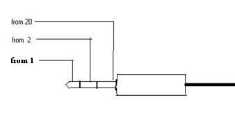

Mandrake sucks. I get a mess of warnings any time I start
a Gtk app because of the weird stuff they've done with their theme.
[Heather]
I can give you my DarkGems gtk theme, would you like it?
I carefully mucked with it till it looked good on gimp and
some other gtk apps that eluded correct behavior under some themes.
I have plenty of themes, it's that Mandrake is set up to look
for their own theme, and I can't get it to stop. My GTK package is
libgtk+-x11-2.0_0-2.5.2-0.1gpw.
[Heather]
ohhh. I might be able to help you with that sometime.
If we do, then we can make a nice tip out of it.
Or if one of you readers knows the right answer, we'll cheerfully pub
what you send us after Jimmy improves his life with GTK
-- Heather
I think it's compiled in.
I've been through the fscking mess of a config layout they
have several times and can't get it to stop looking for that
bloody theme.
[Heather]
You cant just move their theme to another name and copy your
theme into the name it's reaching for? </hack type=cheap>
I have seen ur page for the sendmail configuaration and goes fine ,
And i have tried to configure the sendmail as u said , but i have some
problem regarding the configuration .
Iam trying to configure it as SMTP AUTH client for the mailserver,But
its giving error msg as DNS:service unavailable , i don't understand
what is missing in the configuration.and one more things is its not
alaising the username to the mailid .
Hi,
Firstly I would like to congratulate you on a nicely written article. I
found it very useful.
In addition to the ways you have pointed out in your article there is
another method we can use to sync linux clocks to a central server. I am
talking about using rdate (http://freshmeat.net/projects/rdate).
On the website:
"The rdate utility retrieves the date and time from another machine on
your network, using the protocol described in RFC 868. If you run rdate
as root, it will set your machine's local time to the time of the
machine that you queried."
I use the following command to sync my computers clock every day:
/usr/sbin/rdate -s tick.greyware.com
Thought I should share this with you.
Thanks,
Suramya
'rdate' is just another program using port 37 (Time protocol) which is
what RFC-868 is about. I think 'netdate' is more prevalent. In fact,
you can use shell script, because the server returns number of second
since Jan 1, 1900, in 32-bit number. So:
sec=`nc time.nist.gov 37 | od -A n -t xC | tr -d ' '`
date --date="1970-1-1 0:0:$((0x$sec - 2208988800)) GMT"
where 2208988800 is to make it relative to Jan 1, 1970.
I find that there could be an extra 32-bit number for microseconds.
So, if you change the script to:
set -- `nc time.nist.gov 37 | od -An -txC`
date -u --set="1970-01-01 0:0:$((0x$1$2$3$4 - 2208988800))"
you will use only the seconds.
You are encouraged to use UDP side of things. The shell script has no
choice but to use TCP, because knowing when to exit 'nc' is a hassle.
"[sic] folks. Debian's actual command (to do mass upgrades without breaking
holds or allowing package removals for apps that changed drastically) is:
apt-get upgrade dist -- Heather"
The command is:
apt-get dist-upgrade
I know, because I do it everyday.
I did attempt to correct a typo. I replaced it with a worse one. It
was late, and my vim went one way, my hand another. At least as far as
I can tell. Either that or I was on some amazing grade of sleep deprivation.
-- Heather
[Kapil]
You should avoid doing this for more reasons than one!
1. Since there are only three versions of Debian at any given time
you will reach the top of the charts in exactly two days! Once you
already run "unstable" (or "testing" for that matter), running:
apt-get update; apt-get upgrade
should do the trick.
I do have to say, that 'upgrade' will not help you if they drastically
rearrange a package. And, if you do it habitually you may not notice
that. I don't recommend upgrades where you don't pay attention to such
details.
The package that came to mind a long while back was vim. With merely
'upgrade' Debian would have been glad to leave me in its older style of
package splits. If only it could be told to offer the same care when a
package changes its config files under the hood.
-- Heather
2. There is more to life than keeping up with the Joneses...
[Jimmy]
Yeah, of course. There's keeping up with the Smitheseseses.[1]
[1] Why yes, I am quite drunk. Why do you ask?
The real way in which I was wrong is that neither 'upgrade' nor
'dist-upgrade' keywords break holds, and I claimed that the latter does.
D'oh!
If you're gonna throw tomatoes, let's try to completely dunk the target,
shall we?
Glad you found it helpful! I appreciate your note... even though it was
sent to a very old (and nearly unread) address of mine and thus took a
long time to come to light.
(Didi's comment refers to my "Clearing out the Master Boot Record"
article back in LG#63, which many people have found helpful over time; I
keep receiving grateful comments on it even now, years later. It's very
gratifying to know that I've been able to help so many folks with it.
The reason I'm making this reply a public one is for the new readers
of LG who may not be aware of this useful technique; the article can be
found at http://linuxgazette.net/issue63/okopnik.html .)
Perl One-Liner of the Month
Sat, 06 Nov 2004 08:11:03 +0000
Hans Wennborg (hawe from bigfoot.com)
Reply by Jimmy O'Regan
Thanks for a good e-zine!
Thanks for reading it.
Just wanted to tell you that I miss Ben Okopnik's Perl One-Liner of the
Month imensely! Those articles were what made me start loving Perl.
Woomert and Frink only get a brief cameo, but the one-liners are there.
[Ben]
Hi, Hans -
Thanks for the compliment! For the moment, I've written Woomert and
Frink into a blind alley; I think I need to put that particular story
aside, to be revised at another time (I mean, what kind of a Perl
one-liner can save an alien civilization, and from what threat??? Those
guys get themselves into the craziest predicaments...) and write another
one, not quite that deep.
POLOTM isn't dead, just resting... but it's notes like yours that can
get me motivated to start it rolling again. Look for Woomert and Frink
in the future issues of LG.
Ben O's review of the Averatec laptop is exactly what I'd like to see
more of. It is accurate about the important things and gets right to the
point. Far and away the best laptop review I've even seen.
Thanks very much; I look forward to reading others as they become
available.
-BA
Thanks, BA - reader's compliments make for great author motivation. The
laptop reviews will continue happening (although I may skip a month in
between), and will only terminate on EXIT_SUCCESS - or factors beyond my
control. I definitely need a backup laptop, and will be "processing"
more of them.
I came across your question about Stephen quite by accident, and thought
that, although there has been a response, I would take a moment to post a
personal reply.
We do not actually know the date of Stephen's death...........February 27th
was the day on which he was found by a farmer on Exmoor.
The ensuing inquest concluded that it was 'Death by
misadventure'...Hypothermia being the cause.
Thank you for caring enough to question his whereabouts............I know
many people will miss him and mourn his death.
He was my son.
Sincerely,
Ann Morgan
...............
'That man is a success who lived well, laughed often and loved much: who has
gained the respect of intelligent men and the love of children: who has
filled his niche and accomplished his task: who leaves the world a better
place than he found it, whether by an improved poppy, a perfect poem or a
rescued soul; who never lacked appreciation of earth's beauty or failed to
express it; who looked for the best in others and gave the best he had.'
-- Robert Louis Stevenson.
...............
Thank you, Ann. Stephen was a man who held to his principles, and we
can only respect him for that.
Readers, think kindly of your family this season, even those you don't deal
well with or haven't seen in years. Look for the finer qualities in people
around you. The winter may be cold - but don't forget to care.
This page edited and maintained by the Editors of Linux Gazette HTML script maintained by Heather Stern of Starshine Technical Services, http://www.starshine.org/
I'd whined several times about lack of success in setting an
X-gazette-tag header in Mozilla Thunderbird. The answer lies in the
user.js file, every one of the tens of Google hits I tracked down
promised me. But I'd do each one as specified, and no joy in Mudville.
Tonight, I googled again, and about 6 links into the process, I found
something close to the answer via a link from about.com. In my user.js
file (found in my setup at ~/.thunderbird/*default/user.js) I put in
these two lines:
[Ben]
This works in Mozilla as well, although the file there is "prefs.js".
Searching the Web for the above header confirms that you cannot set a
default value for the header...
[Jimmy]
No, there's a user.js as well. That's what I'm using, and it worked last
time.
[Ben]
Odd. My version doesn't have one - I searched with "find".
if user.js doesn't exist, put it in the same directory as prefs.js. Moz*
is in charge of prefs.js and may/will overwrite any changes in that
file. Additionally, order of loading has user.js last, and settings in
user.js will override prefs.js settings.
[Ben]
Ah - I didn't realize that.
Note that this does not automatically create the header in every
message, nor apparently is there a way to set a default value for the
header (which would make the first part a lie, eh?)
[Ben]
...however, you can add a plugin that will allow you to do that and a
lot more header-related stuff - which reputedly works for Mozilla and
Thunderbird:
That was ONE of the things I tried that didn't meet my needs. It turns
out that it does a lot of header VIEW customization, but not new
composition headers, from about two hours of playing with it, trying to
get to the point I wanted.
[Ben]
Hmph. Might be worth tossing into Bugzilla as a wishlist item; seems
like it's something a lot of folks could use, given how much discussion
there is about it on the Web.
But when I'm sending to TAG, I can select from "To:", "Cc:" "Bcc:" ...
"X-gazette-tag", and add a value for that header. This is the first
test, let's see if it works.
[Jimmy]
And indeed it does. Probably works in Mozilla Mail too.
I tried running cygwin from a CD, and it mostly works (X doesn't, but
Perl, Python and most of the usual tools do). The only thing that needs
to be done is that a few entries need to be added to the registry (these
can be safely deleted when done), because Cygwin doesn't have an /etc/fstab.
This file should be put on the CD. To add the entries, just double click!
If your CUPS printing suddenly stops working with the error:
lp: error - scheduler not responding!
try deleting the printer in the web interface and re-adding it. According
to Gentoo forum posts, glibc had an unexpected API change and that broke
Gentoo's configuration. You probably installed some unrelated software that
upgraded glibc. You may have to re-emerge glibc, cupsd, and turboprint,
but I didn't.
Curiously, I was still able to do the "Print Test Page" from the web
interface, although others said they couldn't.
In an ideal world, dependencies would prevent this kind of problem from
happening. But it's impossible for maintainers to know what
incompatibilities might appear in third-party libraries in the future.
I found the KDE option to change it back to showing the login screen after
logging out instead of shutting down (../106/orr.html). It's
KDE Control Center -> Session Manager -> Login as different user.
Mouse acceleration with Linux/X
Dave Blackburn (blackburn from acm.org)
Answered By Ben Okopnik,
Thomas Adam,
Jason Creighton
How can I adjust the "base" ratio between mouse motion and cursor motion
on the screen?
I have successfully used xset. It works well for me.
My problem is that the "base" ratio (e.g. with xset m 1 10) is too
high (fast).
[Ben]
I'm not sure what you mean by a "base ratio", Dave; I've found that I
prefer a different "xset m" setting for different computer/mouse
combinations, but have never come up with an absolute "rate" to reflect
that preference. Whenever I set up a new machine, I twiddle this for a
minute or two, set it in my ~/.xinitrc, and forget about it from there
on.
I mean the mouse speed (i.e. ratio between mouse movement and cursor movement)
without using: xset -- the initial mouse speed provided by X as if
e.g. xset 1 10 were active.
[Ben]
Ah - I was misled by the word "ratio", which implied to me that you were
using "xset" with some fraction as a parameter (the man page specifies
that you can do this.) Now I get what you mean.
I usually use "xset m" with a single parameter (which specifies
"acceleration" only); I find that this works well for pretty much every
machine out there. Once you start using more than that, you're off into
/Terra Incognita/: some meeces will respond in odd ways to "threshold"
tweaks.
I am using both RH 9.0 and Fedora 2 on a laptop.
With RH 9.0, the "base" ratio is fairly slow.
With Fedora 2 the ratio is quite a bit faster.
[Ben]
I presume the two of them use somewhat different mouse drivers.
Using RH 9.0, I apply xset m 3 20 getting a pleasant result.
Using Fedora 2, the "base" ratio is too fast for me.
Doing an Internet search, I found many explanations for xset.
[Ben]
The man page for it is quite informative as well.
Also, I found the suggestion that I could modify xorg.conf (in /etc/X11)
by adding a line like:
Option "Resolution" "500"
in section:
Section "InputDevice"
Identifier "Mouse0"
This seemed like the answer I was looking for.
However, when trying different values for Resolution,
I observed no change in the "base" rate.
[Ben]
I'm not familiar with "xorg.conf", but I've learned from
personal experience that, while the "Resolution" option
used to work in XF86Config, it does not in XF86Config-4.
This info is helpful. This is what I experienced.
Do one of you know how I can slow down the mouse when running
Fedora 2?
[Ben]
Find the value of "xset m" that you like and add it to your
"~/.xinitrc" or "~/.xsession".
I use xset in ~/.xinitrc.
It seems that xset can only be used to speed up the mouse.
[Thomas]
Err, no. xset is used to control the mouse threshold speed which means
you can either increase or decrease it. One other option you have is
that you might be using an incorrect mouse protocol for your configured
mouse.
I want to slow the mouse down.
In connection with slowing the mouse, I will use xset to control
the higher speed.
Since the "Resolution" option doesn't work in XF86Config-4, perhaps
it's also unavailable in the X.org release.
[Ben]
That would be my best guess. From
/usr/share/doc/xserver-xfree86/README.mouse (note the obvious escape clause):
5.3 Resolution
The following option will set the mouse device resolution to N counts per
inch, if possible:
Option "Resolution" "N"
Not all mice and OSs can support this option. This option can be set in the
XF86Setup program.
Perhaps there is a workaround?
[Jason]
Quoting from the xset manpage:
m The m option controls the mouse parameters. The
parameters for the mouse are `acceleration' and
`threshold'. The acceleration can be specified as an
integer, or as a simple fraction. The mouse, or
whatever pointer the machine is connected to, will go
`acceleration' times as fast when it travels more than
`threshold' pixels in a short time. This way, the
mouse can be used for precise alignment when it is moved
slowly, yet it can be set to travel across the screen in
a flick of the wrist when desired. One or both
parameters for the m option can be omitted, but if only
one is given, it will be interpreted as the acceleration.
If no parameters or the flag 'default' is used, the
system defaults will be set.
The key to an ugly workaround is the fact that you can specify the
acceleration as a simple fraction. Thus:
xset m 1/2 1
...will cut the speed in half. But you lose any acceleration features
because you're using it to hack the mouse speed to where you want it.
But if that doesn't bother you, this method is one option.
[Ben]
The fractional specification may work for you. Conversely, as Thomas
suggested, the two distros may be using two different mouse drivers
(compare the '"Option" "Device"' and '"Option" "Protocol"' lines in
their X config files); if that's the case, then simply choose the one
that works best for you, and do the final tweaking with "xset" from
there.
[Thomas]
By all means. I've Cc'ed The Answer Gang on this, since I assume this is
where you got my e-mail address. If you don't want this published, let me
know.
I have installed SuSe Linux 6.4 as a mail server. The current version
of quota is 2.11
- what is the latest version? where can I get it?
[Thomas]
Quota support is kernel and user-land. Therefore I can only assume that
you are referring to the userland tools. Currently the version is at 3.12,
available here:
- How to update to the old version? please give me steps.
[Thomas]
It's a case of removing the old quota tools and installing the new one.
There's a number of ways you can do this. The INSTALL file within the tar
file tells you all, and it should just be a simple matter of:
./configure && make && su -c 'make install'
Note that by default, this will install into /usr/local/* -- if
"/usr/local/bin" is not in your $PATH, before "/usr/bin" and you still
have the old quota-tools installed, this will conflict. If, however,
/usr/local/bin is listed before /usr/bin in your $PATH then this should
not be a problem. But you should make sure you remove the old quota-tools,
regardless.
Thanks for your quick response and it helped me a lots.
Tip: ls -l, AIX style
Jimmy O'Regan (The LG Answer Gang)
Answered By Bradley Chapman,
Kapil Hari Paranjape
On a certain other Linux site, I saw an unanswered question about
getting the time format of ls -l to have a leading zero on single digit
dates, like AIX does, instead of padding with a space as GNU ls does.
I was not aware of this (before I went to the man page), but GNU ls will
format the date any way you like, if you use the --time-style switch. To
use 'date' style formatting, you prefix it with a '+'.
So, AIX-style ls -l is:
ls -l --time-style=+"%b %d %H:%M"
[Brad]
Does ls support any environment variables to do this? Something like
export TIME="%b %d %H:%M"
ls -l
or do you have to use an alias in your ~/.*rc files?
[Kapil]
According to "info ls":
You can specify the default value of the `--time-style'
option with the environment variable `TIME_STYLE'...
So the correct environment variable is TIME_STYLE not TIME.
Kapil.
You still need to have the '+', so it's
export TIME_STYLE=+"%b %d %H:%M"
ls -l
POP3 for Yahoo Mail
Breman (012832161 from mobitel.com.kh)
Question by Breman (012832161 from mobitel.com.kh)
Answered By Thomas Adam,
Kapil Hari Paranjape
- What is pop3/smtp of yahoo mail?
[Thomas]
There isn't any freely available as yahoo removed that service. That said,
you can "emulate" it using a program called 'yahoopops' available here:
How you forward dhcp serive across differenent interfaces on ones firewall
17:11 < billp>
dhcp services*
17:11
* Wicket sniffs billp
17:13 < billp>
So I have a dhcp server running on a hostname "dhcpserver", and it sends lease offers to networks it is not actully connected to, via connected interfaces on the firewall
17:14 < billp>
So, a Linux firewall connecting a subnet with a dhcp server to two subnets without dhcp servers, would go something like:
where dhcpserver is the hostname of your dhcp server. Dead useful, especially for having untrusted network segments, like an open-access wireless one
17:16 <@Dee>
i see
This page edited and maintained by the Editors of Linux Gazette HTML script maintained by Heather Stern of Starshine Technical Services, http://www.starshine.org/
The Answer Gang
Linux Gazette 109: The Answer Gang (TWDT)The Answer Gang 109:
...making Linux just a little more fun!
The Answer Gang By Jim Dennis, Karl-Heinz Herrmann, Breen, Chris, and...
(meet the Gang) ...
the Editors of Linux Gazette...
and
You!
We have guidelines for asking and answering questions. Linux questions only, please.
We make no guarantees about answers, but you can be anonymous on request. See also: The Answer Gang's
Knowledge Base
and the LGSearch Engine
Greetings, dear readers, and welcome once again to the world of The Answer
Gang.
A world, I note, which has changed quite a bit in the last year. Last
December it was like the Gazette was under a sort of shadow - our
crew handled the transition to our new site with all the energy we could
muster, but there's only so much life we few who run this could pour in
- we had to wait for you readers to rediscover us.
We were already a great team, but the effort bound us together in a way
that's really rather hard to describe... except that I like the results. We
learn from each other on the lists as much as we ever did, but it's more
than that, we're closer as friends I think, and we back each other up on
things. We don't always agree (you put 20 plus
curmudgeonly and very smart people in a room together and watch the fun.
Oh? You say that's your typical holiday party? You see what I mean then)
and at times Real Life(tm) mugs one or another of us ... and we really are
different people, in what can take us down or carry us forward ... but we
try to do more for each other.
It brings me great joy this year to still be bringing Linux
Gazette to your browser's doorstep. I have to admit that for
awhile even my own enthusiasm was failing; in past years I had done it for
simply knowing Jim's "Answer Guy" pages would look far better when I put my
hand to them. For awhile I had done it just for knowing there were
uncounted readers out there looking for our good bits every month. In my
own harder times I did it simply because I had promised to, I couldn't let
you people down, and what little energy I could gain from knowing I was
getting at least one job done right was very much a boost to me.
The ordeals we put ourselves through here have given me strength in my
friendships and renewed hope for a lot of little things in my life, Linux
just one of them. The world has turned again, and I'm glad to know that
you people are out there, still reading this, telling your newbie friends
that their Linux troubles are solvable, we can Make Linux Just A
Little More Fun and even get a giggle now and then.
That's part of what has seriously changed the face of LG
though.
The kind of people who were Linux newbies 5 years ago are not the same
today. For one thing those people aren't newbies, but they still like to
read about Linux and expand their knowledge even further. But the people
who even thought about Linux then have a smorgasboard of choices
now - and the newbies of today are in many cases less technical - you can
buy "a linux box" at Wal-Mart, on special at CompUSA, you might be leaping
ship from the (amazing to me, why does Microsoft saw off its own foot like
this??) myriad flavors of MSwin to be found nowadays. Whether or not they
ever caught a virus, the crashes and the pain they encounter when they dare
to change their hardware are just as stumping to them as the box of Red Hat
or SuSE on the store shelves. If they're going to get their hands dirty
anyway... they may as well try this Linux thing on for size.
It won't fit all of them.
That's the thing about a world of choices. vi versus emacs
debate fans the world over know that when it comes down to someone being a
power user, the fact they've learned all the deep magics is worth a lot more
than what type of filesystem runs under the hood or what some geek thinks is
an 'operating system'. If the system operates, that's what they like. And
that's good. I made the choice to stick with Gazette the way that
gave it its power, a monthly source of good knowledge and fun. It's been
worth it, and I thank all of you, of whatever age, country, newness to linux
or being such an old hat that "Red Hat" upstart's a whippersnapper, for
joining us every month. Send us your tips and good stories. Have a great
time with Linux.
So it's the holidays now, and I'm giving you folks out there the same thing
I give my dear friends and family every year, however rich or poor I might
be. Presence.
Laptop review: Averatec 5400 series
From Rick
Answered By: Ben Okopnik
Hi Ben,
Good article. My experience with laptops have had varied results. By
that I mean, in many cases it has more to do with the distribution of
Linux as it does with the hardware. I have a Compaq Presario 915ca
(the specs on this can be easily looked up). The only upgrade is to
512MB of RAM. In any event, I am currently running WinXP and 3
different versions of Linux (I am a bit of an OS junkie!) using a 3rd
party boot loader.
Xandros recognizes everything out of the box, even the WinModem! I had
[Ben]
"Out of the box" functioning is nice to have, but I don't expect it -
and once you don't, all distros become essentially equal. There is no
difference between, e.g. the kernel used in Mandrake and the one in
Debian beyond possibly compilation choices and maybe a patch or two -
which I can also get and use at need. There's certainly no difference in
the standard toolkit, and there's no real difference in configuration -
the tools may vary, but the end result is the same. I'm expert enough
with Linux to do the configuration myself, so that issue does not
obtain.
Admittedly, this is more difficult than tossing in a different distro
and seeing if it works - but it carries the near certainty that if
something can be made to work, and I take the time to do so, it will
work, regardless of the distro. In my experience with multiple distros,
Debian is one of the more easily configurable ones (the only "tool"
required being a text editor), and so I use, and will be using, Debian
and possibly its derivatives (e.g., Knoppix or Morphix) for this
testing.
You may be assured that if I can make Debian work on a given laptop,
then any other distro can also be convinced to do so. It may take more
or less work, but it's doable. On the other hand, if I'm unable to make
it work, that fact will not be conclusive.
to mess with the /etc/fstab file a bit to get my 80GB USB hard drive
working properly, but overall Xandros works well on this machine.
I guess the point of my email here is, sometimes it's just as
important to find the right distro as it is the right hardware. I
recently tried to install Linux on a friends new laptop. I went
through about 10 different distros (including Fedora Core 2, Ubuntu,
and even tested with Knoppix, which is Debian based and with great
hardware detection!). Everything failed! ... ie: no mouse, it crashed
the X server, etc. Finally I tried SuSE 9.1 and it just worked. Yes, I
had to install the Nvidia drivers, and I never did manage to get his
built-in wireless to work!
[Ben]
That can be a valid strategy if you don't have a lot of expertise to
rely on, and it's nice that it's available. It is, however, not the only
strategy, nor is it one that I prefer.
(sometime it seems the hardware manufactures engineer "anti-Linux"
into their products!)
[Ben]
As much as a frustrating experience with hardware can make you lean in
the direction of that belief, I have to believe that it's false at its
core. PC OEMs are in the business of selling hardware; I can't think of
an argument convincing enough to make them purposely chase customers
away.
Yes, I agree with you. However, the vast majority of users do not know
how to recompile a kernel, nor do they want to know. I would say that
people like you account for a very small percentage of computer users.
Most of my friends think I am some kind of computer wizard, but in
reality, I am nowhere near that. Everything is relative, isn't it? I
am probably in the top 10% of computer users from a knowledge point of
view, and you are likely in the top 1%.
[Ben]
I'm afraid you missed the point I was trying to make, Rick - I guess I
didn't state it clearly enough. In essence, if I can get a laptop
working well under Linux, whatever the distro, then it's at least
possible and in fact not too difficult - you may have noticed in the
article that I'll simply stop trying once it's consumed a certain amount
of time (a few hours at most.) If I can't do it at all (as was the case
with the HP 5000 I'd picked up from Staples), then it gets blackballed.
In both cases, a report of the experience becomes useful and doable,
whereas testing every laptop against a dozen distros is out of the realm
of possibility.
As for the comment about hardware manufacturers purposely engineering
anti-Linux products, I was just being facetious.
[Ben]
I understood that, but wanted to use your comment to clarify my view of
the situation; I've heard a lot of people grumbling about it as if they
believed it.
As for aviation, well I am only 43, but I took up flying when I was
16. I am not currently flying, as things got all f&*^%$d up for me
after 9/11. It's a rather long story.
[Ben]
Yeah. I've heard of a number of pilots who were affected... and you've
probably heard about the recent TSA alien flight training/citizenship
verification rule. That's going to shaft a LOT of pilots - and the
damned thing is as confusing as can be imagined, and a couple of miles
beyond that. AOPA is fighting the good fight, but there's a lot of fear
in the air - and about it.
Linux boots from RAMdisk,
From keesan
Answered By: Kapil Hari Paranjape, Thomas Adam
I tried telling CMOS that there was no second drive because someone
suggested that method to get linux to recognize a larger drive, but my
drive is 3GB. I have DOS on a master drive and two linux partitions on
the slave drive, with one linux in each, and RAMdisk and loop versions in
DOS partitions.
I am able to mount the linux partitions when running from the RAMdisk or
loop versions and then switch to run linux on them:
mount /dev/hdb1 /mnt
chroot /mnt
This puts hdb1 on / and I can then use linux on the ext2 partition.
[Kapil]
But this is essentially what most initrd-based start up procedures do
anyway! So, though I haven't used BasixLinux, I would guess that the
problem is with the start scripts on your ext2 partition in /etc/rcS.d
or some such.
This is a minor nuisance and I suppose I could put it in an rc file, or
just use the smaller version unless I needed the larger one.
[Kapil]
The glass could also be half full! Given the variety of hardware that
Linux runs on it is surprising that so many computers boot with it at
all.
I am writing out of curiosity - why are so many computers difficult to
boot with linux? Is there a better fix for this one? Is there a better
fix for the other three besides installing Win98 DOS on them (and having
to use a boot floppy to defragment the DOS partitions after that) or
rebooting with a Win98 boot disk to go from DOS to linux?
I also have one Northgate 386 SX 20MHz 4.7MB RAM laptop which has no
cursor in linux. Cirrus video, 256K video RAM, mono VGA. The cursor is
plain white when used in color VGA. The computer in theory can output to
a color monitor in 800x600 resolution.
[Kapil]
Is this with or without X? The question is not clear enough. Are you in
graphics mode or text mode?
[Thomas] The distinction here is whether he is running with Framebuffers or not. Framebuffers are pretty much standard and most monitors that are not of the dark age can handle them, assuming their VGAness is OK. That said, certain monitors can react badly to the Framebuffer modeline it has been given and blank out. In fact, I remember discussing this some time ago in LG:
Does laptop video treat software cursors oddly? A cursor appears when I
use a text editor. There is a cursor while booting to DOS and in DOS.
Another 386 with identical speed, RAM and video won't boot linux at all -
the screen goes black and I need to reboot. What might cause this
problem?
[Kapil]
Try booting with the additional option "vesafb=off". Some of the older
hardware may not respond well to being switched to graphic mode.
[Thomas] Again, that won't be enough. He'll need to tell it to not only ignore vesafb, but to ensure that the vag16 definitions are turned off. So at the boot prompt:
linux nofb video=vga16:off vesafb=off vga=normal
Ought to do it.
Quota needs update, help!
a place for everything and everything in its place...
From Breman
Answered By: Thomas Adam, John Karns, Ben Okopnik
May I ask you some questions below:
I have installed SuSe Linux 6.4 as a mail server. The current version of quota is 2.11
[Thomas]
Quota support is kernel and user-land. Therefore I can only assume that
you are referring to the userland tools. Currently the version is at 3.12,
available here:
How to update to the old version? please give me steps.
[Thomas]
It's a case of removing the old quota tools and installing the new one.
There's a number of ways you can do this. The INSTALL file within the tar
file tells you all, and it should just be a simple matter of:
./configure && make && su -c 'make install'
Note that by default, this will install into /usr/local/* -- if
"/usr/local/bin" is not in your $PATH, before "/usr/bin" and you still
have the old quota-tools installed, this will conflict. If, however,
/usr/local/bin is listed before /usr/bin in your $PATH then this should
not be a problem. But you should make sure you remove the old quota-tools,
regardless.
[John]
That's the way I usually do it, too. But there is also something to be
said for staying within the boundaries of the package management system,
which in SuSE's case (as well as Red Hat and Mandrake, and probably a few
others) is the rpm system.
[Thomas]
I disagree. Package management should be sufficiently advanced that if one
doesn't want a particular package (or one wants to override it), then one
can. This is where stow shines, for all the reasons outlined above. You are
not tied down to having to install .rpm just because you can.
Of course, if you are compiling from source, for the odd program then this is
not so much an issue as all of the libaries are linked (or should be) for the
appropriate versions that exist on the system at the time.
[John]
Note: with such an old version of the distro as in the case of the
querent, dealing with this issue may prove to be more trouble than it's
worth, depending on how the package in question has evolved. I.E., in
cases where there have been significant changes to the number of files
involved, and / or their placement in the filesystem, then the process
would likely involve fundamental changes to the rpm spec file, which may
require a good understanding of the inner workings of the rpm system.
But for a more current version of an rpm based distro, the process would
be much less problematic, and provide the advantage of keeping the rpm
database "in sync" with the installed system, thus easing efforts
concerning system maintenance regarding package management issues. It
would entail something along the lines of replacing the 'make install'
with 'rpmbuild --rebuild', after replacing the older package source files
with those of the newer version.
What is pop3/smtp of yahoo mail?
There isn't any freely available as yahoo removed that service. That said,
you can "emulate" it using a program called 'yahoopops' available here:
I have install in as default configure (usr/local/) and now I want to
reinstall it in /usr/local/quota312 folder.
How to uninstall it?
[Thomas]
Uninstalling compiled software can be hit and miss, since it depends
whether the source makefile has an "uninstall" target in it, or not. So
the first thing I would do, is for the source where you compiled your
quota-tools, do:
cd /tmp/quota-tools/ && su -c 'make uninstall'
If that doesn't work, then the makefile probably doesn't support the
feature, although it is worth looking at the makefile to see. The other
option, if not, is to delete the files by hand. There are various tar and
rm incantations to do that. But I would do it by hand, myself.
One other thing I will mention to you for the future is that if you find
yourself compiling software from source a lot, I really do recommend you
use stow [1,2]. It is a really useful piece of software and would have
helped you here easily.
Thanks for your quick response.
I try your uninstall connand but not success.
I got the warning: "make: *** No rule to make target `uninstall'. Stop"
I will delete it manually.
Can we just install again without uninstall first?
[Ben]
There's a way to do it that I invented in a fit of desperation; it's a
little manual but quite effective.
1. Run "make -n install > uninstall".
2. Edit the newly-created "uninstall" file and replace the "install" or "cp" commands with "rm", editing each line as necessary.
3. Run "sh uninstall".
Submitters, send your News Bytes items in
PLAIN TEXT
format. Other formats may be rejected without reading. You have been
warned! A one- or two-paragraph summary plus URL gets you a better
announcement than an entire press release. Submit items to
bytes@lists.linuxgazette.net
Legislation and More Legislation
European Software Patents
The difficulties and delays dogging the European Union's attempts
to agree on a software patent policy continued in November, this
time to the benefit of anti-software-patent interests.
In September last year, the European Parliament (a directly
elected body, with representatives from all European Union member states)
voted to accept a directive on the "patentability of computer-implemented
inventions". This directive was only accepted subject to a set of
amendments that constituted real and substantial limits on the
patentability of software. This fact was recognised both by
gratified anti-software-patent campaigners
and by
chagrined patent attorneys.
However, following this initial success, May 2004 brought a
setback as the European Council of Ministers (a body composed of
ministerial representatives from EU member states' governments)
instead moved to advance a directive that excluded the
substantial amendments adopted by the Parliament. As well as
disheartening Free Software advocates, this brought howls of
protest from the Parliamentarians who (in a not untypical tug of
war between the branches of EU administration) accused the
Council of flying in the face of democracy. After May, the obstacles
still standing between the Directive and its final ratification
were for the Council to formally adopt the directive, and then
for the directive to pass before Parliament once more. This
brings us to the present day.
This heroic about-turn by Poland, as well as similar
pronouncements emanating from Austria should remind us that
this fight is certainly still there to be won.
The efforts of prominent Free and Open Software figures like
Linus Torvalds, Michael Widenius, and Rasmus Lerdorf
who have raised their voices to say
"No to Software Patents"
are welcome, especially as they provide an example to all of us
that if we feel this issue is important then we should make our
opinions known. Those supporting a future software industry
stretched on
a rack of software patents are certainly not shy about
pushing their case.
Truly, can we afford the luxury of silence? Wladyslaw Majewski,
president of the Internet Society of Poland puts the point
starkly:
"The questionable compromise that the EU Council reached in
May was the biggest threat ever to our economic growth, and
to our freedom of communication. The desire of the patent
system and the patent departments of certain large
corporations must never prevail over the interests of the
economy and society at large."
During November,
Slashdot highlighted and discussed
a very illuminating
article at Groklaw, written by a retired attorney. Written
in the context of Novell's current anti-trust case against
Microsoft, the article points out that quite apart from the
interest stirred up by the substance of this particular case,
this is also a great opportunity to store up ammunition for
future legal adventures. The key to this opportunity is that the
discovery process will, at least temporarily, move a lot of
Microsoft material into the public eye. The trick is then to
store it up for future use.
Nmap
The Register and Security Focus
have reported
that Fyodor, the author of the
port-scanning network security tool Nmap, has found that his
software writing has brought him into surprisingly close terms
with the FBI. Apparently the Feds have begun to look for access
to his webserver logs in order to identify individuals or
organisations downloading tools like Nmap.
OSRM and Patent Risks
Open Source Risk Management has steered a somewhat
controversial course since arriving on the scene offering to
indemnify open source developers against hostile intellectual
property lawsuits. In a bid to encourage use of its services,
OSRM has at times appeared to over-emphasise the risks open
source software developers and users expose themselves to.
As reported by internetnews.com, this perception has now
resulted in Pamela Jones (of
Groklaw) resigning her position as litigation risk research
director for the group. In particular, Pamela wished not to
contribute to activities that she felt were creating fear and
doubt about Linux, and providing ammunition to anti-open-source
interests.
The potential damage caused by such publicity is demonstrated by
the usefulness of one particular OSRM report to Microsoft's Steve
Ballmer, who used it to claim in front of Asian business leaders
that
Linux violates over 200 patents.
However, one should not be too critical of OSRM, since quite
apart from any
FUD there does
appear to be a real and growing likelihood that open source
software will in the future be attacked using patents.
Microsoft's statements on the issue of intellectual property
point in this direction, as does its policy of substantially
increasing its own patent portfolio. This portfolio can be used
either defensively, or offensively, but either way its existence
and rapid growth indicate a messy time ahead,
and it seems the lawyers can already smell blood in the water.
Highlighting this threat can lead to some bad publicity, such as
Ballmer's showboating in Asia, but it is also useful for
generating awareness. And as pointed out by Ballmer,
and highlighted by The Register,
our current framework of international agreements governed by the
WTO means that these issues will have ramifications right across
the globe. How any possible patent-war will pan out is still an
open question, but having good awareness in the Free Software
ranks of the risks and dangers that are faced is sure to be a
good thing.
John C. Dvorak
writing at CBS MarketWatch
thinks Microsoft is planning to make an entry into the Linux
marketplace, and that this explains the effort invested in the
Lindows trademark lawsuit.
Intel has announced an initiative that shows a growing interest
in Linux. The new
quick-start kit
for systems-integrators, launched in the Asian market, is
intended to facilitate the building of Linux-based desktop PCs.
This is a small move towards providing the kind of support
Windows PC integrators have grown used to.
Netherlands
The European Union
Interchange of Data
Between Administrations Project
has publicised the decision of the local government in the Dutch
city of Haarlem to
switch 2000 desktops to OpenOffice.org. As well as currently using
GNU/Linux in server applications, the local government is
exploring the feasibility of migrating desktops to the operating
system, with initial estimates indicating that 20% of desktops
could be migrated without causing particular difficulties or
inconvenience to employees.
The Dutch prime minister and the office of the Irish prime
minister have also
encouraged European governments to consider open source software
in the spirit of inter-agency collaboration. Now, while such
pronouncements are good to hear, this writer is relatively
familiar with Irish government policy on these matters, and it is
anything but coherent. If this is the case elsewhere, then
if your elected representative pays lip-service to open source
and Free Software, then perhaps it would be helpful to follow up
on this with a letter, to let them know you paid attention, that
you'll remember what they said, and that if they do a U-turn on
it then they'd better knock on somebody else's door come election
time!
This new publication has also
received comment on Andy Oram's weblog at O'Reilly.com.
Distro News
Damn Small Linux
OSDir.com has published
a screenshot tour
of
Damn Small Linux 0.8.4.
Damn Small Linux is a business card size (50MB) bootable Live CD
Linux distribution that strives to have a functional and easy to
use desktop.
Linux Journal
has published an interesting article
on
gnuLinEx. GnuLinEx is the Debian-based operating system used
by the government of the Autonomous Community of Extremadura,
Spain. The system is used widely in the region's schools, and
also in local government administration.
Knoppix
O'Reilly has published a book dealing with some of the cool
things you can accomplish with the Debian-based GNU/Linux live-CD Knoppix:
Knoppix Hacks.
This book was
reviewed on Slashdot
(the review was very favourable, to the extent that it was linked
on the press-release advertising this title).
Slackware
Patrick Volkerding, coordinator of
Slackware Linux, has been having
serious health problems in
recent weeks. Patrick has found it difficult to obtain
satisfactory treatment from the doctors that he has visited to
date, so he has solicited help from members of the community.
Topologilinux
Linuxforums.org has published
a review of Topologilinux.
Based on the much respected Slackware, Topologilinux is a free
Linux distribution designed to be run on top of or inside an
existing windows system. Thus, Topologilinux does not require any
repartitioning of the system's hard drive, and instead it uses a
single file as a linux root system.
Software and Product News
Lulu
Lulu, a company that offers people the chance to self-publish
at relatively modest costs (at least for small production runs)
is now aiming to
extend this service to open source software developers.
The intention is to sell boxed sets comprising the software
itself, as well as printed and bound manuals and documentation.
An example of this class of product is the
Fedora GNU/Linux distribution.
It provides migration process planning, automated migration
scripts, anti-virus/anti-spam solutions, and specific
migration and deployment details for all relevant
technologies. The CD includes valuable automated scripts for
migrating any flavor of Windows to Linux.
Another title likely to be of interest to readers is
SELinux.
This book provides a background to SELinux, as well as guidelines
on its installation and subsequent use.
Originally hailing from Ireland, Michael is currently living in Baden,
Switzerland. There he works with ABB Corporate Research as a
Marie-Curie fellow, developing software for the simulation and design
of electrical power-systems equipment.
Before this, Michael worked as a lecturer in the Department of
Mechanical Engineering, University College Dublin; the same
institution that awarded him his PhD. The topic of this PhD research
was the use of Lamb waves in nondestructive testing. GNU/Linux has
been very useful in his past work, and Michael has a strong interest
in applying free software solutions to other problems in engineering.
Virtual Filesystem: Building A Linux Filesystem From An Ordinary File
Under Linux, you can create a regular file, format it as an ext2, ext3,
or reiser filesystem, and then mount it just like a physical drive. It's
then possible to read and write files to this newly-mounted device. You
can also copy the complete filesystem, since it is just a file, to another
computer. If security is an issue, read on. This article will show you how
to encrypt the filesystem and mount it with ACL (Access Control Lists),
which gives you control of rights beyond the traditional read (r), write
(w), and execute (x) permissions for the three user groups "file", "owner",
and "other".
This is an excellent way to investigate different filesystems
without having to reformat a physical drive, which means you avoid
the hassle of moving all your data. This method is quick -- very
quick compared to preparing a physical device. What is truly great
about this technique is that you can explore different filesystems
such as reiserfs, ext3, or ext2 without having to purchase an
additional physical drive. Since the same file can be mounted on
more than one mount point, you can also investigate sync rates.
Creating a filesystem in this manner allows you to set a hard
limit on the amount of space used, which, of course, will be equal
to the file size. This can be an advantage if you need to move this
information to other servers. Since the contents cannot grow beyond
the file, you can easily keep track of how much space is being
used.
First, you want to create a 20MB file by executing the following
command:
$ dd if=/dev/zero of=disk-image count=40960
40960+0 records in
40960+0 records out
A count of 40960 created a 20 MB file because, by default, dd uses a
block size of 512 bytes. That makes the size: 40960*512=20971520.
Next, to format this as an ext3 filesystem, you just execute the
following command:
$ /sbin/mkfs -t ext3 -q disk-image
mke2fs 1.32 (09-Nov-2002)
disk-image is not a block special device.
Proceed anyway? (y,n) y
You are asked whether to proceed because this is a file, and not
a block device. That is OK. We will mount this as a loopback device
so that this file will simulate a block device.
Next, you need to create a directory that will serve as a mount
point for the loopback device.
$ mkdir fs
You are now one step away from the last step. You just want to
find out what the next available loopback device number is.
Normally, loopback devices start at zero (/dev/loop0) and work
their way up (/dev/loop1, /dev/loop2, ... /dev/loopn). An easy way
for you to find out what loopback devices are being used is to look
into /proc/mounts, since the mount command may not give you what
you need.
On my computer, I have no loopback devices mounted, so I'm OK to
start with zero. You must do the next command as root, or with an
account that has superuser privileges.
# mount -o loop=/dev/loop0 disk-image fs
That's it. You just mounted the file as a device. Now take a
look at /proc/mounts, you will see this is using /dev/loop0.
You can now create new files, write to them, read them, and do
everything you normally would do on a disk drive. First, I'll give
access to the chirico account.
# chown -R chirico.chirico /home/chirico/junk/fs
Now, under the chirico account, it is possible to create
files.
$ cd /home/chirico/fs
$ mkdir one two three
$ ls -l
total 15
drwx------ 2 chirico chirico 12288 Sep 3 14:28 lost+found
drwxrwxr-x 2 chirico chirico 1024 Sep 3 14:34 one
drwxrwxr-x 2 chirico chirico 1024 Sep 3 14:34 three
drwxrwxr-x 2 chirico chirico 1024 Sep 3 14:34 two
$ df -h
Filesystem Size Used Avail Use% Mounted on
/dev/sda2 17G 11G 4.6G 71% /
/dev/sda1 99M 83M 11M 89% /boot
none 62M 0 62M 0% /dev/shm
/home/chirico/junk/disk-image
20M 1.1M 18M 6% /home/chirico/junk/fs
If you need to unmount the filesystem, as root, just issue the
umount command. If you need to free the loopback device, execute
the losetup command with the -d option. You can execute both
commands as follows:
Before we get started with ACL, how would you set up rights on
the filesystem so that users could create and save documents that
others could modify? For instance, let's say that users chirico and
sporkey are collaborating on a project together.
Well, you have to add everyone to the same group. You would
execute commands like these:.
Note that if these changes do not take effect for your users
(for example, if they were logged in when you executed the
commands), they'll have to log out and log in again or execute the
"$ newgrp sharefs" command. No big deal, right? Well,
keep reading, and see how ACL avoids this step.
More importantly, even though the old way worked for you,
at some point, new users may need to be added to the project. What
if some of these users only need a subset of the rights? For
instance, you have developers, testers, managers, and a few special
people. There are limits to what the 'rwx'-type rights can do. ACL
solves a lot of these problems.
ACL, Reiserfs, and AES Encryption: The 2.6 Kernel
For the next steps, I will assume that you are running Red Hat
Fedora Core 2. If not, reference the 2.6 kernel upgrade section
below. Four things will be covered in this section:
Create A File With Random Data
Set Up An AES Encrypted Loopback Device With Password
Build A Reiser Filesystem On The Loopback Device
Mount With ACL Capabilities
Your installation of Fedora Core 2, by default, will be
configured for loop, cryptoloop, and aes, but it is highly unlikely
that you will have all of these modules loaded. So, execute the
following commands to load these modules (you will need to do this
as root):
Next, create a directory to store the files. The Reiser
filesystem will require more space than the ext3 filesystem.
# mkdir /home/diskimg
# cd /home/diskimg
Instead of creating the file zeroed out, like you did with the
ext3 filesystem, this one is going to contain random bits, which
may add a little extra security.
# dd if=/dev/urandom of=disk-aes count=102400
We need to encrypt the loop device, so you need to use losetup.
You will be prompted for a password, which you will need to
remember when you mount the device.
# losetup -e aes /dev/loop1 ./disk-aes
Password:
This step is new also. Instead of formatting the file directly,
you will format the loop device. The file stays encrypted. Again,
you will be prompted to continue, so just enter "y".
# mkfs -t reiserfs /dev/loop1
mkfs.reiserfs 3.6.13 (2003 www.namesys.com)
A pair of credits:
Elena Gryaznova performed testing and benchmarking.
The Defense Advanced Research Projects Agency (DARPA, www.darpa.mil) is the
primary sponsor of Reiser4. DARPA does not endorse this project; it merely
sponsors it.
Guessing about desired format.. Kernel 2.6.8-1.521 is running.
Format 3.6 with standard journal
Count of blocks on the device: 12800
Number of blocks consumed by mkreiserfs formatting process: 8212
Blocksize: 4096
Hash function used to sort names: "r5"
Journal Size 8193 blocks (first block 18)
Journal Max transaction length 1024
inode generation number: 0
UUID: 435e3495-5e2e-489d-bf55-1b5f9a44b670
ATTENTION: YOU SHOULD REBOOT AFTER FDISK!
ALL DATA WILL BE LOST ON '/dev/loop1'!
Continue (y/n):y
Initializing journal - 0%....20%....40%....60%....80%....100%
Syncing..ok
Tell your friends to use a kernel based on 2.4.18 or later, and especially not a
kernel based on 2.4.9, when you use reiserFS. Have fun.
ReiserFS is successfully created on /dev/loop1.
Create the mount point /fs, and mount this device. Note that you
will be entering the acl option as well. Plus, you will prompted
for a password.
# mkdir /fs
# mount -o loop,encryption=aes,acl ./disk-aes /fs
Password:
Ok, now take a look at the mount command. It should show up as
the Reiser filesystem, encrypted, using ACL. Note that it says
loop2; it mounted it on /dev/loop2, which is one above what losetup
specified, /dev/loop1.
$ mount
/home/diskimg/disk-aes on /fs type reiserfs (rw,loop=/dev/loop2,encryption=aes,acl)
Exploring ACL
With ACL (Access Control Lists), you have finer control over
access permissions. With the rwx permission scheme, you cannot
easily change rights without creating new groups to handle the
users. With ACL, you can set user permissions without creating a
group, and individual users can add or remove access.
These rights are set with the setfacl command. The
command below will give the users donkey, chirico, and bozo2 access
to this new filesystem that we mounted. Again, I'm assuming that
you are using Fedora Core 2, or some distribution that is set up
for ACL.
This is just scratching the surface of what can be done with
ACL. For more information, see some of the references below.
2.6 Kernel Upgrade
This article will get you started with the 2.6 kernel if you
are currently running Red Hat 8 or 9. You may want to take a look
at it to see what is involved. If you decide to upgrade, you will
need to configure your kernel for the following:
This is done in the .config file, and you can download my config
file
here. Just look for
kernel-2.6.8.1-i686-chirico-reiserfsacl.config in the tar.gz.
In addition to upgrading the kernel, you will need the latest
version of the Linux
utilities. Currently, there is no need to patch this version.
In the past, there was a patch, but this version worked fine for
me.
Check out tips 12, 22, and 91, on how to use ssh with rsync.
You can create a virtual filesystem on a server, then copy it to
your laptop. As you work on the laptop, sync your changes using
rsync.
by Mark Mitchell, Jeffrey Oldham, and Alex Samuel, of
CodeSourcery LLC, published by New Riders Publishing, ISBN
0-7357-1043-0, First Edition, June 2001. This book is free and you
can view it online.
Chapter 6 describes loopback devices.
Tips on using Comcast Email with a home Linux box.
Mike Chirico, a father of triplets (all girls) lives outside of
Philadelphia, PA, USA. He has worked with Linux since 1996, has a Masters
in Computer Science and Mathematics from Villanova University, and has
worked in computer-related jobs from Wall Street to the University of
Pennsylvania. His hero is Paul Erdos, a brilliant number theorist who was
known for his open collaboration with others.
Mike's notes page is souptonuts.
This article explores common methods in SQLite such as running
commands from the shell prompt and creating triggers for
populating time stamped fields with either UTC or local time
values. In addition, delete, update, and insert trigger examples
will be explored in detail.
All examples can be found in
sqlite_examples.tar.gz (local copy), and I would
encourage you to download and run these examples as you read through this
document.
The home page for sqlite3 is www.sqlite.org and the source for
sqlite3 can be downloaded at www.sqlite.org/download.htm.
This tutorial was done with the source version 3.0.8
Getting Started - Common Commands
To create a database file, run the command "sqlite3" followed by
the database name. For example, to create the database "test.db"
run the sqlite3 command as follows:
$ sqlite3 test.db
SQLite version 3.0.8
Enter ".help" for instructions
sqlite> .quit
$
The database file test.db will be created, if it does not
already exist. Running this command will leave you in the sqlite3
environment. There are 3 ways to safely exit this environment (.q,
.quit, or .exit).
You do not have to enter the sqlite3 interactive environment.
Instead, you could perform all commands at the shell prompt, which
is ideal when running bash scripts and commands in an ssh string.
Below is an example of how you would create a simple table from the
command prompt.
After table t1 has been created, data can be inserted as
follows:
$ sqlite3 test.db "insert into t1 (data,num) values ('This is sample data',3);"
$ sqlite3 test.db "insert into t1 (data,num) values ('More sample data',6);"
$ sqlite3 test.db "insert into t1 (data,num) values ('And a little more',9);"
As expected, doing a select returns the data in the table. Note,
the primary key "t1key" auto increments; however, there are no
default values for timeEnter. To populate the timeEnter field with
the time, an update trigger is needed. An important note on the
PRIMARY KEY: do not use the abbreviated "INT" when working with the
PRIMARY KEY. You must use "INTEGER", for the primary key to
update.
$ sqlite3 test.db "select * from t1 limit 2";
1|This is sample data|3|
2|More sample data|6|
In the statement above, the limit clause is used and only 2 rows
are displayed. For a quick reference of SQL syntax statements
available with SQLite, see the link syntax. There is an offset
option to the limit clause. For instance, the third row is equal to
the following: "limit 1 offset 2".
$ sqlite3 test.db "select * from t1 order by t1key limit 1 offset 2";
3|And a little more|9|
The ".table" command shows the table names. For a more
comprehensive list of tables, triggers, and indexes created in the
database, query the master table "sqlite_master" as shown
below.
All SQL information and data inserted into a database can be
extracted with the ".dump" command.
$ sqlite3 test.db ".dump"
BEGIN TRANSACTION;
CREATE TABLE t1 (t1key INTEGER
PRIMARY KEY,data TEXT,num double,timeEnter DATE);
INSERT INTO "t1" VALUES(1, 'This is sample data', 3, NULL);
INSERT INTO "t1" VALUES(2, 'More sample data', 6, NULL);
INSERT INTO "t1" VALUES(3, 'And a little more', 9, NULL);
COMMIT;
The contents of the ".dump" can be filtered and piped to another
database. Below table t1 is changed to t2 with the sed command, and
it is piped into the test2.db database.
An insert trigger is created below in the file "trigger1". The
Coordinated Universal Time (UTC) will be entered into the field
"timeEnter", and this trigger will fire after a row has been
inserted into the table t1. Again, this trigger will fire after the
row has been inserted.
-- ********************************************************************
-- Creating a trigger for timeEnter
-- Run as follows:
-- $ sqlite3 test.db < trigger1
-- ********************************************************************
CREATE TRIGGER insert_t1_timeEnter AFTER INSERT ON t1
BEGIN
UPDATE t1 SET timeEnter = DATETIME('NOW') WHERE rowid = new.rowid;
END;
-- ********************************************************************
The AFTER specification in ..."insert_t1_timeEnter AFTER..." is
necessary. Without the AFTER keyword, the rowid would not have been
generated. This is a common source of errors with triggers, since
AFTER is NOT the default, so it must be specified. In summary, if
your trigger depends on newly created data, in any of the fields
from the created row, which was the case for us in this example
since we need the rowid, then, the AFTER specification is needed.
Otherwise, the trigger is a BEFORE trigger, and will fire before
rowid or other pertinent data is entered into the field.
Comments are preceded by "--". If this script was created in the
file "trigger1", you could easily execute this script as
follows.
$ sqlite3 test.db < trigger1
Now try entering a new record as before, and you should see the
time in the field timeEnter.
sqlite3 test.db "insert into t1 (data,num) values ('First entry with timeEnter',19);"
Doing a select reveals the following data:
$ sqlite3 test.db "select * from t1";
1|This is sample data|3|
2|More sample data|6|
3|And a little more|9|
4|First entry with timeEnter|19|2004-10-02 15:12:19
If you look at the statement above, the last value has the
timeEnter filled in automatically with Coordinated Universal Time -
or (UTC). If you want local time, then, use select
datetime('now','localtime'). See the note at the end of this
section regarding UTC and local time.
For examples that follow the table "exam" and the database
"examScript" will be used. The table and trigger are defined below.
Just like the trigger above, UTC time will be used.
-- *******************************************************************
-- examScript: Script for creating exam table
-- Usage:
-- $ sqlite3 examdatabase < examScript
--
-- Note: The trigger insert_exam_timeEnter
-- updates timeEnter in exam
-- *******************************************************************
-- *******************************************************************
CREATE TABLE exam (ekey INTEGER PRIMARY KEY,
fn VARCHAR(15),
ln VARCHAR(30),
exam INTEGER,
score DOUBLE,
timeEnter DATE);
CREATE TRIGGER insert_exam_timeEnter AFTER INSERT ON exam
BEGIN
UPDATE exam SET timeEnter = DATETIME('NOW')
WHERE rowid = new.rowid;
END;
-- *******************************************************************
-- *******************************************************************
After the script file, it can be executed, by redirecting the
contents of the script file into the sqlite3 command, followed by
the database name. See the example below:
And, as a check, the PRIMARY KEY and current UTC time have been
updated correctly, as seen from the above example.
Logging All Inserts, Updates, and Deletes
The script below creates the table examlog and three triggers
update_examlog, insert_examlog, and delete_examlog to record
update, inserts, and deletes made to the exam table. In other
words, anytime a change is made to the exam table, the changes will
be recorded in the examlog table, including the old value and the
new value. By the way if you are familiar with MySQL, the
functionality of this log table is similar to MySQL's binlog. See
(TIP 2, TIP 24 and TIP 25) if you would like more information
on MySQL's log file.
-- *******************************************************************
-- examLog: Script for creating log table and related triggers
-- Usage:
-- $ sqlite3 examdatabase < examLOG
--
--
-- *******************************************************************
-- *******************************************************************
CREATE TABLE examlog (lkey INTEGER PRIMARY KEY,
ekey INTEGER,
ekeyOLD INTEGER,
fnNEW VARCHAR(15),
fnOLD VARCHAR(15),
lnNEW VARCHAR(30),
lnOLD VARCHAR(30),
examNEW INTEGER,
examOLD INTEGER,
scoreNEW DOUBLE,
scoreOLD DOUBLE,
sqlAction VARCHAR(15),
examtimeEnter DATE,
examtimeUpdate DATE,
timeEnter DATE);
-- Create an update trigger
CREATE TRIGGER update_examlog AFTER UPDATE ON exam
BEGIN
INSERT INTO examlog (ekey,ekeyOLD,fnOLD,fnNEW,lnOLD,
lnNEW,examOLD,examNEW,scoreOLD,
scoreNEW,sqlAction,examtimeEnter,
examtimeUpdate,timeEnter)
values (new.ekey,old.ekey,old.fn,new.fn,old.ln,
new.ln,old.exam, new.exam,old.score,
new.score, 'UPDATE',old.timeEnter,
DATETIME('NOW'),DATETIME('NOW') );
END;
--
-- Also create an insert trigger
-- NOTE AFTER keyword ------v
CREATE TRIGGER insert_examlog AFTER INSERT ON exam
BEGIN
INSERT INTO examlog (ekey,fnNEW,lnNEW,examNEW,scoreNEW,
sqlAction,examtimeEnter,timeEnter)
values (new.ekey,new.fn,new.ln,new.exam,new.score,
'INSERT',new.timeEnter,DATETIME('NOW') );
END;
-- Also create a DELETE trigger
CREATE TRIGGER delete_examlog DELETE ON exam
BEGIN
INSERT INTO examlog (ekey,fnOLD,lnNEW,examOLD,scoreOLD,
sqlAction,timeEnter)
values (old.ekey,old.fn,old.ln,old.exam,old.score,
'DELETE',DATETIME('NOW') );
END;
-- *******************************************************************
-- *******************************************************************
Since the script above has been created in the file examLOG, you
can execute the commands in sqlite3 as shown below. Also shown
below is a record insert, and an update to test these newly created
triggers.
$ sqlite3 examdatabase < examLOG
$ sqlite3 examdatabase "insert into exam
(ln,fn,exam,score)
values
('Anderson','Bob',2,80)"
$ sqlite3 examdatabase "update exam set score=82
where
ln='Anderson' and fn='Bob' and exam=2"
Now, by doing the select statement below, you will see that
examlog contains an entry for the insert statement, plus two
updates. Although we only did one update on the command line, the
trigger "insert_exam_timeEnter" performed an update for the field
timeEnter -- this was the trigger defined in "examScript". On the
second update we can see that the score has been changed. The
trigger is working. Any change made to the table, whether by user
interaction or another trigger is recorded in the examlog.
Again, pay particular attention to the AFTER keyword. Remember
by default triggers are BEFORE, so you must specify AFTER to insure
that all new values will be available, if your trigger needs to
work with any new values.
UTC and Local time
Note, select DATETIME('NOW') returns UTC or Coordinated
Universal Time. But select datetime('now','localtime') returns the
current time.
There is an advantage to inserting UTC time like we did with the
triggers above, since UTC can easily be converted to local time
after UTC has been entered in the table. See the command below. By
inserting UTC, you avoid problems when working with multiple
databases that may not share the same time zone and or daylight
savings time settings. By starting with UTC, you can always obtain
the local time.
(Reference:
Working with Time)
CONVERTING TO LOCAL TIME:
sqlite> select datetime(timeEnter,'localtime') from exam;
Other Date and Time Commands
If you look in the sqlite3 source file "./src/date.c", you will
see that datetime takes other options. For example, to get the
local time, plus 3.5 seconds, plus 10 minutes, you would execute
the following command:
The complete list of options, or modifiers as they are called in
this file, are as follows:
NNN days
NNN hours
NNN minutes
NNN.NNNN seconds
NNN months
NNN years
start of month
start of year
start of week
start of day
weekday N
unixepoch
localtime
utc
In addition, there is the "strftime" function, which will take a
time string, and convert it to the specified format, with the
modifications. Here is the format for this function:
** strftime( FORMAT, TIMESTRING, MOD, MOD, ...)
**
** Return a string described by FORMAT. Conversions as follows:
**
** %d day of month
** %f ** fractional seconds SS.SSS
** %H hour 00-24
** %j day of year 000-366
** %J ** Julian day number
** %m month 01-12
** %M minute 00-59
** %s seconds since 1970-01-01
** %S seconds 00-59
** %w day of week 0-6 sunday==0
** %W week of year 00-53
** %Y year 0000-9999
This simple bash script (part of the sqlite_examples tarball)
allows you to take notes. The notes consist of a line of text followed by
an optional category without the additional typing.
"sqlite3 <database> <sql statement>",
Instead, it is a simple one letter command.
$ n 'Take a look at sqlite3 transactions -
http://www.sqlite.org/lang.html#transaction' 'sqlite3'
The above statement enters the text into a notes table under the
category 'sqlite3'. Anytime a second field appears, it is
considered the category. To extract records for the day, I enter "n
-l", which is similar to "ls -l", to "note list".
With just "n" help is listed on all the commands.
$ n
This command is used to list notes in
a database.
n <option>
-l list all notes
-t list notes for today
-c list categories
-f <search string> search for text
-e <cmd> execute command and add to notes
-d delete last entry
SQLite Tutorial: If you are hungry for more
information, this tutorial covers the ATTACH command, the power of
the SIGN function, how to modify the SQLite source code, and how to
create C and C++ APIs using SQLite. There is even a Perl example.
There are many, many examples and this document is updated
weekly.
Over 100 Linux Tips: See TIP 50 on working with the
libraries in C and C++. This tip details how to create dynamic and
static libraries, as well make use of the -Wl,-R switch in gcc. If
you create a C or C++ applications that uses SQLite, consider using
dynamic libraries.
Working with Time: This article defines what is meant
by UTC, shows you how to use the date command to calculate the date
for any time zone including with or without daylight savings time.
Plus you will see how to setup and confirm that NTP is working.
There is also a program to calculate sunrise and sunset given
longitude and latitude in degrees.
Mike Chirico, a father of triplets (all girls) lives outside of
Philadelphia, PA, USA. He has worked with Linux since 1996, has a Masters
in Computer Science and Mathematics from Villanova University, and has
worked in computer-related jobs from Wall Street to the University of
Pennsylvania. His hero is Paul Erdos, a brilliant number theorist who was
known for his open collaboration with others.
Mike's notes page is souptonuts.
Early in October SuSE's latest was released but it was the very
last weekend of October when I finally had the time to check it
out. In a word: nice.
Not wanting to endanger a functional system, the first install
was to a second drive that I let SuSE partition. After that worked,
I updated 9.0 on the big drive. Other than the problems you expect
when a boot loader on the other drive gets in the way of an
installation procedure that wants to reboot in the middle of the
installation process, things went extremely smoothly.
A Clean Install
It didn't take even an hour to install to the drive turned over
to SuSE - about 10 minutes of answering questions with the mouse
and then the usual inserting and removing of CDs. By pretty much
just taking the defaults and only getting picky when it really made
a difference (like the hostname), SuSE's installation procedure
produced a very usable system.
The swap file was 500+ MB, about the size of RAM. Less than 2 GB
of the rest was used for the installed software, leaving over 1.5
GB available. This was basically what I have come to know as SuSE's
standard office system: KDE with Open Office and, of course,
Konqueror.
Software
SuSE 9.2 has 5 CDs and 2 DVDs, one of which contains the source
RPMs.
Firefox is something I had wanted to look at. And there it was!
Hmmm, so now how am I going to check it out?
Although my wife uses a PC at work, she is about as interested
in computers as I am in cars; they're both just tools, really. She
puts up with the former as I do with the latter. So she wanted to
spend some time on the Internet. Did she ever! Kept asking
questions, but they had nothing to do with Firefox: What was that
URL? What do you think of this hotel?
If the word "intuitive" still has any meaning left at all, it
can be applied to Firefox. I played with it a bit and it could well
become my surfing platform of choice. But where's the e-mail
plug-in? Oh, did SuSE jump the gun on release 1?
Some of what SuSE automatically installs I found unnecessary and
so removed - e.g., things like the dictionaries (I prefer to accept
responsibility for my spelling mistakes) - but I added Mozilla, the
e-mail plugin and, of course, Firefox. Still, the standard
installation should be great for most situations, like a small
office or home computer. And SuSE's YaST makes adding or removing
individual pieces of software extremely convenient.
I've been very happy with Open Office since the Star Office days
(even paid Sun real money for the 5.1 CD to be able to install it
under Win 95, OS/2 and GNU/Linux). Compatibility of data remains
something to consider if it is necessary to exchange diskettes, USB
sticks, or the like with friends or customers. But for many years I
have relied on Open Office for all correspondence and a number of
spreadsheets.
Migration away from some other environment is a completely
different topic, but the software included in SuSE 9.2 should fill
the bill for anyone needing a machine to deal with typical small
office tasks.
The Update
The 4 GB install performed so well right off the starting blocks
that I decided to go ahead and update the 80 GB drive. This was
something I had never done before. Somehow a clean install had
always seemed best. But so many settings have been tweaked that I
decided to try it out.
Updating was a very pleasant surprise, not a lot of questions
and pretty straight-forward (however, see "Batch"
Install, below). Worked like a charm. I'm a believer. Of
course, the step from 9.0 to 9.2 isn't too great. Would it have
worked as well starting at, say, 8.1?
I did encounter problems with a conflict between the UIDs on the
partition updated when I did a soft link from there to the Mozilla
mailbox on the clean install - from one hard drive to another.
Procmail had trouble delivering and and put a few items in the
default mailbox. Under 9.2 SuSE starts user IDs at 1000, used to be
500. Not a problem if you either don't update or do assign user
IDs. Or just avoid linking to data outside of the partition!
On the other hand, NFS is (or was) supposed to be sensitive to
UID problems. There was no trouble accessing either version from
another machine via NFS. Although it does let you override IDs, it
was so easy to set up that I honestly don't recall whether I even
bothered to do that.
Caveat
Installing an operating system on a brand-new machine without
any data on it is nothing to get excited about. But nobody wants to
start learning about partitioning and differences in drive names
between operating system and boot-loader right in the middle of
installation! Are you really sure you know where that MBR was
put?
I will no longer have any hesitation about recommending
GNU/Linux as an alternative to anything else on the desktop. But
the process of how it gets there remains significant. In my opinion
it would be very bad advice to suggest that anyone without
considerable experience should install this on a machine that
already has an operating system and data on it. During installation
and without access to partition contents it is just too easy to do
something with the wrong partition!
Additional Work
Setting up the HP Printer under YaST was much like former
experience with installing drivers for other operating systems:
answer a couple of questions about model etc. and maybe print a
test page. Pretty straight-forward. However, see Printing with CUPS, below. I wonder if the USB Lexmark
will be as successful when I do a clean install on the AMD
notebook.
Even in small offices, it is more and more the case that there
are several computers connected to each other. It is no particular
problem to set this up but it of course increases the time required
for installation accordingly. However, networking is a topic in its
own right. And clearly, no default installation can automatically
be made part of an existing network. To install SuSE 9.2 on a
machine that needs to be networked requires a bit more effort. But
then, if you already have a network, you know your topology, IP
addresses, host names, etc. And given this knowledge, it is not
particularly difficult to integrate the machine into the current
network. Just takes a little bit more time.
In point of fact, it took very little time to set up networking.
YaST asks the right questions but the answers won't necessarily be
obvious to anyone unfamiliar with networking. I assume Samba works
as in the past but haven't investigated it yet because I rarely
have an operating system running that requires it. Note, however,
that this network is so small that I just edit /etc/hosts et
al.
Progress
With every new release of any software there are improvements,
some only of cosmetic nature. But there were several things that
struck me as worth pointing out.
mount
Tired of having to mount removable devices? That's past tense.
It didn't take long to get used to not trying to mount something.
That command seems only to be needed for hard-drives or partitions
that aren't automatically mounted via /etc/fstab. But there are
differences between floppy, CD-ROM and USB.
Floppy
Insert a floppy and not much happens. Without mounting anything
the command "ls /media/floppy" shows its contents. However, if you
do try to mount it, you get a message that mtab shows it to be
mounted.
CD-ROM
CD-ROM is similar but different. Insert one and the drive reacts
(in fact KDE announces it as well). An attempt to mount it produces
the same reaction as with the floppy. Same with ls. Interesting is
that if the drawer is still open, ls closes it for you.
USB
USB is something completely different. My impression is that it
is treated as a removable hard-drive. Plug in a USB stick and KDE
tells you it's there and offers to show you the contents of the
directory.
The command "ls /media" will show you the name of the
newly-available directory. But given the directory name, e.g.
"/media/usb-07480C81059A:0:0:0p1", you may want cut-and-paste with
the left and middle keys on the mouse.
On the other hand you might just want to try the following,
which I fetched via cut-and-paste. Believe me, as bizarre as the cd
command may appear, it works!
[ The "cd" command in Unix has always been
fine with wildcards, at least in the years that I've been using it.
Using the completion feature in the modern shells - i.e., typing
"cd /media/u" and pressing the Tab key - would work just as well.
-- Ben ]
web@LohgoPC2:~> ls /media
cdrecorder dvd sda1 sdc1 sde1 sdg1
cdrom floppy sdb1 sdd1 sdf1 usb-07480C81059A:0:0:0p1
web@LohgoPC2:~> cd /media/usb*
web@LohgoPC2:/media/usb-07480C81059A:0:0:0p1>
Midnight Commander also shows the directory name in full and
permits easy copying of something but of course no
cut-and-paste.
And Open Office just uses it as one would expect. For what it's
worth, I wrote this article using Open Office (which handles HTML
well) with the file on a USB stick, no problem.
As best I can tell, the output to USB is not deferred, no need
for sync. When told to write, both Open Office and vi (my all-time
favorite word processor) cause the LED on the USB stick to
flicker.
Another really big item for me is the ability within YaST to
write to a file (user.sel) information on what was just selected
for installation. For several years I have wanted something like
this to make sure that, for example, PC and notebook have the same
software. This works so well that in fact the update even had the
same two error messages as the install because I had deleted
something needed later (not dependencies, xinit and some kernel
module). Nonetheless, potentially a real time-saver.
Actually that has been there for quite a while but I just hadn't
found it. Under 8.0 in YaST when you install software, if you click
on the right-most box (Extras) in the next-to-the-bottom line, the
first line of the pop-up is an option to save or load settings.
Well hidden. Under 9.2 this function is under 'File' on the top
line of the window.
On-Line Update
SuSE's YOU - YaST Online Update - was impressive. In 5 minutes
with a 56k modem several pieces of software were updated online.
And this release hadn't even been available for anywhere near 3
weeks at the time I did this! There was a patch for tiff, so I
assume that problem has been taken care of. I think I'm going to be
checking in there regularly in the future.
Prior to this update /var/lib/YaST2/you/ was empty. Afterwards,
this is what it looked like:
Something that really blew me away is that CUPS does magic with
the old HP Office Jet 500. That thing is so old and has been
printing such GDI poor quality for several years that I only use it
as a fax and to make copies where the print quality isn't
particularly important. The last color cartridge was just to keep
it functional, never even try to print in color on it anymore.
Suddenly there is printed output from Linux! Not the quality
wanted for correspondence or anything leaving the office, but that
isn't there anyhow. And it does lose a line of data with page
eject. But with this printer that is still very impressive progress
on the proprietary printer front.
Open Office
I really like the fact that Open Office is - albeit slowly -
outgrowing its origins. Suddenly there are two, count'em, scroll
arrows for up and down right next to each other, one above the
other, just like on the Zaurus and most of what I use regularly.
The other up arrow is way up there, if you happen to need it.
Complaints?
I wish SuSE had included 'mailfilter' like back in the good, old
8.0 days. The version that I use wants a different libc. And
compilation fails because a header is missing. Did I omit something
from the development package? Most of it, actually... Problem
resolved, but on my wish-list.
Although I kind of like the way removable devices are handled,
there remains a gap: mount (or cat /etc/mtab) now shows what is
available, not whether anything is there; df shows USB but not e.g.
floppy. So we don't really have any way of knowing what media
currently are present. Yeah, I hear you, just look at the
drive!
Conclusion
So SuSE 9.2 is a system that is extremely easy to install, at
least to an empty machine. It updates a prior version very well.
Adding and removing software packages is essentially a no-brainer.
It now deals with removable media as many people expect, including
USB. Printer support has improved dramatically, although
proprietary anything does remain problematic. And it has the
stability only available from GNU/Linux.
SuSE 9.2 is ready for the desktop.
Edgar is a consultant in the Cologne/Bonn area in Germany.
His day job involves helping a customer with payroll, maintaining
ancient IBM Assembler programs, some occasional COBOL, and
otherwise using QMF, PL/1 and DB/2 under MVS.
(Note: mail that does not contain "linuxgazette" in the subject will be
rejected.)
By Maxin B. John & Rajit R., Govt. Engineering College, Thrissur, Kerala.
This article is dedicated to those who wish to be unconventional. Linux
supports most of the popular sound cards. Even if you don't have a sound card,
you can still get sound support (perhaps not all that ear soothing!) from the
Parallel port in your PC. In this article, we will discuss one of the many
ways to obtain sound output without a sound card.
Our Setup
We are using a 1.6GHZ Pentium 4. The Linux distribution on this box is
PCQLinux 2004, which is based on Fedora. In the hardware part we have used
some resistors, a Parallel port connector and wires to interconnect all this
hardware.
What is a Sound device driver?
The sound driver is a character device usually denoted as
"/dev/dsp". All sound applications such as mpg123, Mplayer, etc.,
direct their digital output to this device. The DAC (Digital to Analog
Converter) used here is the Parallel port. This port is the gadget that
converts the 1s and 0s that make up the binary numbers into real analog
time-varying voltage which will be connected to the speakers of our
Computer.
Understanding device drivers:
There are two main types of devices under all Linux systems: character
and block devices. Character devices are those for which no buffering is
performed, and block devices are those which are accessed through a cache.
Block devices must be random access, but character devices are not required
to be, though some are. Filesystems can only be mounted if they are on block
devices.
The sources for character devices are kept in drivers/char/, and
the sources for block devices are kept in drivers/block/. They have
similar interfaces, and are very much alike, except for reading and writing.
Because of the difference in reading and writing, initialization is different,
as block devices have to register a strategy routine, which is registered in
a different way than the parsp_read and parsp_write routines of a character
device driver.
Now if you have a .wav file which is of a specific format, say 16-bit,
stereo, raw pcm, to make it play on the system sound device you might open
the /dev/dsp node using the open() system call, and
open your .wav file, read a block of data from the .wav file, and write it
to the /dev/dsp node using read() and
write() system calls respectively.
The ability to unload a module is one of the most useful features of
modularization because it helps cut down development time; you can test
successive versions of your new driver without going through the lengthy
shutdown/reboot cycle each time.
Playing with the module:
The compilation of a kernel module is performed by the gcc compiler
using the make file, which contains:
The output of the compilation is a module which is to be
inserted into the kernel to produce the sound. Our driver, called
parsp.o, can be loaded into the running kernel using:
insmod -f parsp.o
and removed from the kernel using:
rmmod parsp
The install.sh file contains some magic to redirect all the
sound applications to our driver. Usually the applications use the
/dev/dsp device, which has a major number 14, to produce the sound
output. What we are going to do first is delete that special file. Then we
replace the same file with a major number that is specified in our driver.
./install.sh 203
Note that 203 is the major number specified in our driver - so all the
applications that use /dev/dsp, such as mpg123, Mplayer, XMMS,
etc. will now use our driver to produce output.
But we know that we cannot forget our past - so, in order to restore
our previous state, we would simply run uninstall.sh. The
uninstall.sh script restores the previous state by deleting the
/dev/dsp created by the install.sh script and recreating the
original /dev/dsp which had the major number 14 and minor number 3.
mknod /dev/dsp c 14 3
Don't forget to reconnect the speaker plug to the output jack of the
sound card of your system. (We had this experience three or four times and
wondered why there was no sound from the original soundcard of our system!!)
Ioctls:
The ioctl() (short for input/output control) system call
is used on /dev/dsp to talk to the device driver. There are
recognized conventions in Linux, the most popular of which is the OSS or
Open Sound System. This is the standard interface implemented in Linux and
followed by thousands of device drivers on the kernel side.
The ioctl() implementation was the most tedious thing in this
project. The list of all ioctls for the soundcard can obtain from
souncard.h or by using the command:
man ioctl_list
We tried our level best to include the ioctls required to play the music
files through various music players. Of these various music players,
Mplayer was the most demanding one. Although we can play music using
Mplayer, support for it is not perfect at the moment.
Creating Sound through the "Magic Port"
The Standard Parallel Port of your system is a 25 pin port. The signals
available at the parallel port are 0v, which represents logical 0, and +5v,
which represents logical 1. This port is the simplest port in your system
by which you can control a large number of devices.
Although the parallel port contains 25 pins, we'll focus our attention
mainly on the 8 data out pins (pin numbers 2-9) and a ground pin (any pin
from 18-25) that we'll use for our purpose.
The usual way of using the parallel port is by using the good old
outb() instruction. In our driver, the bytes are written to
the parallel port using
outb(b, 0x378);
So don't go anywhere, just sit in front of the computer and play
something nice with the parallel port of your computer. But don't blame us
if you end up frying up your computer - just be sensible and things will go
smoothly...
Dive into Code:
We have explained earlier, the bit 1 is represented by 5v and bit 0 is
represented by 0v at the parallel port. The magic performed to create these
intermediate voltage levels is done by the resistor circuitry connected to
the parallel port output. These varying voltage levels in turn generate the
audible output when connected to the input of your speaker system. When we
experimented with the circuit using the code given below with the help of a
multimeter, we got the following results:
#include<asm/io.h>
main()
{
iopl(3);
int b;
printf("Enter the value of b:\n");
scanf("%d",&b);
outb(b,0x378);
}
Don't forget to compile it using the optimization option, i.e.
cc filename.c -O2
For b=0 Output voltage = 0v
For b=255 Ourput voltage = 3.8v
For b=240 Output voltage = 2.1v
The values are obtained across the ground of the port and output of
the resistor circuit (1 and 2 connected together). This may vary from
system to system, so don't worry if you don't get those exact values. Quality
of the output can be increased by using other complex circuits such as
amplifiers and filters. We are not going to explain that here as it will
increase the cost of the hardware.
The code that performs the core function is present in the
pcsp_write().
count= (count < 44100 ? count : 44100);
if(copy_from_user((void *)data_buffer,buf,count))
return -EFAULT;
canplay =1;
for(v=0;v<count;v++) //loops till the end of the buffer
{
b=buf[v];
outb(b,0x378); // Writes those bytes to the parallel port
for(i=0;i<loop;i++); //loops to adjust the speed of playback
}
At first, a music player such as mpg123 opens the /dev/dsp
device via pcsp_open() and gathers information on its
characteristics (i.e., buffer size, mono or stereo, number of channels,
etc.) using parsp_ioctl(). After that, it writes
manageable-sized chunks of information into the buffer of the device
driver. The bytes in the buffer are then transferred to the parallel port:
outb(b, 0x378);
The next loop is significant, since it controls the playback speed.
for(i=0;i<loop;i++);
This value of this loop must be changed to suit the processor speed of
each system. This process continues until the end of the music file. At that
point the count becomes zero and the music player software closes the
device by calling parsp_close().
In the init_module() section, we initialize the variables
used in the code. The module is registered by:
major=register_chrdev(major,name,&parsp_fops);
The memory for the buffer used in the driver is allocated by:
data_buffer= (long) kmalloc(44100, GFP_KERNEL);
In cleanup_module(), the allocated memory for the driver
is freed by:
The connection to the speaker plug is as shown in the figure. The
resistors used here are 1k ohm, 1/4 watt resistors. (If these exact values
are not available, try something that's reasonably close; the values are
not critical).
Connection from the Parallel port
Connection to the speakers

Have some fun :-)
After all this painful and time consuming assembly of our device,
let's enjoy the fruit that our hard work has brought us. The Linux way
of testing the device driver is by using the 'cat' command:
cat ding.wav > /dev/dsp
Do you hear something? Yeah... You will... Now, let us go to the next
level. We will try to play a mp3 file by using mpg123
mpg123 dingdong.mp3
and enjoy that heavenly music! Try some other players such as Mplayer,
XMMS, etc.
More and more...
Our adventures with the parallel port will not stop here. A brave new
idea is to create and control a mini-fountain right in the living room
which will dance with the music played on the computer!
Please let us know your crazy ideas using the parallel port.
Conclusion
We have tried to present a few things about using the parallel port of
your PC in an interesting way; this module is software that makes good use
of it. Be warned, though -- you may get addicted to the "digital noise"
produced by this software.
We will be grateful to readers who point out errors/inconsistencies, if
any. We look forward to hearing from you soon!
Maxin B. John works for HCL Infosystems Ltd, Pondicherry and is an MCA
graduate from Govt. Engg. College, Thrissur. He likes to experiment with Python
and Bash. He thanks his guru Mr. Pramode C.E for introducing him to the
wonderful world of Linux.
I am a Linux user from India. I love the freedom that Linux gives to its
users. I must thank my mentor Mr. Pramode C.E for introducing me to the
the wonderful world of Linux.
So... I signed myself up to help process our monthly mail. During 'Basic
Training' Heather happened to mention that she had a cache of off-topic
stuff.
Oh, how I did grin.
So, as this is the last issue of the year, and have to learn how to
format the mail in the correct way, we get to have more
off-topic stuff than usual. Watch, as The Answer Gang cringe to see
stuff they said two years ago come back to bite them!
[Lgang] Spam: Did You Know That Rates Dropped This Week?
From Sluggo
----- Forwarded message from Dorothy Daniel <droy3474@yahoo.com> -----
To: gazette@lists.linuxgazette.net
Date: Thu, 11 Nov 2004 03:12:47 -0800
Cc: tag@lists.linuxgazette.net, mirrors@lists.linuxgazette.net
Subject: Did You Know That Rates Dropped This Week?
You are receiving this due to your extraordinary purchasing history.
We believe we can get you at least a 2 percentage point decrease on your r=
esidence.
No Bullshit or false promises here.
Doesnt cost a dime to see.
Take a few seconds and see, nothing to lose right?
http://mortman33.com/Mortgage/index.phpd
Delist instructions also on web site
SPAM: -------------------- Start SpamAssassin results
----------------------
SPAM: This mail is probably spam. The original message has been altered
SPAM: so you can recognise or block similar unwanted mail in future.
SPAM: See http://spamassassin.org/tag/ for more details.
SPAM:
SPAM: Content analysis details: (7.60 hits, 5 required)
SPAM: FROM_ENDS_IN_NUMS (0.9 points) From: ends in numbers
SPAM: MAY_BE_FORGED (0.0 points) 'Received:' has 'may be forged'
warning
SPAM: MORTGAGE_OBFU (0.4 points) BODY: Attempt at obfuscating the
word "mortgage"
SPAM: SPAM_PHRASE_03_05 (1.1 points) BODY: Spam phrases score is 03 to 05
(medium)
SPAM: [score: 4]
SPAM: FORGED_YAHOO_RCVD (1.4 points) 'From' yahoo.com does not match
'Received' headers
SPAM: RCVD_IN_ORBS (2.2 points) RBL: Received via a relay in
orbs.dorkslayers.com
SPAM: [RBL check: found
121.95.81.206.orbs.dorkslayers.com.]
SPAM: MISSING_MIMEOLE (0.5 points) Message has X-MSMail-Priority, but
no X-MimeOLE
SPAM: MISSING_OUTLOOK_NAME (1.1 points) Message looks like Outlook, but
isn't
SPAM:
SPAM: -------------------- End of SpamAssassin results
---------------------
----- End forwarded message -----
averatec laptop review
From Brian
Mostly, though, running here in the upstairs office, summertime about
80-85 F ambient makes a big difference over temps here now. Higher
ambients make everything work harder, and Ben's salt-water environment
can't be helping anything, eh?
[Ben]
Actually, on this boat, it's not a problem; steel boats are notoriously
dry (whereas fiberglass is definitely not.) As to the effect of "salt
air", all my years of experience with electronics aboard - even those
that are not made for marine use - say that it's a damned myth. Dampness
will kill'em pretty quick, but here in Florida and in the tropics, there
isn't very much - consequently, electronics aboard tend to be quite
long-lived (as long as they survive the weird power fluctuations,
hurricane damage, and so on.)
[Brian]
You mean those minor flurries? Too bad we can't fire Bruce Willis at
those, the way we can at an incoming asteroid.
Spam mongers sign on to SPF
From Ben
The Register reports 34% more spam vs. legit email passing SPF
authentication. Amazingly enough, they manage to get it right after that
nonsense-based headline (SPF isn't intended to somehow magically
recognize spam.)
Forcing spammers to register their own throwaway domains and publish
out-in-the-open DNS RRs is a major step forward. They're much easier
to corral, that way.
[Ben]
That, of course, being the real point of SPF: creating a cost for
spammers if they abuse the system. I just wish the folks at the Reg had
provided more light and less noise; the mass of the clueless (which,
unfortunately, includes many of those who influence the buy-in
decisions) does NOT need to be given ammunition. Even blanks can be
dangerous, at short range.
Register reporters are usually a little brighter, but then I've gotten
spoiled by Andrew Orlowski.
Quoting John Leyden:
> It doesnt make a lot of sense to make filtering decisions based purely
> on the fact that the sender is authenticated....
...and only an idiot, or someone who hasn't bothered to read the
reference description or any of the technical articles, but is racing
against deadline to file a drivel story, would think otherwise.
> so the approach was never going to be a cure-all as we've noted [link]
> before.
One suspects Leyden isn't even able to spell "joe-job", let alone know
how they work.
> As long as spammers comply with the protocol by not spoofing the
> sender address, their messages will not be stopped by SPF
SPF, of course, does not "stop messages".
Conclusion: The author's an idiot.
[Ben]
Yep. Someone who has no clue, I can live with; most folks are educable.
Someone who does and then whores himself out in order to get a snappy
headline doesn't get much of my respect or even tolerance.
[Jimmy]
Well, as well as the Register normally do, they still have a big red
logo and aren't afraid to act like it from time to time.
the above link just prove that people do indeed have more money than sense
its from bbc news so it must be pretty believable. give me the damn money
i would have at least drawn a picture to make it convincing.!!!
Music break
From Sluggo
Bizet, The Pearl Fishers (les pe^chers de perles),
"Je crois entendre encore"
Highly recommended.
[Breen]
I'm fond of "Au fond du temple saint" from the same opera, myself.
Breen, without quite the high notes to sing that baritone line.
[Sluggo]
My Carmen/Pechers/L'Arlesienne CD doesn't have that one, only
"Je crois entendre encore" and "Ouvre ton coeur".
[Breen]
"Au fond du temple saint" or just the Pearl Fishers duet, is a big duet
for tenor and baritone. Never fails to give me goose bumps.
I'd suggest the Placido Domingo/Sherrill Milnes recording or, somewhat
older, Jussi Bjoerling/Robert Merrill. Worth looking up.
[Frodo]
My favorite version is by Nikolaj Gedda and Ernest Blanc.
[Ben]
You guys have got me interested. Unfortunately, the only versions I
could find for an introductory listen - MP3s by David Gilmour (yes, that
David Gilmour) and somebody named David Hobson - are uninspiring at
best. I'm sure that Placido Domingo would sound great, but <shrug> he
could sing the Los Angeles Yellow Pages and people would sit through the
entire performance and come out talking about it being "the best thing
I've ever heard".
Either way, no joy for me. And Toronto is waaay too cold to go tramping
in search of, especially while I've got this nice hotel room up to a
tropical 82F...
Re: The current version of the Outlook Express Read (Message From Hank)
From Helpmehank @whdh.com
Thanks so much for writing Help Me Hank. If you're getting this
response, it means I received your letter. Because of the huge volume
of email I get, I may not have actually read your email yet, but I do
read every email that is sent.
When I do read your letter if there's anything we can do to help you or
we need more information someone will be in touch with you as soon as
possible!
In the meantime please scroll down this email and you may find the
information you need to help solve your problem. I know not all problems
will be addressed here, and some of your letters may be on completely
different topics. Don't worry, I'll check them all out.
Thanks so much for your patience.
Hank
Commonly Asked Questions and Answers:
AUTOMOBILE PROBLEMS: This website published by the MA Attorney General's
Office covers all automobile problems, new, used and leased cars, repair
problems, warranties and recalled cars. It contains all the rules you
need to know about buying a car in MA.
http://www.massconsumers.org/carsmart
AIRLINE TICKETS
This website has the specific rules you need to know about airline
ticket refunds, cancellations, baggage and scheduling problems.
www.onetravel.com
check out headings under "Advisor"
BANKING
Lost deposits, electronic fund transfers, bank fees, how to file a
complaint about a bank, debit card, checking and savings account
information.
CABLE TV
This link helps answer questions about billing, regulations, licenses,
problems, theft and tells you where to file a complaint.
http://www.state.ma.us/consumer/Info/catv.htm
CELL PHONES
For questions and information on cell phones or to file a complaint
against a cell phone company.
Fair Credit Billing Act:
If you ordered something using a credit card and the item never arrived
or the company you ordered it from went bankrupt under the Fair Credit
Billing Act you don't have to pay for something you don't get.
That's why its always best to pay with a credit card so you have some
protection in case of a problem. A debit (ATM) card does NOT offer the
same protection.
If you think you've been improperly charged or have not received the
proper item, immediately contact your credit card company and ask them
how to dispute the charge. You must do this in WRITING within 60 days of
the charge.
DEBT COLLECTION
Is a bill collector unfairly hounding you ? Do you really owe what they
claim you do? Under MA law a debt collector has to provide you with an
itemized bill proving you owe the debt. For more info check out these
links.
-Link to the MA Board of Registration and Medicine, check out a doctor's
history, file a complaint and check malpractice history.
http://www.massmedboard.org
HOMEOWNER/RENTER RIGHTS AND PROBLEMS:
Buying a home in MA: home inspections, real estate brokers, mortgages,
refinancing, this link has all the rules and regulations.
http://www.state.ma.us/consumer/Info/homebuy.htm
-Home improvement contractors: This link allows you to check to see if
a contractor is licensed (always use a licensed contractor), it has the
rules and regulations about contractors and information on how to file a
complaint.
http://www.state.ma.us/consumer/Info/const.htm
IDENTITY THEFT i;
Has someone stolen your id? Have you had your wallet or purse stolen?
Links to the steps to need to protect yourself and your identity.
INSURANCE
Link to MA Division of Insurance has info about auto, homeowners,
renters and health insurance, plus info on rates, regulations and how to
file a complaint against your insurance company:
http://www.state.ma.us/doi
LEGAL PROBLEMS, REPRESENTATION AND ATTORNEYS:
MA Bar Association: find an attorney, check out the background of an
attorney, check their standing with the bar association and file a
complaint
http://www.massbar.org
You can also call the Department of Transportation to make sure the
company is licensed or file a complaint about a moving company.
1800-832-5660 You'll need the MC or Motor Carrier# of the company when
you call.
NURSING HOMES
This link has information on Massachusetts nursing home regulations and
inspections:
http://www.state.ma.us/dph/qtool
RECALLS:
Could your car, motorcycle, even your toaster or microwave be the
subject of a safety recall? Or do you suspect your car or appliance has
a problem that could lead to a recall? Try these links:
-National Highway Traffic Safety Administration: Automobile, motorcycle,
tire recalls and to file a complaint: http://www.nhtsa.dot.gov
-Consumer Product Safety Commission: Product recalls and to file a
complaint: http://www.cpsc.gov
SCAMS
Is that email you got about a Nigerian bank account real ? Should you
ever have to pay to get a credit card or a loan or information on how to
get a job?
Check out these websites for some of the most recent scams circulating:
A store in Massachusetts can have any kind of return policy it wants as
long as it's posted. Having the return policy only on the receipt is not
adequate.
Even if the policy says 'no returns'--if item is defective the buyer
gets to choose if they want a repair, replacement or refund!
Gift certificates are valid for two years from the purchase date. For
more information on gift certificates check our story at:
What about other returns, purchases online, at the store, rainchecks,
store credit and other shopping questions?
Click here to find out your shopping rights:
http://www.state.ma.us/consumer/Info/shopping.htm
SMALL CLAIMS COURT
Also known as the people's court, this informal and inexpensive forum is
designed to help you settle disputes of $2,000 or less without the aid
of an attorney.
http://www.state.ma.us/consumer/Pubs/smclaim.htm
TELEMARKETING AND JUNK MAIL
How late can a telemarketer call your house? What if they keep calling
after you put your name on the do not call list ? This link has some
answers:
http://www.state.ma.us/consumer/Info/junkmail.htm
UTILITIES
Tips on saving money, fuel assistance, regulations and information on
how to file a complaint against a phone, electric, gas or oil company
GENERAL CONSUMER INFORMATION AND HOW TO FILE COMPLAINT:
If you haven't found the answer to your problem yet---or there isn't a
specific agency to file a complaint with for your situation check out
these links:
-Better Business Bureau-file complaints, check background of companies
www.bbb.org
If you still haven't found the answer, you may be hearing from us!
Please understand we may not be able to help or answer each request
individually as we get a large number of responses daily. Thank you so
much for your understanding and thanks for watching Channel 7.
If you want to email us more information about your problem please
include the following information:
-Name
-Address
-Phone number
-breif description of the problem
-Try to include the names of products, stores, companies, phone
numbers and and people you've spoken to
If you're faxing your paperwork, bills or documentation (our fax is 617
248-5424) please label your fax with your:
-Name
-Address
-Phone number
-breif description of the problem
-ATTN: HANK
[Rick]
Thanks so much for sending Help Me Hank's answers to sundry common
questions.
If you're getting this response, or even if you don't, it means the
Linux Gazette Answer Gang have received your letter. Because of the
huge volume of e-mail we get, we delegate some mail to some rather
potted mailbot scripts, like the one that composed this reply.
When we do read your letter, if there's anything we can do to help you
make Linux just a little more fun, someone (or somebot) will be in touch
with you as soon as possible!
In the meantime, please scroll down this e-mail, and you may find the
information you need to help solve your problem. Or someone else's
problem. Or the answer to the Ultimate Question about Life, the
Universe, and Everything. All Knowledge Is Contained within Linux
Fandom. Fnord. Cave canem. Mind the gap.
Thanks so much for your impatiens, which smell lovely. Have a lot of fun!
The Answer Gang
Commonly Questioned Answers:
AUTOMOBILE PROBLEMS: Determined use of Linux can prevent the need to
use an automobile in the first place, thereby neatly averting the
messy problems attendant thereto.
AIRLINE TICKETS: A variety of excellent Linux-base Web browsers such as
Galeon, Mozilla, Phoenix, Konqueror, Opera, w3m, Skipstone, and lynx can
be used to purchase (and sell) airline tickets.
BANKING: Similarly, the same Linux-based browsers can be used with any
bank that has a competently run on-line operation.
CABLE TV: The Linux-based TiVo personal TV recorder makes a superb
addition to any cable television setup.
CELL PHONES: Embedded Linux distributions are said to be in use in a
number of cellular 'phones and PDA combo devices.
CHILD CARE/DAY CARE/ADOPTION & FOSTER CARE: Your use of Linux should
help you increase productivity and improve protection of data integrity
to the point where you can more comfortably afford the major costs of
child care.
CREDIT and DEBIT CARDS: The less money you spend on forced purchases
dictated by proprietary-software treadmills, the less likely you are to
be in debt.
DEBT COLLECTION: Is a bill collector unfairly hounding you? Set up a
Linux-based answering-machine appliance to filter your calls for you.
DENTISTS: Think of all the wear and tear you'll save on your pearlies
from not having to deal with continual bluescreen wipeouts and viruses.
DEPARTMENT OF REVENUE: Which do you think is more likely to be
compensated as a skilled profession, point-and-drool OSes of limited
function and high maintenance costs, or Linux?
DEPARTMENT OF SOCIAL SERVICE: Perform a social service: Run a Linux
installfest, one of these coming weekends.
HEALTH CARE AND DOCTORS: Use Linux. The frustration-caused stroke you
prevent may be your own.
HEALTH CLUBS: All the rebuild, debugging, and data-recovery time you
save by running on Linux can be spent out pleasantly hiking in the
woods, swimming, or walking on trails with your friends and loved ones,
instead.
HOMEOWNER/RENTER RIGHTS AND PROBLEMS: Insist on your right to run your
home's operations using Linux-based control systems. Larry Wall does!
IDENTITY THEFT: You're less likely to have key sensitive information
stolen if you run an OS where security isn't just a daydream.
INSURANCE: So, run Linux, already. It's cheap insurance.
LEGAL PROBLEMS, REPRESENTATION AND ATTORNEYS: Are less likely to be a
concern if you exercise due diligence with your data processing.
MOVERS and shakers. Be one. Run Linux.
NURSING HOMES: Um, Linux for them, too.
RECALLS: We don't need'em. Upgrades, yes. And we throw in the source
code for free.
SCAMS: Filter out those Nigerian spams. Run Bogofilter on Linux.
SHOPPING: Yep, Linux-based Web browsers again.
SMALL CLAIMS COURT: See legal problems.
TELEMARKETING AND JUNK MAIL:
UTILITIES: We've got directories crammed with 'em.
VACATION AND TRAVEL INSURANCE & PACKAGES: Pretty much the same as with
health clubs.
GENERAL CONSUMER INFORMATION AND HOW TO FILE COMPLAINT: Run Linux, and
you can start being a producer rather than just a consumer. I mean,
isn't it depressing to have your defining trait be considered to be your
ingestion and processing of material, as if you were cattle?
If you still haven't found the answer, you may be hearing from us! Or
maybe not. It might be just those voices in your head again. Please
understand that we help a lot of people, and amuse the rest. Thank you
so much for your understanding. Stand up already, so you can overstand
for a change.
If you want to e-mail us more answers to questions we haven't asked,
please don't. And have a Linux day.
dear answer guy,
please I need help on the best way to make a cardboard chair out of 1 sheet
of brown corrugated 1.5 x 2.5 'B' flute 3 millimeter card without using glue
or anyother materials preferably a foldable but durable chair to carry human
weights of up to 190Ibs. Thank u and I hope and pray u will have a favourable
answer for me.
Sincerely,
Emma.
[John]
ROFLOL! That has to be the funniest off-topic msg I've yet seen here!
[Breen]
Indeed. It seems to me that the querent forgot part of the spec:
b) It must be possible to drop the chair, with an adult human sitting in
it while holding an uncooked hen's egg, from a four-story building
without breaking the egg on impact.
[Sluggo]
We did have an Answer Gang thread about a cardboard box a while ago.
Threads like this are what inspired Not The Answer Gang on the Back Page.
problem
From CookRhys
[Thomas]
[ TAG -- I'm beginning to wonder if someone is taking
the piss. This is the second e-mail today coming from
an "aol" account asking Windows questions. Is this
more than a coincidence??? ]
when i start up my pc sometimes a window box comes
up saying your system has
performed an illegal operation and it reads spool32
caused invalid page in
module spool32 exe at 0167:00402015 please help
[Thomas]
Hi,
My only guess is that you're using Linux (good man!)
and that you've neglected to realise that you
currently have the BSOD (Blue Screen Of Death)
screensaver running.
I know it is confusing, especially as you've probably
only just made the cross-over from Windows to Linux,
but bear with us, the BSOD screensaver is only a
joke!! You poor thing -- you don't have to be haunted
anymore. YOU'RE FREE
Kindest Regards
-- Thomas Adam
P.S. If you think that I'm being sarcastic -- you'd be
right
[Breen]
And doing a damned fine job of it too, Thomas.
[Sluggo]
That's normal Windows behavior.
[Ashwin]
No harm meant to the OP, but I'm ROTFL
) That's a good one!
My own entry (not yet updated at the 99BoB site) - currently, the
shortest in the world (137 bytes if saved without an EOL):
$n=99;sub b{"$n bottle${[s=>]}[$n==1] of beer"}print$b=b,$w=' on the wall',", $b!
Take one down, pass it around,
",b($n--),"$w!
"while$n
[Rick]
Ben, you are an Evil and Scary Person, and yes I do mean that in the
nicest possible way.
[Ben]
Thanks, Rick. I'm usually very nice after the Thorazine, Paxil, Zoloft,
[ list of 1,396 other medicines elided ] kick in, though.
[Rick]
(But I'm still not going to let you near my cgi-bin directory. ;-> )
[Ben]
I rarely put stuff in people's "cgi-bin"s anymore. I teach them
how to do it, instead. That's known as multiplication of evil^Weffort.
Hotmail, sendmail, and attachments
From John
During the past two yrs or so, without exception when I receive a msg w/
mime attachment which has a HM sending @, the attachment is truncated. I
end up asking the sender if he/she has an alternative mail account to send
from, and it arrives w/o problem when the sender resends via the
alternative. I've also experienced the problem with a few other mail
portals, but see it more often with HM due to it's overwhelming
popularity.
[Rick]
At the risk of sounding like a wiseass git[1], MIME attachments from
Hotmail users create no problems here whatsoever. They get ignored.
[1] $SPOUSE comments: "Too late!"
Shell humour
From Thomas Adam
[Thomas]
% make love
Make: Don't know how to make love. Stop.
Oh yeah - I'm staggering off to bed. I've got to be up early and
teaching my first yoga class tomorrow morning (a 30-minute mini-session,
but the usual 90-minute class isn't any more difficult - just longer),
[Sluggo]
You're teaching yoga now?
[Ben]
We've just wrapped up the third week of a 200-hour, five-week teacher
training. This week was the start of learning the teaching methodology
rather than the postures themselves. This is one of the hardest - and
one of the most satisfying - things I've ever done in my life.
The teaching is 100% experiential; the only stuff that comes out of your
head is the wording. The postures, the stuff you give to the students,
has to come out of your own body experience and observation... and
getting your body to talk to you in ways that can be translated so that
others will hear it is, um, an interesting challenge. (A huge,
heart-felt /namaste/ in the direction of Deva Parnell, our teacher, who
has managed to make it not only possible but damn near inescapable. If
you stick with it, it _happens._ Sticking with it, opening your heart
and soul and letting the old scars get light and air and healing...
that's the challenge. And the pain, and the incredible joy.)
[Sluggo]
I just finished my two-month Oom Yung Doe
class and went back to yoga last week. It certainly seems easier now
that I have something more intense to compare it to. Fortunately I have
a really good yoga instructor and he's still teaching it.
[Ben]
Cool! I recall you saying that you'd taken a little damage from
wrestling, and needed something to help you repair yourself. [grin] My
43-year-old joints are very happy with me these days; perhaps not
squeaking and popping every time I bend down has something to do with
it.
[Sluggo]
The damage was a herniated disc last summer (2003).
[Ben]
Ouch! Just to illustrate a point, though: one of the girls in the
teacher training has a fractured disc - and she is able to adapt without
much trouble. It's all about honoring your limitations. I have to use
straps and cushions for support for a number of poses myself, since I'm
not all that flexible (but far, far more flexible than I was at this
time last year) - and that's not any problem either. Being able to work
from where you are is what matters.
[Sluggo]
In all the clases I've been in, the teacher has asked if anybody has any
medical conditions, and they adjust the poses to accommodate them.
[Sluggo]
I had a cortizone
injection and that took away the pain, then I went to physical therapy
for a couple months and learned a ton; i.e. my left leg is shorter than
my right and that puts a sheen (=diagonal gravitational pressure)
across my body, and I walk on the inside of my feet (flat footed, which I
never knew what that meant). I learned some core exercises, which of
course yoga emphasizes too.
[Ben]
I've heard it referred to as "shear", but have never run across "sheen"
before. Can't find anything on the Net where the term is used that way,
either; not saying you're wrong, I've just never heard it used that way.
[Sluggo]
Typo, I meant to write sheer.
sheer: having a bias toward one side when you're trying to go straight.
Also: "the oblique heading or position of a ship riding at a single
bow anchor", whatever that means. (From "shear" prob'ly influenced
by Dutch "scheren"
Also: very thin, transparent.
shear: To cut with shears, to tear.
sheen: bright and shining.
[Ben]
Shear \Shear\, n. [AS. sceara. See {Shear}, v. t.]
[ ... ]
3. (Engin.) An action, resulting from applied forces, which
tends to cause two contiguous parts of a body to slide
relatively to each other in a direction parallel to their
plane of contact; -- also called {shearing stress}, and
{tangential stress}.
[1913 Webster]
4. (Mech.) A strain, or change of shape, of an elastic body,
consisting of an extension in one direction, an equal
compression in a perpendicular direction, with an
unchanged magnitude in the third direction.
[1913 Webster]
I'd been using the term in its engineering sense long before I heard it
applied to anatomical structures; very common usage there. It's also
used in geology and meteorology. In all of these cases, it's spelled
with an 'a' - I'd never seen it as "sheer" before, which to me means
"thin" (as in fabric) or, when used as a verb, relates to sheering
(e.g., a ship anchored in a cross-current will sheer about, with the
anchor forming the point of its cone.)
[Sluggo]
My dictionary is Webster's New World, 2nd College Ed., 1982. It says
sheer (to turn aside) is "a variant of shear, prob'ly influenced by Dutch
or Low German 'scheren' (to cut, warp away)".
sheer (thin/transparent) is "from Middle English schere, prob'ly a variant
of scere (free, exempt), from Old Norse skaerr (bright/clear) akin to
German schier, from Indo-European *skai- (to glimmer)".
shear (to cut/tear) is "from Middle English scheren, from Old English
scieran, akin to German scheren, from Indo-European *(s)ker- (to cut)".
All the definitions have to do with cutting or tearing, none have to do
with going a strange direction.
But I didn't learn the words from a dictionary. I remembered sheer(2)
from all the Band-Aid commercials. So when the PT said sheer, that was
the first time I encountered it meaning pressure in a direction, and so
I assumed it was spelled the same way. I didn't think of it being
related to shears, an object which was far from my mind since I'm not a
gardener nor a seamster.
[Sluggo]
But wrestling didn't cause most of my problems, it just revealed them.
My wrists don't bend backward, it's hard to lean forward or
move my legs far apart, I have to watch to avoid twisting my ankle, and
god forbid a policeman might arm-bar me someday and pull too hard. The
leaning forward part mostly manifests itself in an irritation when I
have to pick up a piece of paper off the floor, but occsionally I can
barely lean forward enough to put my socks and shoes on. You know that
position where you sit on the floor with your legs straight in front of
you?
[Ben]
Sure, Paschimottanasana (Intense Back Stretch.) Six months ago, I couldn't
sit in it at all - couldn't get my upper body past vertical. Nowadays, I
can get ~20 degrees of forward bend while keeping an erect spine, and can
get within a foot or so of touching my forehead to my knees with a
relaxed spine; one of the two greatest improvements in my flexibility. I
love the damned thing.
[Sluggo]
I can do that for 5-10 seconds before it starts getting seriously
tiring. I'm just glad these problems don't interfere with standing or
walking.
[Ben]
The best advice I can give you is, don't push it to the edge. That's
where you get tired - and where you also get almost no benefit. Rule #1
of yoga, from the guy who formulated the practice and the postures as we
know them today (as contrasted against meditation): /Sthira sukam
asanam/ ("The posture is steady and comfortable".) Push past that point,
and you get no benefit. This sounds weird and wrong to someone used to
gym workouts, but - believe it. It's the core of what really works.
[Sluggo]
It does sound strange, especially when you're trying to reconcile it with
stretching far. But I have made improvements even with my moderate effort,
so I'm getting something out of it.
[Ben]
Erich Schiffmann, in his "Yoga - The Spirit and Practice of Moving into
Stillness", has a very good description of the above process:
(from Chapter 8, "Playing the Edge")
"You should never be in pain as you practice yoga. Your practice
should not be a painful ordeal but rather an expression of joy. Pain is
most easily defined as any sensation you do not like, and it always
invokes a natural withdrawal mechanism. When you put your hand on a hot
stove, for example, instantly you take it off. Before you're even aware
that your hand is on the stove, it's off. This is a built-in
self-protective device.
The same withdrawal mechanism is activated whenever a yoga stretch
begins to hurt. Muscles clamp down and contract in order to protect
themselves from overstretching. They are suddenly less willing, fearful,
and they resist the stretch - naturally. And they do this, to whatever
small or large degree, before you're even aware it's happening. This is
blatantly at odds with your initial intention to stretch, open, and
expand your physical boundaries. Therefore, by pushing into pain, you're
actually working against yourself. One foot is on the accelerator and
one foot is on the brake."
(In medical literature, this is one of the four types of reflexive
muscle action, and is called the flexion reflex. The myotic reflex is
why you want to avoid bouncing when stretching.)
In another chapter (3, "Why yoga?"), he talks about what happens
internally - and this is right on the dot based on my experience, and is
the core of what yoga does for me. Mind you, I'd been feeling this for
most of a year now... and only recently ran across the words for it.
"You learn to open up by relaxing, being fearless, and becoming
increasingly defenseless. Defensiveness, or shielding, is what creates
the discomfort associated with growth."
For me, it's all about having the courage to strip off the armor and
trusting my own internal resources for my safety and security. Toughest
challenge I've ever faced, gotta tell ya... oh yeah, I forgot: it's just
stretching exercises, nothing more. Skip all that fake new-age stuff.
[Sluggo]
I'd done yoga occasionally the previous year, knowing I needed it for
the flexibility but always turned off by how hard it was and the Hindu
religious aspects ("you are god").
[Ben]
[shrug] That doesn't come from the yoga tradition. Or, really, even
Hinduism, from what I've learned of it both recently and previously -
but it can be easy to interpret that way. "Yoga" means "union" (from
"yuj", or yoke), and can be interpreted in many ways - one of which is
union with your $DEITY_OF_CHOICE, but certainly does not have to be. My
take on it is union among body, mind, and spirit, which seems to me to
be very close to Patanjali's writings, and is also the most applicable
to the practice of it.
[Sluggo]
It helped when you pointed out that
yoga is not trying to push that religion, it just comes from a time
when everybody was religious in that way and it permeated all aspects
of their lives including yoga.
[Ben]
Sure. Is calculus religious just because it was developed by a religious
man in a religious atmosphere within a religious society? Not in my
perception. Although some aspects of yoga do deal with the spiritual
side, which can blur the line and create lots of shades of gray.
[Sluggo]
In math class you don't chant a mantra or acknowledge the divine within
yourself.
[Ben]
In mine either.
Although you're certainly welcome to, and chanting
"Loka/Samastha/Sukino/Bhavantu" (Peace to all beings in all worlds; this
is my attitude always) is not something I'd ever find offensive. Quite
the reverse, in fact.
[Sluggo]
"Peace to all beings in all worlds"? Sounds like the Star Trek version
of yoga.
[Ben]
The "Loka" is one of the oldest traditional chants - and has the exact
"non-religion-affiliated" feel that I associate with yoga. You don't
have to believe in any supernatural beings to agree with the idea behind
it; I recently ran across a post by an M.D., an Indian woman who is
non-religious, whose father (also non-religious) taught her to chant the
Loka daily when she was little. Her take on it was that it shaped her
entire life philosophy from then on. I couldn't see that as a bad thing
even if I tried.
I've actually looked up the Sanskrit, including the root words, and the
above translation is mine - although my teacher, Deva, translated it
almost exactly the same way. "All worlds" doesn't refer to planets but
to the three worlds (or realms) of perception and action - gross,
subtle, and causal - in which the three levels of ourselves - the
physical, the mental, and the spiritual - operate. (That's not too
shabby of a modern formulation, for some dude of 5000 years ago or so;
they were pretty damned good logicians, I was surprised to find. The
Greeks had nothing on these lads, and appeared on the scene quite a bit
later.)
Philosophies and religions are easy to conflate - they both deal with
many of the same elements, and religion, in the hierarchy of organized
knowledge, is a sub-field of philosophy (further subdivided into theism,
philosophical theology, and philosophy of religion.) Although there are
still gray areas, my distinction between the two comes down to deities
and faith: if supernatural beings plus faith are required articles, it's
a religion.
[Ben]
Interestingly, many religious people report that their spiritual path
was made easier by yoga. I wouldn't know, of my own experience - but I
can see why it would work that way.
[Sluggo]
Although some mathematicians do seem to treat a complicated
formula like a glimpse into paradise.
[Ben]
Quoting Einstein:
"If something is in me which can be called religious then it is the
unbounded admiration for the structure of the world so far as our
science can reveal it."
I smoke a different brand, myself, but can certainly recognize and honor
that view; it's not that far from my own, and rings some familiar bells.
[Sluggo]
But then I found an instructor who does
everything in English, doesn't use the religious terminology, constantly
explains the physical benefits of the particular moves ("when you
breathe out try to open a little more space in your hips"), etc. Oh,
and he's a punk with a mohawk, so he's all right.
[Ben]
Hey, I'm a bald-headed dude who rides a motorcycle and uses zero
religious terminology in his practice or teaching (although I do use the
Sanskrit posture names along with the English ones; they sound cool.
Although my instructions would be more like "on your next exhalation,
flutter your knees slightly to create more opening in your hips"; people
usually don't know what to do when you tell them to "open a little more
space in your hips", and you have to associate it with specific
guidance.
[Sluggo]
I understand it coz it's what I don't have: loose joints and tendons.
The most cryptic thing my instructor says is "breathe into $JOINT".
And I'm thinking, how are you supposed to get the air from your lungs
into your shoulders, and why would you want to?
[Ben]
Heh. That, again, is shorthand for advanced students who know the longer
version, e.g.: "Imagine that you could breathe through the soles of your
feet. Now, feel the energy penetrate toward the core on each inhalation,
and let go of the tension on each exhalation." Much of the imagery
drives internal states that can be extremely difficult to describe
verbally but actually happen for pretty much everybody when guided
with it. However, using the shorthand inappropriately can lead to
confusion (viz. yourself) and worse, take people out of their internal
experience.
[Ben]
What style of yoga does your teacher do?
[Sluggo]
90% of the classes are hatha yoga, and this seems to be the same style
although he doesn't call it that.
[Ben]
"Hatha yoga" just refers to "physical yoga", as contrasted against the
meditation stuff. There's a variety of types as well as styles (most of
the latter are within the hatha type) - Karma, Bhakti, Jnana, Raja,
Kundalini, a few others. The styles - e.g. Bikram, Kripalu, Atma,
Iyengar, etc. - are variations of Hatha. It's not that important,
though; I was just curious.
[Sluggo]
There have been a couple bikram yoga
classes but I haven't taken them.
[Ben]
[snerch] Probably a good thing. I'll gently suggest that heavy exercise
in a 104-degree environment may be completely counter to the basic
principles of yoga - Bikram and Iyengar are very recent creations,
within the last 25 years or so - but that's just my opinion.
[Sluggo]
I've read about an intriguing class
called yin yoga (yang yoga?) that has three-minute poses with little
muscular involvement, but it's not offered presently.
[Ben]
That sounds much more like what I do, but three minutes is a long time
- way too much for beginners. I can hold most of the postures for three
minutes, but that's about my limit - and I couldn't have done it prior
to this teacher training. It takes good alignment, a lot of body
awareness, and (above all) deep respect for and knowledge of your own
limitations. That stuff takes a while to get for most people.
[Sluggo]
Oom Yung Doe was all about flowing kung fu moves and karate
blocks/strikes, with some weapons forms occasionally. I got to swing
a stick around. Advanced students were swinging swords. We did some
extreme wrist movements, which hurt at the time but then you feel better
afterward. We also had to lean forward over one knee while the
back leg was straight.
[Ben]
Ah. Ask your teacher about Warrior 1 (Virabhadrasana 1 - one of my
favorite postures), and perhaps Parshvokonasana (Bent Knee Side Stretch
- one of my least favorites
- good, safe ways to do that. My legs
are far stronger than they used to be, primarily due to those.
[Sluggo]
Yes, we do Warrior 1 and Warrior 2 occasionally.
[Sluggo]
That's supposed to get you used to holding
yourself up on your joints rather than using muscle, but I couldn't
really get it. I liked what I was learning and the instructors and
students, but I just didn't want to get into the organization and belts
and crazy moves, plus dedicating five days a week to it, and never
knowing what it was going to be like from day to day. So I'm back to
yoga and weights and running, and occasional submission wrestling.
French lesson
From Thomas Adam
[Thomas]
Good idea, Didier. Je suis tres fatigant. Je pense je
vais a couche, apres ca. Mais, premier.........
[Didier]
Hey, nice job, Thomas! But for one thing: you're being too hard on
yourself! In this context "fatigant" would mean "boring". Yep,
French conjugation is definitely a nightmare (ahem... I must
confess that I nearly spelled it incorrectly "fatiguant").
Linuxed all night long once again, heh?
[Thomas]
Damn. Conjugation is a nightmare! I'm trying to
practice my French, since I may well be going to
France. Looks as though I've a long way to go, eh?
[Didier]
Only a few hours by train nowadays.
[Thomas]
I though "c'est ennuieuse" (spelling bad), meant "It's
boring", and "j'ennuie" means "I'm bored"??? How does:
Fatigant
in my original context therefore mean "bored"? --
Sorry Didier, too many questions.
[Didier]
You're forgiven, Thomas!
That "fatigant" issue is one of those many subtle, tiresome (!)
ambiguities one may encounter in the French language. Generally
speaking, the "-ant" suffix, applied to a verb, is just like the
"-ing" one in English. Therefore, the first meaning of "fatigant"
is "tiring" (the infinitive form being "fatiguer", i.e. "to make
tired").
However, its present participle form (the one ending in "-ant")
can also be used as a mere adjective, often with a somewhat
different meaning: "boring", "tiresome".
OTOH, when you mean "tired", "weary", you have to use the past
participle form "fatigu�" (actually as an adjective, too).
Unfortunately, the correct spelling depends on the subject's gender
and number:
She's tired = Elle est fatigu�e
^
We, husbands, are tired = Nous, les maris, sommes fatigu�s
^
The barmaids are... = ... fatigu�es
^^
But:
D�cid�ment, ce type est fatigant = That guy is definitely tiresome.
C'est un boulot fatigant = It's a tiring job.
As you can see, the true meaning depends on the context.
[Thomas]
Also, another thing I find interesting is that the
French never say "I am hungry" -- it's always "I had
hunger", thus:
j'ai fain
But if that's the case (I had hunger) then surely you
cannot be hungry anymore???
[Didier]
LOL. There's another funny litteral translation: "I have appetite".
The familiar expression, often used in conversations, is:
J'ai la dalle.
but that's hardly translatable as is. I guess "I've got the paving stone"
or "the slab" (thanks, Harrap's) doesn't make any sense, LOL.
Actually the above means "I'm starving" (see also "Je cr�ve la dalle",
which has yet a stronger meaning). But never say that while your
respectful, 500-euro-three-piece-suit-wearing self is attending a
political cocktail party at the �lys�e -- unless you're covered by
a strong diplomatic immunity (only then does everybody laugh).
It's the same "rule" for such expressions as "I'm cold/thirsty"
(j'ai froid/soif), etc. English grammar is more logical, actually.
[Thomas]
Arrgghhhh!!!
[Didier]
Indeed.
What all this has to do with Linux, I don't know.
Perhaps we can use it as a reminder:
Set the LANG environment variable to one of the predefined 'fr_XX'
values (where 'XX' must be one of the 'LU', 'FR', 'CA', 'CH' or 'BE'
country specifiers) if you wish to see your program messages in
French and use accented letters at the shell command line, for
instance.
Linux supports many more languages -- such as German, Spanish,
Italian, Russian, Dutch, Arabic, Finnish, Tamil, Danish, Nynorsk,
Greek, Welsh, Telgu, Urdu, etc., etc. You can find more of them
with a command like:
find /usr/lib/locale -name "LC_IDENT*" -exec /bin/sh -c 'strings {} | head -1' \; | less
[Thomas]
Wow,
Mille remerciment, Didier! You've explained things
really well, merci beaucoup!!
[Didier]
Pas de quoi, Thomas. You're most welcome.
[Thomas]
As far as the Linux part goes...you're quite right.
Linux does support many different languages, although
in my naiveity, I didn't realise that Welsh was
supported. He he...they don't use many vowels!!
didn't work on my machine, Didier. I had to use "head
-2". A subtle, yet rather important tweak!!!
[Didier]
Yeah, I expected something like that. Supposedly it depends on factors
such as the glibc version, and so on. Even the actual directory where
the relevant files reside might differ from one distro to another.
[Thomas]
You're quite right, Didier. Actually, the directory
that I ran the above command(s) on had filenames that
were very long (and consequently had symlinks to
them). When I ran the same command on filenames that
were short (/bin) for example, it worked ok, by
replacing "head -2" back to "head -1". Very strange!!
Cruising
From Ben
[Ben]
Folks, my apologies for forgetting to notify everyone (worse yet, I may
have already done it and forgotten that I did <shrug> - it's been that
kind of a month), but I'm off (stop snickering, Thomas!
[Thomas]
<hurt voice> Ben, I'd never snigger at something like
that!!</hurt voice>
[Ben]
What, me being off? I'm surprised; I'd be on it like a shot.
[Ben]
on a cruise
down the US East Coast, currently anchored in Beaufort, NC. Net
connectivity is rare and generally poor... when I get to where I'm going
- St. Augustine, FL, at least for a couple of months - that will
improve, but it might be another couple of weeks.
[Didier]
You're quite excused and cheerfully welcomed back, Ben.
[Thomas]
You take it easy. Having listened to various shipping
forecasts, "things be on the turn ca'in".
[Ben]
Yeah, I've been dodging between bad weather systems - successfully so
far, and I've only got a two-day sail ahead of me before I get to where
I'm going. I'm definitely taking it easy, though; having a schedule
while cruising is one of the best ways to get into a bad problem. Leads
to stupid "go/no-go" decisions.
[Ben]
Thanks, but you're a bit early with the welcome.
I've still got to
get down to St. Augustine, Florida - and I'll be taking off to do that
in about an hour. I've just stopped by the Dockmaster's office to get my
last mail fix before I go.
[Pete]
Ben, while you are in St Augustine here are some suggestions.
[Ben]
Thank you very much, Pete - I'm fairly familiar with St. Augustine
(spent about four months there the last time I sailed through), but this
is all great info! There's also a little "all natural" restaurant within
a couple of blocks of the water where Cookie (the owner and chef) makes
the finest carrot cake I've ever had... up until then, I didn't even
like carrot cake.
[Pete]
if you like NY style Pizza try Pizza garden (on Hypollita St.)
for great spanish food try the Columbia on St. Georges St.
The best caramel apples can be found at Savannah Sweets--also great fudge,
and any other candy made with caramel (they make the caramel right in the
shop) (also on St. Georges St.)
Great sticky buns and cookies can be had at The Bunnery
and, just across from there is Cousins Sandwich shop, which does a great
fresh-squeezed Key Limeade.
One more--if you can get there early in the day, The Spanish Bakery does
great empanadas and breads. It's kind of tucked away off of St. Georges
St., so you have to look for the signs.
(The following travel guide was provided by Pete's wife, who knows nothing
about Linux but lots about food!)
[Ben]
No doubt; that's quite a list. Thank her for me, then.
I'll probably be sailing out (I'm in Charleston, South Carolina right
now) tomorrow morning, conditions permitting - St. Augustine is only a
two-day sail! Almost there...
[Pete]
There is a good linux group in Jacksonville (half hour or so away)
http://www.jaxlug.org, great people.
I moved to CT two years ago, otherwise I would offer you occasional
transport and lodging.
[Didier]
Nice to get
some news from you, Captain. Speaking of Beaufort, how's the weather?
[Ben]
Cold (although not as cold as Baltimore) and sunny, but most
importantly, the wind has just switched to the north. We had a couple of
bad storms pass through while I was sitting here, but now the weather
looks good!
[Ben]
I'll probably be writing a review of mobile IP options WRT Linux...
overview: currently highly sucky and expensive, but slated to get better
shortly.
[Didier]
Hey, we can expect no less.
[Ben]
C'ya soon.
[Didier]
Yep. May the Streams be with you!
[Ben]
Thanks. I'm looking at four days or so for this passage, so I'll be out
of contact for at least that long...
[Jimmy]
[OK, so I got this far before I noticed where the off-topic bit started. I'm leaving that stuff in because I spent so fscking long editing it. Problem?]
English lesson
[Pete]
Great sticky buns and cookies
[Sluggo]
Wow, a British term and an American term in the same sentance.
[Thomas]
I know, Mike, highly unlikely. But hey....
[Sluggo]
sticky buns -> frosted rolls
cookies -> cookies
[Thomas]
Lets see if there is some more:
Jello -> Jelly
Color -> Colour
Dypers -> Nappies
....etc
[sluggo]
OK, but you got the arrows pointed the wrong way. They should be pointing
from the incorrect (British) word to the correct (American) word.
[Rick]
If you blokes ever need help with simultaneous English-to-American
translation, I'm your man.
On the other hand, if you want just the naughty bits, here y'are:
nappies -> diapers (note spelling)
pram -> baby carriage
trolley -> cart
sorry -> excuse me
fizzy drink -> pop (in some regions), soda (in others),
soda pop (to cover all bases)
draught -> draft
boot -> trunk (of car)
bonnet -> hood (of car)
red man/green man -> "walk/don't walk" sign
[Breen]
I'm not touching that one...
There was a discussion on another list I'm on about the various
'translations' made in the Harry Potter books to spare Americans from
the necessity of puzzling over any Britishisms.
[Sluggo]
One British author I saw wanted to make his book accessible to both, so he
put both terms with an oblique/slash between them.
Certainly growing up, there were entire portions of children's books I didn't
understand, or later found out I misunderstood, because of the language
differences. For instance, Paddington Bear lived in the "box room". I
assumed that referred to the room's shape, that it was small and square.
Later I found out it's a room where you keep stuff in boxes, thus a storage
room.
[Rick]
Coming back to California from the British government school system in
Hong Kong, I had the opposite problem. People perenially talked about
being "sick", but failed to show any sign of nausea. I eventually
figured out that this was a provincial way of referring to being ill.
People kept talking about going out into the "hall". I eventually
figured out that this meant corridors.
They claimed to play football, but couldn't seem to afford the
correct-shaped ball, not to mention the correct-shaped field, and kept
running around holding it in their hands.
They didn't understand the term sweets at all, referring to it as
"candy" (and you can't get a decent roll of Rowntree's Fruit Pastilles,
anywhere).
That's not to mention them having the most peculiar notion of where the
first floor is, having quaint local terms for lifts and flats (and you
could seek to let a flat all month without success, because they'd never
heard that verb before), and the conviction that "tabling an issue"
means metaphorically putting it on the table to defer until later,
instead of putting it on the table for immediate discussion.
And don't let me get started on the utter lack of logic to how they
write dates, around here.
[Thomas]
That is true, Mike. My room is a box room! Actually, I
find language comparisons rather interesting,
especially when it comes to British slang V American
slang. Although these days, there is soo much American
slang in the British language (like, totally so not
cool), that I have trouble understanding some of it.
But at the end of the day, it does not really matter.
Incidentally, Breen, when Harry Potter was released,
the original title of the film was:
"Harry Potter and the Philosopher's Stone"
Why, and what to, was the title changed when released
in America?
[Breen]
"Harry Potter and the Sorcerer's Stone". Apparently "Philosopher's
Stone" sounded too high-brow and the publishers figured that it would
scare off all their potential audience.
They also changed "jumper". Over here a jumper is a girl's dress. They
certainly didn't want to risk that kind of image. Didn't want to risk
expanding anyone's horizons even a bit, either, nossir.
Grumpily,
[Michael Havens]
we have to remember, the british versions older words were the originals. So I
have to ask:
Who has the correct spelling?
[Sluggo]
It doesn't matter. We just enjoy needling each other. The British spellings
are more "correct" in that they invented the language. But many American
spellings are shorter and more practical: draught/draft, colour/color,
encyclopaedia/encyclopedia. Actually, many of these spellings were coined
specifically by Webster et al in the early 1800s mainly to thumb their noses
at the Brits, and only secondarily to pull the spelling closer to the
pronounciation.
[Kapil]
Sounds a bit like the Emacs/Vi or KDE/Gnome wars...though those were
perhaps a bit more acrimonious
Luckily at a lower level (such as libc or Xlib or the alphabet) things
are more or less standardised---oops, standardized.
[Sluggo]
Historically, there was no standard spelling until recently: Shakespeare spelled
his own name three different ways. Chaucer wrote "e" (bite) and "gh" (night)
because he actually pronounced them that way; they weren't silent. But for a
few hundred years after that (if I got my dates right), the upper classes in
England didn't even speak English but French, so the people who made the
language survive through those years were illiterate and had no sense of
spelling. So by the time English became respectable again (1500s?),
the pronounciation had changed significantly, but the older spellings were
retained.
Throw dialects into the mix and you get an unsolvable can of worms, especially
when homonyms and the readability of older documents is taken into consideration.
If half a family moves one place and half a family moves another place, there
will start to be differences in their pronounciation and word choice in a
couple generations, and this happens so gradually they don't realize it.
The effect is diminished now because of global communication but it still
happens. We're getting a lot of words now with no common standard.
Al-Qaida or Al-Quaeda? Pronounced "kay" or "ky" or "ka-EE"?
You can't devise a phonetic spelling system that covers even the major differences
between English dialects. Should car be spelled kar or ka? Is the Tube a tyoob or
a toob? What do you do with the vowels in, "It ain't right, mate, it isn't time."
(Compare how George Bush, Mick Jagger and U2 pronounce "time".) Even a simple
word like "no" is nohw in general American, naow in Cockney and no in Scotland.
The homonym problem is this: English already has way too many homonyms for its
own good. See, sea and C. If you spell them all the same, it quadruples the
job of trying to figure out what someone else is writing. On top of that, some
words rhyme in some dialects but not in others. This happens even in the US
in spite of our mobility. Does aunt sound like ant or is it "ahnt"? Does
"my Aunt Ant" sound just funny or totally hilarious? Is there an "e" on the
end of coyote? Do you pronounce merry, marry and Mary all the same? "You say
tomayto and I say tomahto. Eether, ither, neether, nither, let's call the
whole thing off."
The old-documents problem is this: modern people can read Twain, Dickens and
Tom Paine without any problems. They can read Shakespeare with some help. But
if we change the spelling system, kids will either have to learn two systems,
or the old books will have to be translated (which won't happen with obscure
works till much later). (Oh, and the translations won't be in the public
domain, thanks to the perpetual copyright extensions that are in vogue now.)
Too many adults will flatly refuse to change spelling systems (we're still
using fahrenheit and miles and quarts, after all). So that's it.
[Michael Havens]
Nappies? What's that?
[Thomas]
"Nappies" (which is plural for: "Nappy") is what I
believe you Americans' call "Diapers" (sp?)
Here in England (not that I know much about any of
this), there is a brand of nappy called "Huggies".
[Sluggo]
Huggies is a brand well advertised on TV here.
[Ashwin]
If you are either in UK or in USA, you atleast can decide on a word. For
the rest of the world that wants to speak in English, it is even the
more confusing!
[Thomas]
Another thing which fascinates me (and I wish we had
them, here in England) is that when you do your
"grocery" shopping, you get brown-paper bags!! That's
soo cool. We get crappy plastic ones over here
[Sluggo]
Shopping bags were always paper until twenty years or so ago. Then plastic
bags appeared and were touted as "superior" because they had handles and were
easier for the elderly to carry, supposedly. But there was an environmentalist
backlash almost immediately because they were made from oil and non-recyclable.
But pretty soon the researchers figured out that the, um, Total Cost of
Ownership (environmentally speaking) was the same either way. So both remained,
and cashiers have been doomed forevermore to ask, "Paper or plastic?", and if
you don't say they invariably choose plastic.
I was surprised in Russia and Germany that they charge extra for the bags, because
in the US they're always free. Although some stores give you a 5-cent discount if
you bring your own bag, and some will even give you a discount if you use a
backpack (but not consistently). I always take my backpack when I go shopping
(and my big backpack to Costco), for environmental reasons.
I can't imagine why anybody would think paper bags are cool. They exist, and they
aren't made from oil, but if you put anything wet into them, they disintigrate. If
you put anything heavy in them and carry them from the top, they tear unless you
double bag. And if you live in Tacoma, Washington, or Oregon City, Oregon, you
can smell the pulp mills, a fine delicacy Ben is well aware of....
[Ashwin]
To confuse things even more .... let me give an Indian (the India
Columbus wanted to discover
perspective.
India is now plastic country, you get plastic bags to carry everything.
Except that the shopkeeper won't understand you if you say 'plastic
bag', the Indian English word for plastic bag is "plastic cover". That's
right, you carry home your groceries in a "plastic cover". I know it
sounds strange, but that's the "Indian English" way of saying things!
Indian English is predominently Queen's English mixed with the slang
words from the regional language, but is also now accepting
Americanisms.
[Rick]
Indian English is often a thing of beauty, and should be prized.
I've read some speeches from the New Delhi parliament that make Tony
Blair and John Major seem like the pikers they are (not to mention the
troglodytes currently occupying the US Executive Branch).
[Ashwin]
Also, the current US prez is really killing English
Can't believe that
English is his mother tongue!
[Rick]
Amazing, that, when you consider that it's spoken by only 3-4% of the
country's population.
[Ashwin]
Yes, but almost half the population understands common English words.
So, if you can speak English, you won't have any problem conversing in
India.
[Thomas]
Incidentally, in England a "grocery" usually referes
to fruit and vegetables. Am I correct in thinking that
in America it means everyday shopping (food)?
Oh the joys of comparative English
[Sluggo]
Yes. Fruits and vegetables are called produce (PRO-duce). Grocery stores
used to mean the little corner food store, which has now become the big
corner supermarket. The little corner food store has been replaced by the
"convenience store" like 7-11 or those mini-marts at the gas stations.
They mostly have cigarettes, candy, hot dogs/sandwiches, juice/pop/beer,
newspapers and that's about it. You're lucky if you can find an orange or a
banana in one of those places, but don't even think of finding lettuce.
Nowadays frozen burritos are pretty common though. Some people call them
"Kwik-E-Marts" in honor of the Simpsons.
It seems wrong to call 7-11 and AM/PM grocery stores because they don't carry a
whole line of fruits/vegetables/bread/meats. But paradoxically, in the inner
cities (not in the suburbs) there are little independent shops that carry the
same sort of wares as the convenience chains, and these are called grocery
stores, perhaps in honor of the ma-and-paw shops that were their predecessors.
In Edward Rutherford's London it says the word "grocery" originally meant
people who buy by the gross, thus the wholesale-to-retail middlemen.
(no subject)
From XSnoopXDoggX69
hey can u e-mail me back giveing all the crip knowledge that u can give and
all the folk knowldge e-mail meback alright thanks
Happy New Year!
From Breen Mullins
I'll add my greetings to the list.
May your bugs be few and easily squashed...
Turbo C
From charito flores
Answered By Neil Youngman
Sample Problem:
Write a program that the user must select following choices and then
perform operations.
[Neil]
if( wants_homework_done_for_him( user ) ) // choice
{
castrate( user ) // operation
}
Who wrote Linux? Better whoppers than SCO
From Jimmy O'Regan
SearchEnterpriseLinux.com is running a series to find people who can
come up with better tall tales about who really wrote Linux.
So, I went and did it. Perhaps inspired by Jay's example, or maybe
because I've been thinking about it for a long time now - and a pilot
friend of mine had this one for sale at a great price.
Whew. Sure brings back a lot of memories. Racing, cruising, long rides
on the backroads of California and New York...
"I'm mildly annoyed because a 72hr outage was caused by a cow (supercow powers)
munching through some BT cable. Don't they bury these things?"
"Yes. The cow was given a proper funeral, with all appropriate honours. It was
very mooving."
[Jimmy]
That's more worthy of Fark. "Cow chews through phone cables. France
surrenders."
[Sluggo]
More worthy of what?
[Jimmy]
Fark.com, where a story about a cow eating through phone cables would be
posted.
Top 5 stories right now:
Miami Hurricanes game may be postponed by actual hurricane
Detroit Pitcher's mother kidnapped
Strange UFO caught on tape over Jackson, MO was just a kid's toy
Mysterious booms shake houses in Fort Wayne. That gives Indiana the Fort
Wayne Bass and the Kokomo Hum -- find some treble and the state has a band
Norwegians strike dinosaur jackpot at North Pole -- with pic
Cider
[Heather]
Give me a unique keyword that it contains, and I can cheerfully grep
for it.
[Rick]
"bearded Floridian". ;->
[Thomas]
No need to do that, Rick. I've found it in my archives.
[Ben]
Thomas my friend, let me give you some advice. Free, even. If you found
^^^^^^^^^^^
[Thomas]
Well, thanks, Ben
That's GPLd then
ROFL.
[Ben]
"Free" as in "free air" and "free cider", too.
[Ben]
a bearded Floridian in your archives, you'll want to put him back very
carefully, and maybe pour him a large mug of Scrumpy Jack, or even two
if you want to be really safe. It's the only way to handle them;
otherwise, they've got a nasty bite, and it'll fester for weeks.
(Mmmm, Scrumpy Jack. Damn but that's good stuff; I'm having to put up
with Woodchuck's and Kelly's instead, which is OK but not the real
thing.)
[Thomas]
If you're a cider fan, Somerset in England is the place to go. I used to
live in that county, and there is cider aplenty....
To think I am teetotal, too. I'll just stick to pure apple juice.
[Ben]
I'm not a big-time drinker - got fairly smart about it during my Army
days - but I certainly appreciate good potables. Scrumpy Jack is
definitely very high on my list; those folks really know their business.
They've got a little bit of practice, mind you... [ a quick Google
intermission ] yep, Symonds has been making cider since 1727.
[Neil]
Not a Somerset firm though. They're from that other great cider county,
Herefordshire. Definitely not to be confused with Hertfordshire, unless
you're easily confused that is
Five renderings of Escher drawings in LEGO bricks. (There're near the
bottom of the page.)
[Jay]
Oh, wow. Thanks. Blogged.
The toy store in the next town to where I grew up used to have a
village built in LEGOs; it took up, oh, 15x20 feet of floor space and
went, probably, 6 feet high (it felt taller than that, but I was only 8
-- I remember visiting my elementary school at 16, just before I moved
to Florida, and being amazed at how it had shrunk since I left.
[Thomas]
It is good. I have all of Escher's paintings in book form, as well as
some rather large posters on me bedroom wall.
[Ben]
Wow. Awesome. I really like his mathematical models, too.
Jimmy is a single father of one, who enjoys long walks... Oh, right.
Jimmy has been using computers from the tender age of seven, when his father
inherited an Amstrad PCW8256. After a few brief flirtations with an Atari ST
and numerous versions of DOS and Windows, Jimmy was introduced to Linux in 1998
and hasn't looked back.
In his spare time, Jimmy likes to play guitar and read: not at the same time,
but the picks make handy bookmarks.
Thailand's Finance Minister Suchart Jaovisidha had to be rescued today
from inside his expensive BMW limousine after the onboard computer
crashed, leaving the vehicle immobilized.
Once the computer failed, neither the door locks, power windows nor
air conditioning systems would function, leaving the Minister and his
driver trapped inside the rapidly heating vehicle.
Despite the pair's best efforts, it took a full ten minutes before
they were able to summon the attention of a nearby guard who freed the
two men by smashing one of the vehicle's windows with a sledgehammer.
A report (http://www.bangkokpost.com/Business/13May2003_biz12.html)
published in the Bangkok Post indicates that the vehicle was Mr
Jaovisidha's own BMW 520 which was being used while his state-supplied
Mercedes was being repaired.
I am reliably informed a Scotsman by the name of Cuthbertson invented
the cardboard box and took the invention to the USA and made a fortune.
I don't know how long ago, but it was a long time ago. Cuthbertson was
an eccentric and his dying wish was to be stuffed and sat on a chair in
his house, which was granted. When the law eventually changed he was
buried. This story comes from a distant relative of Cuthbertson, who
lives here in Scotland.
Regards,
Bill Godfrey
[Jimmy]
A google search says the cardboard box was invented in Britain in 1817,
but has no mention of a name; the corrugated cardboard box seems to have
been invented later by Robert Gair.
More scummy spam for the "Not Linux" column
From Ben
It's just like Mike always suspected. The gubmint is after me. Is it
time for the suicide pill yet, or can I elude them a little longer?...
------------------------------------------------------------------------
From: FBI <womaqakup@lobbyist.com>
To: Ben <ben@callahans.org>
Reply-To: FBI <womaqakup@lobbyist.com>
Sender: FBI <womaqakup@lobbyist.com>
Subject: Ben... You are suspected in several crimes.
Date: Thu, 22 May 2003 16:19:46 -0400 (EDT)
[-- Autoview using /usr/bin/w3m -dump -T text/html "/tmp/mutt.html" --]
Hello, dear Ben!
You are suspected in several crimes, which are not heavy ones, but they are
delinquencies. We believe you would like to read it here. Please it take into
consideration.
Administration
------------------------------------------------------------------------
You are receiving this email as a warning. the most common viruses
are transmitted and installed behind the scenes while you're on the
internet! All emails are scanned automatically with Norton Antivirus!
[Jason]
Oh wow! I don't have to wait for someone to email me a virus: They'll be
transmitted and install behind the scenes while I'm on the internet!
Woohoo!
[Thomas]
Hmm, you mean to say that you *aren't* running MS-Windows, Jason? And that
the virus cannot understand why it cannot find the registry? Oh, how
inconsiderate of you to be running Linux.
btw, you look great today.
[Jason]
Thanks, you too.
[Thomas]
I look rather fine, too.
[Jason]
Oh, wait, this is email, we have no way of know what the other person
looks like.
It was a nice thought anyway.
Jason, oh come on -- all of you have to do is "cat this_email > /dev/null"
and then use your imagination
[Jason]
Okay, I did that. Then a
~$ display /dev/null
and to my surpise, there he was! A short little man in a blue robe with
a long white beard, holding a stick (or a wand perhaps?) pointing at some
red letters: "Image Magick". It's amazing!
cat /dev/input/mouse
From IRC, 1st December
* editorgal giggles
<editorgal> the effects of: cat /dev/input/mice
<jimregan> *groan*
<editorgal> [user has to intervene with ^c. this is not news to pet owners.]
<jimregan> Yeah. You get shit all over the place if you don't
<editorgal> I was thinking mouse bones, but yes.
SCO vs Linux
From Jimmy O'Regan
This is the best take I've seen on this... SCO vs Linux, portrayed by
the Dukes of Hazzard http://www.arie.org/doh
ms dos
From Scateboarder2003
i have windows xp how do i delete the entire drive so i can re install it
[Dan Wilder]
I'd suggest immersing it in nitric acid.
[Jimmy]
Has someone been reading BOFH recently?
[Dan Wilder]
Hee, hee, hee!! I needed that. It's been a difficult day. I was
drinking green tea when I read that and I almost sprayed my keyboard
when I started laughing!
Nah. Keyboard condoms have been around forever, but a good C|N>K is
worth a thousand words.
[Jimmy]
...mostly of the four letter variety.
Funny thing...
From Ben
Maybe it's just my sense of humor, but - I was just reading the
documentation for "dns-hijacker" and ran across this:
Inspired by an idea I came up with while sitting on the john I
set out to write a program that would sniff
Excuse me???
dns requests and spoof answers. 800 lines of code and 25 hours
later I had given birth
Uh-huh. This was still on the john, I guess.
to dnshijacker.
...
Talk about the need to write better documentation... man!
[Jimmy]
Maybe this person was confused by a suggestion to include more details
[Ben]
"Captain Vimes, this herewith is the chronicle of me, Lance-Constable
Cvddy. Bright was the morning and high ovr hearts when we proceeded to
the Alchemists' Guild, where events eventvated as I shall now sing.
These inclvded exploding balls. As to the qvest upon which we were
sent..."
-- from a police report by Constable Cuddy, Ankh-Morpork Night Watch
(Terry Pratchett's "Men at Arms")
.sig standards
From mind wings
hello
plz tell me about sendmail in redhat linux.
eventhough i visited so many sites,i couldn't
understand.
u plz tell me fo r what we r using it?
tell me any useful web sites.
"2B r !2B: tht's d ?:
whthr 'tis noblr in d mind 2 suffr
d slngs&arrws of outrgs for2n,
r 2 tk rms gnst a C of trbls,
& by oppsng . m?
2die: 2slp;
!mor..."
-- "Hmlt", by !Shkspr
[Jason]
LOL!!!
[Jimmy]
U spk txt 2? Ur mult tlntd!
[Rick]
<pedant>
It's actually "-- ", you know. That trailing space, as troublesome as
it is on account of being invisible in that context, is a vital part of
the .sig standard.
</pedant>
Cause, y'know, it's gotta be on it's own line: <EOL>-- jra<EOL> (to use
an example near and dear to my heart) doesn't count.
I'm not sure if EOL is specifically defined as the network version
(CRLF), or if the native version on your platform is acceptable; the
nearest thing to a standard on this particular issue is son-of-1036
(http://www.chemie.fu-berlin.de/outerspace/netnews/son-of-1036.html)
and it doesn't say.
</pedant>
[Jason]
Oh yeah. Here's a handy regex to match .sig standard compliant sig blocks:
[Jimmy]
Hmmm... last year in Linux Format (UK) they printed a rant by one of
their opinion people about the KMail FAQ saying that this was a standard
when it's actually a best practises recommendation.
[Rick]
There's a lot of spilled virtual ink over Internet "standards".
Depending on who's talking, it encompasses only adopted RFCs, or
includes drafts and standards-track (proposed) RFCs such as Son of RFC
1036 (to which you refer).
Several key DNS protocols are of that sort: The IETF NOTIFY and IXFR
protocols, outgoing AXFR, DNSSEC, TSIG, A6, DNAME, bitstring labels,
Dynamic DNS, and IXFR are not yet enshrined in any adopted RFC.
However, in DNS as elsewhere in the real world, standards documents most
often get abstracted from in-use software; the RFCs merely codify (and
thus lag) the implementations that gave rise to them.
Son of RFC 1036 is just such a standard, in that it's widely
implemented and relied upon. Not implementing its .signature spec is
legitimately considered a bad thing. (Fortunately, consequences are
minimal: Recipients whose MUAs auto-snip .signatures may flame you for
sabotaging their filters. Otherwise, no big deal.)
[Ben]
Thank you for participating in the Rdculsly Unrdbl Bdly Brkn Incmprhnsbl
nglSH contest (RUBBISH). If you were trying to reach the Linux Answer
Gang which also receives its mail at this address, your query needs to
be rephrased in readable English, since all RUBBISH email is
immediately sent to the RUBBISH bin. Tnx 4 wrtng & hv a nce dy!
[Rick]
I dobt tht I shl 3vr C
A poem cryptic as this'un be.
Tho seldom does the Muse giv geekz a whirl,
Could be worse; at least it's not in Perl.
[Ben]
--------------------------------------------------------------------------
#!/usr/bin/perl
$brillig and $toves{slithy};
for $gyre ( @wabe ) {} for $gimble ( @wabe ) {}
map { s/^.*$/mimsy/g } @borogoves
and $mome{raths} = outgrabe;
if(my $son = fork) { warn "Beware the Jabberwock!";
jaws && bite, claws && catch;
warn "Beware the Jubjub bird" and $shun,
$Bandersnatch{frumious} == 1; }else{
$_{hand} = \$sword{vorpal};
seek FOE, $manxome, (4_294_967_296 * time);
sleep ($tree{Tumtum} = $_);
while (study) { stand }
while (study($uffish)) { $_{stand} == 1; }
unless ($Jabberwock = fork) { $Jabberwock{eyes} = flame,
$Jabberwock{movement} = wiffle, $Jabberwock{location} = $wood{tulgey};
while ($coming=1) { burble }}
(1, 2), (1, 2) and through and through;
$sword{vorpal}{blade} = snicker-snack;
(kill 9, $Jabberwock), $head = (chop $Jabberwock);
sub{ return $_, $head }; }
tell $son, "And hast thou slain the Jabberwock?".
"Come to my arms, my beamish boy! ".
"O frabjous day! Callooh! Callay! ",
$_{joy} = chortle if $son;
$brillig and $toves{slithy};
for $gyre ( @wabe ) {} for $gimble ( @wabe ) {}
map { s/^.*$/mimsy/g } @borogoves
and $mome{raths} = outgrabe;
--------------------------------------------------------------------------
-- Eric Andreychek
[Jason]
Hmmm.....
$ file /dev/rubbish
rubbish: symbolic link to /dev/null
[Ben]
Had an inspiration the other day prompted by (I think it was) a
post in a froup. Now it resides comfortably in my .vimrc as "_leet".
[Heather]
In my case these little tidbits go into ~/sig/sQuotes, if small enough
to be considered for a sigblock. Fortune formatted, of course
Once had a local LUG member comment that my sigblocks weren't really
sigs, since I nearly always select the quote to go with the content (on
that list). Thus he defended me against some knucklehead who was
running around flaming people who didn't use '--' on a single line
ahead of their sigblocks.
This one's longer than usual, but I've got a couple such in there.
I passed the RUBBISH comment and the jabberscripty to Mike for the
backpage, teehee.
"I went into the basement where I keep my cave (this is a male shelter
from all things female... all men have them somewhere)"
Heh. So we're troglodytes?
[Ben]
Only when you're truly in touch with your essential masculine nature.
Painting your face with woad and ochre mud is optional but highly
recommended; pounding a drum made from the skin you've personally peeled
off a lion and howling discordantly, however, is a requirement. If you
don't, you won't get invited to the meetings of the Men Who Run The
World and form the Patriarchy - you know, the ones who wield all the
power.
(I guess that's why nobody's invited me...)
Heather, care to comment?
[Ben]
[shrug] She doesn't get invited to the meetings either, so there's not
much point in asking her. I mean, girls, yuck! [1]
[1] As I've mentioned to Mike Orr previously, "irony" does not mean
"sort of like iron". Anyone who wants to go into paroxysms of righeous
indignation and spasms of political correctness is warned that I possess
The Mighty Yawn of Boredom and am not afraid to use it.
Erudition
From Ghanshyam Daga
Hello People
[Ben]
Hello, Person.
I have one 2 GB hard disk on which i installed
Mandrake 8.0.
Though the whole installation went quite fine but as i
suspected there were few bad blocks and now they are
giving me problem is there any way to get rid of these
blocks i do realise that these bad blocks are
permanent but i also have a logic what if the data is
never written on them so even though they are bad i
dont have to worry about them.
[Ben]
You've been reading entirely too much Faulkner, I see.
<Hemingway mode>You. Yes, you. Punctuation. Use it. Now.</Hm>
[Faber]
rotfl!
i love (unix|linux) geeks. i've never found the same level of erudition
in the w*ndows world.
[Ben]
Speaking of erudition - realize what this says about you, Faber. You
recognized it. Takes one to know one, I guess.
Besides, just think of all those "Wind*ws for Dummies" books. Did you
think they'd lie about something like that?
[Sluggo]
Hemingway of the Run-On Sentance? Hemingway with an allergy to commas
before "and"?
[Ben]
Hemingway of the "Great Gatsby" and "For Whom The Bell Tolls", rather
than "The Old Man and The Sea" or "Farewell to Arms". I don't know that
I could ever accuse him of "run-on" sentences, although he certainly
broke out of the short'n'choppy mold a number of times. I understand
about "geniuses break rules by redefining them", but some people push
the borders a little too much. As to the comma allergy... blechh.
That's one of the things that bugs me when I see it in writing. I've
always found Hemingway annoying but good enough that I can usually get
past the annoyance.
"I want to thank my parents, Ayn Rand and God".
-- illustrating the power of the serial comma
Speaking of - for run-on sentences, you want Faulkner and Ayn Rand.
Counterpointcontrariwise
, there's the Zelazny disease, where. Every.
Word. Becomes. A. Sentence. YEEEK. <shivers>
[JimD]
... uh ... The Great Gatsby was F. Scott Fitzgerald.
(or am I missing some other great Gatsby)?
[Ben]
Gaaah. Comes of thinking "style" before "writer". I meant something
different, can't think of what at the moment... but see, oh, "The End of
Something", any of those "inner struggle" things that made him so
famous. Again, I don't want to sound like I'm overly critical of the man
- he could be absolutely brilliant in his terseness.
'The Age Demanded'
The age demanded that we sing
And cut away our tongue.
The age demanded that we flow
And hammered in the bung.
The age demanded that we dance
And jammed us into iron pants.
And in the end the age was handed
The sort of shit that it demanded.
-- Ernest Hemingway
(1922)
That kind of talent and craftsmanship, my friends, is something I have
to respect.
We would like to invite you to www.SmartNewYorker.com .
[Halb]
SNIP
Our Free Arcade is ranked the best on the net. With all your favorite
games. No Downloads necessary. Play from work or at home. You can Listen
to Free online streaming music right from your desk top. From Hip Hop to
Country & Classical to Rock. Video from all your favorite artists.
The best on the 'net, huh? With no download necessary? Is there some method of
getting data from point a to point b other than download that I don't know
about? Maybe the TFTP? (Telepathic File Transfer Protocol)
[Halb]
<butthead mode>
Dude, if it's like File Transfer Stuff, and so,
even if it is Telepatic it's still a download.
uhh,uuh, down_load uhhh,uuhhhhuu!
</butthead mode>
Re: [LG 87] help wanted #4
[Ben]
Sorry, nobody here named "ur". And wouldn't it be "Ur's", anyway?
[Jason]
I'm here at the scene of the alleged riot. Appearently, a member of the Grammar
Police, one Mr. Benjamin Okopnik, opened fire on the crowd with his grammer gun.
To his credit, eye wittnesses report he attach a "smiley-face", but, as he
allegedly said, "Some people can't take a joke". Many bystanders sided with Mr.
Okopnik. One said, "Ending sentences in a prepistion is something up with which
I will not put! Mr.Okopnik was doing his duty".
Wether Mr. Okopnik was merely "doing his duty" is up the investigation, which is
allegedly going to start later this week. For LUNX, this is Jason Creightion.
Back to the studio, for your weather report.
[Ben]
> I'm here at the scene of the alleged riot. Appearently, a member of the Grammar
> Police, one Mr. Benjamin Okopnik, opened fire on the crowd with his grammer gun.
-> post re grammar joke
You post a humorous description of a joke made by another TAG member.
However, due to the incorrect description of the situation (it was
actually a remark about gratuitous usage of slang rather than grammar),
the weapon allegedly used in the attack slowly turns in your direction.
> To his credit, eye wittnesses report he attach a "smiley-face", but, as he
^ ^ ^
| | |
->run away
As you attempt to leave the scene, you accidentally drop several
grammatical errors in your haste. You hear the sound of a bolt being
raked back, then locking into battery...
> allegedly said, "Some people can't take a joke". Many bystanders sided with Mr.
> Okopnik. One said, "Ending sentences in a prepistion is something up with which
^ ^
| |
->duck, dodge, avoid bullets
You attempt to hide from just retribution, but all is in vain. To your
horror, you realize that the brick wall you've ducked behind is nothing
more than a carboard movie prop, and that there's no effective cover
within hundreds of yards.
> I will not put! Mr.Okopnik was doing his duty".
>
> Wether Mr. Okopnik was merely "doing his duty" is up the investigation, which is
^
|
> allegedly going to start later this week. For LUNX, this is Jason Creightion.
^
|
->Uh...
<RAT-TAT-TAT-TAT-TAT-TAT-TAT-TAT!!!!!>
As you lie there twitching in your final agony, you hear the slow pace
of the man you've unjustly accused approaching you - a man who would
never (never!) hurt a fly - to administer the /coup de grace/.
<POW!>
> Back to the studio, for your weather report.
Your score is 3 out of a possible 100000000000000000000000000000.
Would you like to play again? <Y/n>
[smiley face elided due to deprecated local usage]
[Jason]
We here at LUNX radio are sad to report the death of one of our finest, Jason
Creighton. "I'll never forgive myself!" sobbed one of his co-workers "I let him
go out in the field without his spellchecker!".
Some of his friends had other feelings. "I get Mr. Okopnik, if it's the last
thing I do. [Editors note: The misused tense on 'I' looks similar to Jason's
typical mistakes.] Sure, maybe Jason had a few typos here and there, but nothing
deserve this! [Editor's note: See deserve. One questions the authorship of these
comments.]"
Mr. Okopnik was unavailable for comment.
Jason "ain't got no grammar" Creighton
[Ben]
Jason Creighton makes his debut in TAG. Ladies and gentlemen,
could we please have a hand?...
[Heather]
Hey, look what I found lying around in this CVS repository. Did someone
check in a Jason_Creighton? We'll just have to check this fellow out...
[Ben]
[ Knowing this place, somebody will throw a rubber hand.
[Heather]
Of course not. Why would we do that? The rubber band gun is so handy
here next to the nerf-arrows collextion; much easier to aim. Mind you
the nerf-arrows would be somewhat more useful if one had some Nerf(tm)
bows or crossbows to aim them with. But they are yellow, so they're
perfect fro drawing smiley faces on the end of
[Ben]
Gotta warn ya,
Jason - never say "the drinks are on me".
[Heather]
As for the drinks, Jason, we keep the beer in the TAG fridge (see the
FAQ), the ginger beer in a back room for the editorial staff (see the
tag-admin mailing list), and the pretzels and chips bowls reloaded by
cron job. Tea and coffee available anytime.
And now, back to your regularly scheduled Answer Gnag.
[ ** The following was found at the following:
http://www.linuxgazette.com/cgi-bin/talkback/all.py?site=LG&article=http://linuxgazette.net/issue78/adam.html
**]
Subject: oil smell
From: dave whitt
Date: 14-Dec-2002 09:51
i have a 1996 4runner at times when i park i can smell
hot oil there are no leaks nowhere. the motor is
excellent clean. where could this be coming from. it
doesn't happen all the time. thanks
-------------------------------------------------------
Dave,
Please, please do not waste my time with pointless
questions!!! This is not Linux specific (or LWM
specific).
-- TA
[Ben]
Oh, c'mon, Thomas. You know what the answer is - the querent is running
Wind*ws. It's only Linux that creates no muss, no fuss, and no greasy
aftertaste.
[Thomas]
<I roll my eyes> Silly me!! That must be it.
[Ben]
Any 4runner of the latest version of the kernel should be upgraded -
particularly if it goes as far back as 1996, even if the motor, I mean
kernel is "excellent clean" (e.g., "make clean" was run before
compilation.) The hot oil smell is the poor machine trying to get some
work done and bogging down in warmfuzzy "Wind*ws Will Not Harm You,
Little Human!" themes, automatic MSN installations, and "Wind*ws has
detected that your wire-haired terrier has peed in the corner. Please
wait while we download the appropriate 147.3Gb driver" messages.
[Thomas]
LOL....not to mention the classic BSOD "screensaver".
I say screensaver -- it might as well now be
synonymous with it
[Ben]
What most people never realize is that it is a screensaver. I mean,
who's going to believe that an operating system can actually *crash?*
Who do they think they're kidding, anyway?
The only problem with the BSOD screensaver is that you have to enter the
Micr*s*ft EULA in Linear B (don't forget the breathing marks) as the
password...
[Ben]
<shrug> It was obvious, and I'm shocked - shocked, I tell you - that
you tried to dodge answering such a simple, and above all relevant
question.
[Thomas]
Oh, but, Ben -- when we team up like this.............
[Ben]
Tune in next week for our next thrilling episode of The Answer Gang,
when Thomas and I explain the benefits of sharpening a chainsaw while
it's running (the same precautions as for using Wind*ws apply [1], so
it's absolutely safe! (Um, here - this tourniquet will help. Don't get
any on my nice chainsaw.)
[1] Let someone else do it. Oh, wait - friends don't let friends sharpen
running chainsaws...
New Jersey
From Jose Avalis
Hi guys and thanks in advance fro your time. I'm Joe From Toronto.
[Faber]
Hi. I'm Faber in New Jersey.
(I didn't say "from New Jersey"; I'm not from here, I just live here!)
It's OK, Faber... really! Yes, ten - or even five - years ago, people
would have laughed and pointed, but now we have a much more sensitive
and open society. Why, some of my best friends are from New Jersey, and
I'm not ashamed to admit it in public.
In fact, the entire category was recently removed from DSM-IV [1] as a
diagnosis, and a number of states have even opened their borders to
Jerseyites. So, stand proud, and speak loudly the motto of your home
state:
"HEY, *^$#@^)&$%@$^ - GIVE ME BACK MY %^#&^$^*$@#%#@*$ WALLET!!!"
[1] The Diagnostic and Statistical Manual of Mental Disorders, 4th Ed.
[Rick]
I didn't use to be from there, either, but I lived there, and learned to
like it -- a lot.
However, in my first couple of weeks of college (some old mock-Gothic place
in Mercer County), I got so tired of hearing "Hey, you're from California?
Where's your surfboard?" that I started shooting back "You're from New
Jersey? Where's your toxic waste dump?" Pretty soon, I fit right in. ;->
Microsoft toilet - where would you like to go today?
From Ben
--------------------------------------------------------------
Date: Wed, 14 May 2003 09:53:32 -0700
From: "NewsScan" <newsscan@newsscan.com>
Subject: Microsoft toilet project wasn't hoax
Microsoft and its public relations firm are now saying that what they
themselves thought was a hoax (the development of the iLoo, a portable
toilet complete with wireless keyboard and Internet access) actually was a
real project of the company's MSN group in the UK. The original press
release indicated that the iLoo would offer its users "a unique experience."
An MSN product manager now says: " "We jumped the gun basically yesterday in
confirming that it was a hoax and in fact it was not," said Lisa Gurry, MSN
group product manager. "Definitely we're going to be taking a good look at
our communication processes internally. It's definitely not how we like to
do PR at Microsoft." In any event, whether really a hoax or really real, the
project is now dead -- flushed, as it were. [AP/*USA Today*, 14 May 2003;
NewsScan Daily, 14 May 2003]
http://www.usatoday.com/tech/news/2003-05-14-iloo-hoax-retract_x.htm
--------------------------------------------------------------
RE: [TAG] Saddam dies of panic attack using linux!
From John R. Brown Jr.
Hi guys!
i hope the subject header got your attention
!
[Jimmy]
Yeah. Crass.
ive got an interesting question.
[Jimmy]
If I had a penny for every time....
ive been fooling around a lot with linux, i know most the basics i guess
and
now am getting more into the networking/security realm.
i understand how remote computers can attempt to access my computer through
telnet, ssh, etc. say, for instance, i have telnet running on port 70.
so if a person "telnet myserver 70" can log into my computer. say i get a
request like "telnet myserver 78". how could i set up in linux so that my
computer would echo with a message like "you cannot access this port
fool!".
would i have to create a program and then bind it to a port or something?
not sure how this would work. i know how there are reserved ports set and
stuff, just would like to fool around with these things.
[Jimmy]
Oooh, kudos! It is an interesting question
You want Netcat. It's Good Stuff (tm). It should be in your distro,
because it's widely recognised as being Good Stuff (tm). Try
echo "You cannot access this port, fool"|nc -l -p 78
though you could do a lot more with it.
[Heather]
If you can't tell that it's a computer but there must be one in there
somewhere, it's an embedded system.
If it's an embedded system that you can pick up, it's a labor saving
device - probably sold by one of Ronco's competitors on informercials.
If you can pick it up, it's a PC.
[Heather]
If you can pick it up and stuff it in your purse, it's a handheld.
[Ben]
Sheesh, Heather - you must not know the same people I do. Some women
carry purses big enough to hold a LinuxWorld Expo in, although the IBM
Big Iron exhibit might need a crowbar(-protected UPS) to squeeze it in.
What is it if it fits in a purse and is too big to be pushed over?
(Per pTerry, the carrying capacity of an 80-year-old grandmother has
never been estimated... or exceeded.)
[Heather]
If, including some way to view the screen, it fits in only one item
of carry on baggage, it's a laptop. Some people must have really big
laps...
If you can't pick it up but you can push it over, it's a minicomputer.
[Heather]
Then my old 386 was almost a minicomputer, but I've downgraded it by
moving it into a newer case whose power supply is kinda okay, instead
of the old monster case that weighs a lot more.
(for the record most minicomputers that I recall were about the size
of a fridge, but lighter. I still wouldn't want to try pushing one
over.)
But when you can't pick it up or knock it over, it's a mainframe.
[Heather]
What is it if the computer can pick you up?
p.s. I decided to cc the LG Answer Gang. I think it'd make a fun back
page item for next month
STS-107
From Benjamin A. Okopnik
[ the day the Shuttle exploded on re-entry ]
I know this isn't Linux-related, but... I've been in a kind of daze all
day, running on automatic. I watched The Penguin (it was an inside NASA
joke: a black and white bird that doesn't fly) take off a couple of
weeks back, and... now they're gone.
[Breen]
Yeah. Me too. I remember a story from Analog (?) years ago called
"Murphy's
Hall" -- Poul Anderson maybe -- about the inherent risks in space
exploration.
All the victims of these accidents end up in a Valhalla named for the
Murphy
of That Law.
Never forgotten it.
[Ben]
I like it. I can just see them, toasting the future of the space
program, raising a glass with Grissom, Gagarin, Resnick, and the rest...
<sigh> Goodbye, dear friends.
[Neil]
Yeah. I'm still trying to find words myself. I've drafted a number of
responses, which never come out quite right.
The loss of Challenger was an important moment to me in my early 20s and it's
a real shock to see it happen again, but I can't find words that say what it
means, without putting myself into a disaster that doesn't belong to me.
[Ben]
Neil, it belongs to you as much as it does to every human being on this
planet. These courageous people have made it possible for all of us to
say "WE made it out - again!" Their achievement touches all of us, every
one. The space program is not there for the benefit of any one person or
any one country - the survival of the human race hinges on it.
If - WHEN - we get out there, establish a self-supporting foothold on
another planet... no nuclear bombs, no dinosaur-killer meteor will ever
destroy us all. Our sons and daughters will expand into the universe,
will grow to face much bigger challenges, ask greater questions, reach
unimaginably greater heights.
We pay the cost of pioneering with heart-breaking effort, with the best
of everything at our disposal... with our very blood and bones. This is
the cost of facing the unknown - and we pay it, and keep on paying it,
because we must grow or perish. We will mourn these seven brave people
- but we will go on. Their deaths are a tragedy - but to even think of
stopping, of abandoning the effort in which they died would be a greater
tragedy.
[Neil]
I can't help wondering how this affects the families of the Challenger crew.
Christa MacAuliffe is the name that has stuck with me, but 6 others died with
her and it must be hard on all their families.
Anyway I guess I'll never find the right words, but I'm still thinking of the
crew of Challenger and Columbia.
[Ben]
******** STS-51L *********
+ Commander Francis R. Scobee
+ Pilot Michael J. Smith
+ Mission Specialist Judith A. Resnik
+ Mission Specialist Ellison S. Onizuka
+ Mission Specialist Ronald E. McNair
+ Payload Specialist Gregory B. Jarvis
+ Payload Specialist Sharon Christa McAuliffe
******** STS-107 ********
+ Commander Rick D. Husband
+ Pilot William C. McCool
+ Payload Specialist Michael P. Anderson
+ Mission Specialist Kalpana Chawla
+ Mission Specialist David M. Brown
+ Mission Specialist Laurel B. Clark
+ Payload Specialist Ilan Ramon, Israel
Cattle die, Kinsmen die, Cattle die, Kinsmen die,
You, yourself, shall likewise die, You, yourself, shall likewise die,
But word fame never dies But one thing that shall never die
For he who achieves it well. Are the stories of deeds well done.
-- The Song of Odin, AD 76-77
The memory of their deeds, their fame, belongs to all of us, as does the
right to mourn their passing. There have been many heroes before them...
but few who gave their lives for the future of our entire planet.
[Jay]
CNN interviewed June Scobee-Rodgers yesterday; the one comment that
stuck with me is "don't give up on the dream".
That sounds like excellent advice to me.
I tried to call the White House Comment Office early that day to pass
along my own version thereof... but they aren't staffed on the weekend.
Bush got it right, nonetheless...
[Ben]
High Flight
Oh, I have slipped the surly bonds of earth
And danced the skies on laughter-silvered wings;
Sunward I've climbed and joined the tumbling mirth
Of sun-split clouds -- and done a hundred things
You have not dreamed of -- wheeled and soared and swung
High in the sunlit silence. Hov'ring there,
I've chased the shouting wind along and flung
My eager craft through footless halls of air
Up, up the long, delirious, burning blue
I've topped the windswept heights with easy grace
Where never lark or even eagle flew.
And, while with silent, lifting mind I've trod
The high untrespassed sanctity of space,
Put out my hand and touched the face of God.
-- John Gillespie McGee Jr.
May they rest in peace.
[Breen]
Very good. I didn't know that one but it's very definitely going into
the
keepers file.
Thanks, Ben.
[Jay]
" 'God!', he cried, dying alone on Mars; 'We made it!' "
[Ben]
Yep. I've got a collection of his works, although not that story... but
I do know the line (isn't it "he cries, dying..."?). It's one of those
times that a piece of writing has gone straight to my heart.
[Jay]
I might have it wrong; it's from memory, and indirectly via Spider, at
that.
[Jay]
Nicely put, Ben.
[Ben]
Thanks. It's something I believe in, strongly.
[Jay]
Me too.
Possible strange things we do with our computers
From Kapil Hari Paranjape
Measuring the size of the earth using the internet.
Dear sir , I am researching at University for the above product I will=20
appreciate if you can answer some of question.
[Jimmy]
It doesn't seem that you're aware of this, but people who answer
questions on mailing lists, news groups etc generally dislike being
asked to do someone else's homework.
Packages can be provided in two ways, what are they?
[Jimmy]
Gift wrapped, and not gift wrapped. When providing gift wrapped
packages, it's generally preferable to remove the price tag
How would you change from a file structure to a stream?
[Jimmy]
I would use a magic wand, and the secret magic words. Because they are
secret, I cannot tell you. Sorry.
On Solaris 2.6, how would you add a tape drive on the fly?
[Jimmy]
Solaris has been ported to flies? I imagine that given their size that
you would require a magnifying glass and tweezers.
we really need only the text part.... please don't send the html version
below with any further posts at least to this mailing-list.
How do I get an E-maikl to above subject?
[K.-H.]
Let me see, Subject is: Miller-Daemon
so the whole sentence (question) would be:
How do I get an E-maikl to Miller-Daemon.
After a spell and sense-making check this would be:
How do I get an E-mail to Mailer-Daemon.
Well....
1) you want E-mails offering you to buy Mailer-Daemons?
2) you want a list of various mailer-daemons suitable for
your LINUX system?
3) you want to know how to send an E-mail to a mailer-daemon?
They interrupt my messages.
[K.-H.]
And who would they be?
.
.
.
.
oh. them.
claim
no such
addresses exist, etc.,
[K.-H.]
yes, they would do that. They never exist.
yet they cannot be questioned or challenged even
when they are wrong.
[K.-H.]
Thats the point about them.
Help.
Since you already messed with them I don't think you can be helped.
To learn techniques to vanish and get a new identitiy I suggest reading books
by Thomas Perry, especially the Jane Whitefield novels (vanishing act, Dance
for the dead,..). Hurry up a bit though.....
For learning more about them I would suggest the "Illuminatus!" trilogy,
by Robert Shea and Robert Anton Wilson.
> --part1_178.1bb797cd.2c12a535_boundary
> Content-Type: text/html; charset="US-ASCII"
> Content-Transfer-Encoding: quoted-printable
>
> <HTML><FONT FACE=3Darial,helvetica><FONT SIZE=3D2 FAMILY=3D"SANSSERIF"
> FACE=
> =3D"Arial" LANG=3D"0">How do I get an E-maikl to above subject? They
this stuff is really, really unneccessary. We are perfectly able to read
plain ASCII text -- and even strongly prefer it to any other thinkable format.
Oh -- BTW: If it's just about getting mails back from some server try sending
them from a different account then your AOL account. AOL has a rather bad
reputation and there are probably site blocking AOL. (i.e. mailer daemons
were instructed by them to not accept any mails from *@aol.com).
K.-H. -- oops, shouldn't have said that.....
Iraq-related Irony
From Ben Okopnik
OhmuhGawd. Speaks for itself...
----- Forwarded message from Gene Spafford <spaf@cerias.purdue.edu> -----
>It appears that the US navy spokesman put up to answer journalists'
>questions about the US detention centre at Guantanamo Bay, Cuba, is one
>Lieutenant Mike Kafka.
>
>As the article on The Register (www.theregister.co.uk) observes: "Yes,
>you're reading that correctly. A man named Kafka has been deployed to field
>questions about a prison where the criminals are only vaguely charged with
>crimes, can't speak to lawyers and likely will never get out." Any
>resemblance this reality bears to an actual fiction is entirely
>coincidental.
----- End forwarded message -----
Fly fishing
From Sluggo
On Tue, Feb 17, 2004 at 09:04:56AM -0800, Mike Orr wrote:
> Christoph, it would help if you give us some examples of exactly what
> messages you are saying. That would help us narrow down which modules
^^^^^^
seeing
Gosh, am I writing with an Irish accent today?
[Ben]
Our Master Blacksmith, Brad, is a Londoner who's been living here in
Florida for about 8 years now and has a - ready for this? - Leprechaun
Gangsta Rap that could easily result in loss of bladder control.
"Eat me Lucky Charrms, bitch, or I'll pop a cahp in yer arse!"
He's a bad, BAD man, possibly with a secure future in the world of
comedy.
[Jay]
I'm reminded of Hawk, in Parker's Spenser novel A Catskill Eagle
He's in a CIA "safe" house in ... well, some part of Boston without a
lot of black people.
He says "maybe I'll just go out in disguise. 'Faith and begorra,
motherf$%^&r...'."
[Ben]
[LOL] What, you've never heard of the black Irish?
))
[Jay]
Cheers,
-- jr 'you're back in town?' a
[Ben]
Ever since the Hawaii trip, yes indeed. Are you going to make it to this
coast any time soon, or are you waiting for me to get my pilot's
license?
[Jay]
Naw; just thought I'd missed you more permanently than that. Alan's in
need of some cross country time again; we'll put something together.
Got an airport handy?
[Ben]
The one I've been flying out of, SGJ (Saint Augustine). Let me know, and
I'll buy you guys lunch at the Fly-By Cafe; if you do it sometime soon,
we can watch the F-86 Sabre doing his rolls and loops, and maybe a Pitts
and an Extra 300, too. If my buddy Jack is about, you might get to see
me pull a few Gs in his Harmon Rocket.
[wink] Life's treating me awf'ly well these days.
[Thomas]
If you're really lucky, you'll be able to fly by and drop lightly pieces
of food into waiting mouths below, assuming the wind is in the right
direction.
Oh Fly-By......
[Ben]
Boy, Thomas; no matter how hard I try, I still can't get the point
across to you. We lightly drop flies into the waiting mouths, etc.
Hasn't your Mum ever mentioned not keeping your mouth open for that very
reason?
[Thomas]
Yeah, but she was too busy fly fishing, Ben.
A "Microsoft" security update
From Ben
[Jason]
Cute, but the subject should have been 'Microsoft "security" update'
[Ben]
----- Forwarded message from Microsoft Corporation Internet Security Division <exlwuvkdjtxjoqngufce@NjRuCgPAR.net> -----
From: "Microsoft Corporation Internet Security Division" <exlwuvkdjtxjoqngufce@NjRuCgPAR.net>
To: "MS Customer" <>
SUBJECT: Security Update
Date: Sat, 8 Mar 2003 13:00:31 -0500 (EST)
MS Customer
this is the latest version of security update, the
"March 2003, Cumulative Patch" update which eliminates
all known security vulnerabilities affecting Internet Explorer,
Outlook and Outlook Express as well as five newly
discovered vulnerabilities. Install now to protect your computer
from these vulnerabilities, the most serious of which could allow
an attacker to run executable on your system. This update includes
the functionality of all previously released patches.
System requirements
Win 9x/Me/2000/NT/XP
This update applies to
Microsoft Internet Explorer, version 4.01 and later
Microsoft Outlook, version 8.00 and later
Microsoft Outlook Express, version 4.01 and later
Recommendation
Customers should install the patch at the earliest opportunity.
How to install
Run attached file. Click Yes on displayed dialog box.
How to use
You don't need to do anything after installing this item.
Microsoft Product Support Services and Knowledge Base articles
can be found on the Microsoft Technical Support web site.
For security-related information about Microsoft products, please
visit the
Microsoft Security Advisor web site, or Contact us.
Please do not reply to this message. It was sent from an unmonitored
e-mail address and we are unable to respond to any replies.
Thank you for using Microsoft products.
With friendly greetings,
Microsoft Corporation Internet Security Division
���2003 Microsoft Corporation. All rights reserved. The names of the actual companies
and products mentioned herein may be the trademarks of their respective owners.
----- End forwarded message -----
[Lgang] /sbin/ping -c 1 lgang
From Ben
21:12:21.615638 ben > lgang_mailing_list: icmp: echo request (DF)
[JimD]
PING localhost (jimd@starshine.org): 56 data bytes
64 bytes from jimd@starshine.org: icmp_seq=0 ttl=64 time=0.1 ms
--- localhost ping statistics ---
1 packets transmitted, 1 packets received, 0% packet loss
round-trip min/avg/max = 0.1/0.1/0.1 ms
[Ben]
Cool! Judging by the RTT, though, I suspect this packet took a lame
donkey across a few states, ambled through Texas, and stopped to have
dinner in Arizona.
[JimD]
It was probably mostly a matter of processor latency. Specifically I
think this processor was either sleeping or in a different context
(work) when the packet arrived in the buffer. Under this particular
workload this particular system is not interrupt driven
[spam] Best offer of the year
From Sluggo
----- Forwarded message from "Pins U. Merle" <gardnerj@nytimes.com> -----
Subject: Read:_Best offer of this year ;)
>Clarence Morton Esmeralda Clarence Jacques Freida Ericka Percy
Hello dear friend! I have to tell you about this incredible site
- this is totally unbelivable - it is made to make life easye.
Only imagine - all world best software collected in ONE place
and all for low prices with 80 -90% off. This lo price is because of
O-E M licenses - that mean that you do not get a nice box - just CD.
hurry to check it up - 10 - 20 programs are added daily. You get CD and
also a donload link so u can have your goods instantly.
----- End forwarded message -----
Just what I need, a "donload" link.
[Neil]
Is that a "don't load" link?
Japanese spam
From Ben
You gotta love these folks. Even if they're sending you spam, they make
it pretty - and use Unicode to do it.
Unless, of course, somebody's submitted an article - it was sent to
articles@, after all - that's short, has lots of exclamation points, and
happens to mention 5000 yen...
Ginger beer
From Sluggo
[Ben]
Yep; that's a good description of ginger beer. Stewart's is only
middlin' as far as their ginger beer goes (I like their cream soda,
though); there are much better ones out there, although I can't remember
a specific brand, but be aware that most of them are just as strong or
even stronger.
You could always wimp out and use it in an ice cream float.
[Heather]
Too strong and in fact a bit too sugary, too.
Cock and Bull is better.
I found it
in a fancy supermarket on Bainbridge Island (you know that, Ben?),
[Ben]
Eh... there's some dim recall of the name, but no specific associations
pop up. I've been there, though.
a woodsy suburb an hour outside town. So I'll see if the Whole
Foods markets and their ilk on this side carry it. Stewart's also
makes a pretty good brand of root beer.
[JimD]
Cock & Bull is the best I've seen in awhile.
[Heather]
Stewart's Root Beer is yummy, but Henry Weinhardt and Thomas Kemper
are hefty competition.
linux baby clothes?
From J.Cooper
[Robos]
Hi J. Hows K. doing?
gday - how'd it go with the inquiry about Linux baby clothes?
[Robos]
yes, but I was lazy and didn't start up another mutt client
[Ben]
I missed it because "J" was just "J" - first, last, and middle, and J.
actually came to us with a last name. So, he's not likely to pull out
a Noisy Cricket anytime soon.
DB Cooper, now - that would be a
relative anyone would want.
[Robos]
OK, here you loose me: whats a Noisy Cricket and where does it come from?
[Ben]
"Men In Black". The Noisy Cricket is this tiny little pistol that J
gets from K... and the damn thing shoots like a tank.
[Robos]
Ah yes, I remember. The problem is that the translation is correct but you
don't get it that fast nevertheless...
[Robos]
And who the heck is DB Cooper (of mini cooper fame or what)?
[Ben]
Back in 1971, Dan "DB" Cooper hijacked a plane, got a $200,000 ransom,
parachuted out on the return flight, and disappeared. He became a
legend. (Obviously, this was long before the current crop of terrorism
when skyjacking was seen as a romantic daredevil stunt by a successful
desperado... believe it or not. Times have changed that much.)
A number of years ago, I saw a mailbox in Brooklyn, NY that was mounted
on a 40-foot or so pole with "DB Cooper" conspicuously painted on it.
[Robos]
Cool stunt! But this would hardly be possible with todays jumbos since the
speed would be a real issue...
[Ben]
Oh, it was a problem then, too. IIRC, he picked the plane that he was on
(727, I think?) because it had a tail gate exit. He also made the pilot
set the flaps to full and lower the landing gear (makes the plane about
as aerodynamic as a garbage truck - and the speed goes way down.)
[Robos]
During these parts of a "discussion" I really feel that I am no native
english person...
[Ben]
Heck, Robos, every country has its stories. I'm sure you could tell us a
few that we'd never heard of, but that every one of your countrymen
would recognize immediately.
[Robos]
Sure. But without your explanation I wouldn't have got the point (and joke)
and from that on the further discussion is for foreign people quite hard to
follow.
"At its annual analyst meeting Microsoft unveiled a prototype of an MSN toolbar
that works with the Internet Explorer browser.
As well as letting people search the net, it also lets them query the
documents, images, e-mails or spreadsheets stored on their PC."
[Jason]
Images? How's that gonna work? Filenames, and maybe some metadata
attached to the image it's the only thing I can think of that is easily
searchable.
[Jimmy]
Yep. There's a lot of stuff that can be put into image metadata.
[Kapil]
If you have reallyreally smart software metadata may not be required!
(Actually I just saw this and haven't installed or used it so I don't
know if it is smart!)
Package: imgseek
Description: Image viewer and manager with content based query
ImgSeek is a photo collection manager and viewer with content based search
and many other features.
The search query for an image is expressed either as a rough sketch
or as another image you supply. The searching algorithm makes use of
multiresolution wavelet decomposition of the query and database images.
A search based on a rough sketch---now that would be something.
[Jimmy]
Cool. I thought something like this must exist, given that there are
things like songprint, but never heard of any actual software that did
it. I'll stick with metadata though, because I can't draw.
Oh goody. Now you don't have to install Cygwin and grep (or use the
Find in Files thing in the Start menu), you can just type into the IE toolbar.
How revolutionary.
[Jason]
Oh, they wouldn't do something so silly as just implementing just a
simple GUI grep-like tool and then call it a great feature, would they?
[Ben]
...or copy Mac's much-loved "Finder" without giving credit where
it's due? Not Micr0s0ft; not those famous upholders of individual rights
and integrity, those champions of all that is right and decent.
Just for the record: say the name of your universe, again? I didn't
quite get it the first time.
[Jason]
Oh, sorry, I didn't make myself clear. I didn't doubt Microsoft's
ability to rip features off. What I meant was that they usually think
bigger. They don't like simple things. They like System Restore.
[Ben]
Actually, when it comes to their OS, so do I. The correct fix for about
3/4 of all Wind0ws problems - the one that takes the least time, effort,
and frustration - is to back up the data and reinstall from scratch.
I've got most of my commercial clients trained in the basics: keep the
data on a separate partition, back up often, keep all the install
CDs/installation software close at hand.
Buying a new car instead of continuously fixing the old junker (in which
each problem triggers several others, and fixing one thing breaks three)
can be a very sound policy. Unfortunately, many people continue to buy
the same model that produced that junker in the first place...
[Jason]
So I'm thinking it's not just a simple grep. They'll have hacks
into Outlook's file format in order to look at emails. Hacks for all of
Microsoft's special formats. Maybe even a kludge of a plugin system that
allows Windows to search third-party formats. Something like that is
what I expect from Microsoft.
[Ben]
I agree. It's also likely to have a dancing paperclip, a Micr0s0ft Bob,
or some new version of a combination of the two, subtly unsettling and
vaguely smelling of brimstone.
[Jason]
Of course, it's hard to tell what software actually does from a press
release. So we really don't know if it's something big that might
actually do something useful[1] or if it's just something like
what you can do with find and grep.
Jason Creighton
[1] On thursdays. When the wind is blowing at greater than 10 MPH from
the south-east. And it has trouble with metric, so if the wind isn't
blowing fast enough, if you change the i18n settings, you can get it
work when the wind is only blowing at 10 KPH.
[Ben]
Well, geez, Jason. Of course it's going to have an easily exploited
security hole! And here you go, telling the world about it even before
the thing is published...
[Jimmy]
Speaking of security holes, has anyone looked at Metasploit?
(http://www.metasploit.com/projects/Framework) I couldn't get the few
Linux exploits going (damned security updates!), but typing four or five
lines got me a windows command shell and a running VNC server. Scary
stuff. I might be able to scribble something about it in time for 106,
if I can find a CD with an old distro with a hole or two.
[Ben]
Patented, even. Wow. Wonder if they've ever heard of the term "prior
art"?
([laugh] I actually wrote that before clicking on the URL. The writer
there can see the obvious as well as I can, it seems.)
Micr0s0ft is patenting everything WRT software nowadays; it doesn't mean
a whole lot in this case, but could in a number of other situations. I
understand that the next version of the MSWord doc format is supposed to
be so tightly "protected" by these legal shenanigans that you won't be
able to write a reader or a converter for it without MS's permission.
[shrug] I guess they haven't lost enough business yet to this kind of
tactics to learn better. Sui sponte, as the US Army Rangers say.
2 Cent Tips & Tricks: Optimizing ~/.bash_history
From Thomas
On Fri, Jan 17, 2003 at 03:07:44PM +0000, Thomas Adam wrote:
"Cor - blimey, Mate. Hows the ol' Trouble and Strife?"
Now that is a vernacular.
Anyone like to take a
guess (no -- not those from the UK) as to what
"Trouble and Strife" is???
[Ben]
Cockney "rhyming" slang; 'life'.
Do I win a Cornish pasty?
LOL, nope -- nice try, but not close.
Keep guessing
[Ben]
<blink> That was a piece of info I thought I knew for sure, having been
given it by a native Wanker
years ago. In that case, I don't know.
Lol. I should say that these "rhyming slangs" are
rarely used nowadays. "Trouble and Strife" == "wife".
Whoever said that it meant "life" must have been a
Wanker
Have you even
had a Cornish pasty before, Ben?
[Ben]
Yep. An xgf of mine used to make them, although not to the original
"drop'em down the mineshaft" recipe.
I love them. I could eat them all of the time. The
"drop'em down the mineshaft" recipe isn't that good
though, Ben. They get covered in coal.
[David M]
I would be thinking wife
Congratulations, David
How about some more???
"frog and toad"
[Breen]
Road
"apples and pears"
[Breen]
stairs
"barnet fair"
[Breen]
Hair
On a whim I did a search for rhyming slang. There's a site
for it:
My favorite: "Becks and Posh", which I think is brilliant.
[[Jimmy]]
[It should be noted that most Cockney Rhyming Slang is given abbreviated. You don't say 'barnet fair', which could be guessed; instead you say 'barnet'.
Jimmy is a single father of one, who enjoys long walks... Oh, right.
Jimmy has been using computers from the tender age of seven, when his father
inherited an Amstrad PCW8256. After a few brief flirtations with an Atari ST
and numerous versions of DOS and Windows, Jimmy was introduced to Linux in 1998
and hasn't looked back.
In his spare time, Jimmy likes to play guitar and read: not at the same time,
but the picks make handy bookmarks.
Do you realize how many times you type cd per day? Do you
realize how many times you retype the same directory names again
and again? Ever since I migrated from 4DOS/NT shell on Windows to
using Bash on Unix platforms, I've missed its cd history access. In
4DOS/NT the history of the visited directories can be navigated by
Ctrl+PgUp/Dn. Every time you go to a new directory by cd, its
name automatically goes on top of an easily accessible history
list.
In Bash, cd - switches between the last two directories. This
is a function in the right direction but many times I wanted to go
to the directory before the last, I dreamed of something
like cd -2.
A little scripting creates some sanity in the directory
navigation of Bash.
Installing the CD history function
To install the modified CD function, copy acd_func.sh to any directory in your $PATH,
or even your home directory. At the end of your .bashrc add source
acd_func.sh. Restart your bash session and then type cd
--.
lotzmana@safe$ cd --
0 ~
Type cd -- to verify if the installation works. Above you may
see the result 0 ~. This shows that you have one directory in
your history.
lotzmana@safe$ cd work
lotzmana@safe$ cd scripts
lotzmana@safe$ pwd
/home/petarma/work/scripts
lotzmana@safe$ cd --
0 ~/work/scripts
1 ~/work
2 ~
lotzmana@safe$ cd -2
lotzmana@safe$ pwd
/home/petarma
The cd command works as usual. The new feature is the
history of the last 10 directories and the cd command expanded
to display and access it. cd -- (or simply pressing ctrl+w)
shows the history. In front of every directory name you see
a number. cd -num with the number you want jumps to the
corresponding directory from the history.
How CD with history works
lotzmana@safe$ nl -w2 -s' ' acd_func.sh
1 # do ". acd_func.sh"
2 # acd_func 1.0.5, 10-nov-2004
3 # petar marinov, http:/geocities.com/h2428, this is public domain
4 cd_func ()
5 {
6 local x2 the_new_dir adir index
7 local -i cnt
8 if [[ $1 == "--" ]]; then
9 dirs -v
10 return 0
11 fi
12 the_new_dir=$1
13 [[ -z $1 ]] && the_new_dir=$HOME
14 if [[ ${the_new_dir:0:1} == '-' ]]; then
15 #
16 # Extract dir N from dirs
17 index=${the_new_dir:1}
18 [[ -z $index ]] && index=1
19 adir=$(dirs +$index)
20 [[ -z $adir ]] && return 1
21 the_new_dir=$adir
22 fi
23 #
24 # '~' has to be substituted by ${HOME}
25 [[ ${the_new_dir:0:1} == '~' ]] && the_new_dir="${HOME}${the_new_dir:1}"
26 #
27 # Now change to the new dir and add to the top of the stack
28 pushd "${the_new_dir}" > /dev/null
29 [[ $? -ne 0 ]] && return 1
30 the_new_dir=$(pwd)
31 #
32 # Trim down everything beyond 11th entry
33 popd -n +11 2>/dev/null 1>/dev/null
34 #
35 # Remove any other occurence of this dir, skipping the top of the stack
36 for ((cnt=1; cnt <= 10; cnt++)); do
37 x2=$(dirs +${cnt} 2>/dev/null)
38 [[ $? -ne 0 ]] && return 0
39 [[ ${x2:0:1} == '~' ]] && x2="${HOME}${x2:1}"
40 if [[ "${x2}" == "${the_new_dir}" ]]; then
41 popd -n +$cnt 2>/dev/null 1>/dev/null
42 cnt=cnt-1
43 fi
44 done
45 return 0
46 }
47 alias cd=cd_func
48 if [[ $BASH_VERSION > "2.05a" ]]; then
49 # ctrl+w shows the menu
50 bind -x "\"\C-w\":cd_func -- ;"
51 fi
4-7: cd_func() is a function, variables are declared local and
are automatically deleted at the end of the function
8-11: if the function is called with a parameter "--" then it
dumps the current content of the directory history. It is stored in
the same place pushd/popd keep names -- the directory stack.
Storage is the same, access is different.
12-13: Argument $1 is transferred into $the_new_dir for some
post-processing. Immediately after that, if there are no parameters
we assume that user asked for his home directory.
14-22: If parameter begins with '-' then the user is attempting to
access one of the names in the history list. $index gets the number of the
directory, then we extract the corresponding name into $adir. For example,
dirs +3 dumps directory #3 from the stack.
At this point in $the_new_dir we have either a name specified
explicitly as a parameter or a name obtained from the history of
previously visited directories.
23-25: If a directory name begins with '~' then this character
has to be replaced by the actual home directory name.
26-30: pushd does the actual 'cd'. It also puts the name on top of
the directory stack. stdout is redirected to /dev/null in order to
completely imitate how 'cd' works. Notice that any output to stderr,
for example a message telling that the directory specified by the
user doesn't exist will show up, which is again similar to what 'cd'
does. The function aborts if pushd fails. We also need the new
directory name for further analysis and $the_new_dir carries it
down the function.
31-33: Keeping track of more than 10 directories is
unproductive. Since we have just pushed one on top of the stack, we
trim off any that fall below 11 names deep.
34-44: We loop through all the names in the directory stack. Any name
that matches the new current directory is eliminated. Again, we have to
translate any name from the list which begins with '~' to its format of
fully expanded home directory.
47: We assign cd to be cd_func().
48-51: If the bash version allows for macros to be assigned we make
ctrl+w summon the history of visited directories.
This script defines a function. It must be sourced and not
executed, so that cd_func() is parsed and stored in the current
environment. Try env and you must see it after all environment
variables.
This is the first of a series of articles in which I will
introduce GNU Octave and
demonstrate some of its many features. GNU Octave is a high-level
language for numerical computations. I use it every day in my PhD
research which involves manipulating large vectors and matrices. It
is very similar in syntax and function to a commercial application
called Matlab. The biggest
difference between the two is that Octave is released under the GNU
General Public License, which means it can be freely distributed
and/or modified, while a single-user academic license for the basic
Matlab currently costs US$700.
I have convinced a few of my colleagues to give Octave a try
instead of Matlab. In every case, once that person stops looking
for the differences between the two and decides to give Octave a
real chance, they begin to embrace its usefulness, its features and
its free availability. They realise that they can install a copy of
Octave onto every one of their simulation servers, their laptops
and their home computers without having to purchase costly new
licenses for each one.
Installing and Running Octave
The source code for Octave can be downloaded from http://www.octave.org/download.html.
This site also contains information on where to get Octave in
binary form for Apple's OS X and Windows. Most Linux distributions
include Octave as standard and if it is not already installed on
your system it should simply be a matter of installing the Octave
package from your installation CDs or the Internet.
Starting the Octave interpreter under Linux is as simple as
typing the `octave' command:
$ octave
GNU Octave, version 2.1.50 (i686-pc-linux-gnu).
Copyright (C) 1996, 1997, 1998, 1999, 2000, 2001, 2002, 2003 John W. Eaton.
This is free software; see the source code for copying conditions.
There is ABSOLUTELY NO WARRANTY; not even for MERCHANTIBILITY or
FITNESS FOR A PARTICULAR PURPOSE. For details, type `warranty'.
Please contribute if you find this software useful.
For more information, visit http://www.octave.org/help-wanted.html
Report bugs to <bug-octave@bevo.che.wisc.edu>.
octave:1>
Documentation
A 380 page manual is included with the Octave source code in HTML,
DVI and PS format. This manual is also available on-line at
Octave's home page. For those of you who installed via binary
packages, you should be able to access the manual via the
`info' command: $ info octave
If you are unfamiliar with 'info', then try using KDE's interface to
info by typing `info:octave' into Konqueror's location
bar.
In this article I only intend to touch on the very basics of
Octave to demonstrate just how easy it is to pick up and use
effectively. I would strongly recommend, at the very least,
skimming through the available documentation to get a fuller flavor
of what Octave has to offer.
First Steps by Example
Let's look at the problem of solving a system of n linear
equations in n unknowns:
Such a system of linear equations can be written as the single
matrix equation Ax =
b, where A is the coefficient
matrix, b is the column vector
containing the right-hand side of the linear equations and
x is the column vector representing
the solution. If you've forgotten your linear algebra then don't
worry - this will all become at lot clearer as we use Octave to
solve this for us:
octave:1> A = [ 1, 3, -2; 3, -4, 3; 5, 5, -4 ]
A =
1 3 -2
3 -4 3
5 5 -4
octave:2> b = [ -3; 28; 7 ]
b =
-3
28
7
octave:3> A \ b
ans =
5.0000
2.0000
7.0000
octave:4>
You will notice that each line of the interpreter is numbered
sequentially; I will use these line numbers when referring to
particular commands. On line 1 I defined A as a
3x3 matrix containing the coefficients of the linear
system above (a coefficient is the number to the left of the
unknown variables x, y and
z). The rows are delimited with a semi-colon and the
individual elements on each row are delimited by a comma. Each of
these is recommended but optional: a space is all that is needed to
delimit elements in a row and the return key could have been used
instead of semi-colons. I defined the column vector
b on line 2 in the same way.
Line 3 computes the solution of the linear system using the
`left division' operator which, for the mathematicians among you,
is conceptually equivalent to
A-1b. By solution, I mean
that x = 5, y = 2 and z = 7
will satisfy all three equations of the linear system.
Plotting the solution to a problem in mathematics is often the
key to fully understanding that problem. Octave has a number of
functions for plotting two- and three-dimensional graphs which use
Gnuplot to handle the actual graphics themselves. As a simple
example, let's plot the sin( x ):
pi is one of many constants built in to Octave for
convenience and evaluates as 3.1415...
Octave has a range operator of the form
begin:step:end such that [ 1:1:5 ] is the
vector [ 1 2 3 4 5 ]. The step is optional and if it
is omitted then a step size of 1 is assumed:
1:1:5 is the same as 1:5.
You might have noticed that line 9 above produced no output to
the screen like similar commands did before. This is because we
ended the command with a semicolon which suppresses the output. In
the case above, [ -pi:0.01:pi ] creates a vector of
length 629 which we really don't want to print to the screen!
Data Types, Simple Arithmetic and Standard Functions
Octave's built-in data types are real and complex scalars and
matrices, character strings and a data structure type. All of the
standard arithmetic functions are available for scalars and
matrices:
a + b
(a - b)
Addition (Subtraction). If both operands are
matrices then the number of rows and columns must both agree. If
one operand is a scalar and the other is a matrix, then that scalar
will be added (subtracted) to (from) every element of the
matrix.
a .+ b
(a .- b)
Component-wise addition (subtraction) (also known
as element-by-element addition).
x * y
Multiplication. If both operands are matrices then
the number of columns of x must agree with the number
of rows or y.
x .* y
Component-wise multiplication.
x / y
Right division. Conceptually equivalent to (
(yT)-1 * xT
)T
x ./ y
Component-wise right division
x \ y
Left division. Conceptually equivalent to
x-1 * y
x .\ y
Component-wise left division.
x ^ y
x ** y
Power operator. See the manual for definitions
when x and/or y is a matrix.
x .** y
Component-wise power operation.
-x
Negation
x'
Complex conjugate transpose.
x.'
Transpose.
There are many standard functions built-in to Octave and these
include the scalar functions:
sin()
asin()
log()
abs()
cos()
acos()
log2()
sqrt()
tan()
atan()
log10()
sign()
round()
floor()
ceil()
mod()
the vector functions:
max()
sum()
median()
any()
min()
prod()
mean()
all()
sort()
var()
std()
and the matrix functions:
eig()
- eigenvalues and eigenvectors
inv()
- inverse
poly()
- characteristic polynomial
det()
- determinant
size()
- return the size of a matrix
norm(,p)
- compute the p-norm of a matrix
rank()
- the rank of a matrix
Strings can be declared with either single or double quotes: > fname = "Barry";
> sname = "O'Donovan"; Strings can be concatenated
using the same notation as matrix definitions: > [ fname, " ", sname ]
ans = Barry O'Donovan
There are many string functions available as standard, including
functions for converting strings to numbers and vice-versa. There
are also a number of functions for printing strings to the screen
such as disp() and printf(), and for
reading data from the user such as input().
The Octave Environment
In all the cases above where we had an assignment command such as
A = ..., the variable A is created or
overwritten with the information on the right-hand side of the
assignment operator (=). Variable names are case
sensitive and made up of letters, digits and underscores but must
begin with a letter or underscore. Variables remain in the
interpreter's environment until you either exit the interpreter or
clear the variable: > clear A
deletes the variable A, while: > clear
deletes all variables currently stored. The
who command can be used to list all variables
currently stored in the environment.
We would often like to save the current environment to disk as a
backup or to come back to it later and continue on from where we
left off. We can use the following two commands for this: > savefilename
to save all of the currently defined variables to filename
and: > loadfilename
to load them again at a later point.
Loops and Conditional Statements
Just like any other programming language, Octave has its loop and
conditional constructs. The following example demonstrates how to
generate the first 10 values of Fibonacci's sequence using a for
loop:
Fibonacci's sequence is described by Fk =
Fk-1 + Fk-2 with F0 =
0 and F1 = 1. It is often used to
describe the population growth of rabbits: suppose that a newly
born pair of rabbits produce no offspring in the first month of
their lives and one new pair on each subsequent month. Starting
with F1 = 1 pairs in the first month,
Fk is the number of pairs in the
kth month assuming that none of the rabbits die.
Fibonacci's sequence occurs naturally in a variety of places and it
is one of those rare occurrences in mathematics where a simple
formula can be truly fascinating.
Notice that in the above code:
we redefine the vector fib using itself and one
new value; and
we can access individual elements of a vector by specifying the
element number in parenthesis.
The following example evaluates the randomness of Octave's
rand() function and demonstrates it's conditional
statements:
octave:14> a = b = c = d = 0;
octave:15> for i = 1:100000
> r = rand(1);
> if ( r < 0.25 )
> a++;
> elseif ( r < 0.5 )
> b++;
> elseif ( r < 0.75 )
> c++;
> else
> d++;
> endif
> endfor
octave:16> a,b,c,d
a = 25115
b = 24870
c = 25045
d = 24970
octave:17>
Line 14 sets the scalar variables a, b,
c and d to zero. We then generate 100,000
random numbers between 0 and 1 and increase a by one
if it falls between 0 and 0.25, b if it falls between
0.25 and 0.5, and so forth. Once the loop completes, we would
expect the values of a, b, c
and d to be approximately 25,000 if
rand() generates truly random numbers, which, as can
be seen above, it does.
A Brief Overview of the Features of Octave
Octave was originally written and is still maintained by John W.
Eaton who made the first public release in 1993. Since then many
other people have contributed to it as they found it lacked
features they needed. As it stands, Octave comes with many built-in
functions grouped into related packages.
Matrix manipulation is at the heart of Octave and it includes
all the operators you would expect for matrix arithmetic including
addition, subtraction, multiplication (matrix and component-wise),
division, transposition, etc. It also has a number of functions for
generating common matrices including:
eye() - the identity matrix;
ones() and zeros() - a matrix of all
ones or zeros;
hankel() - the famous Hankel matrix; and
hilb() and invhilb() - the Hilbert
and inverse Hilbert() matrix.
The groups of specialised functions include:
input and output;
plotting;
matrix manipulation;
linear algebra;
non-linear equations;
differential equations;
optimisation;
statistics;
financial functions;
sets;
polynomial manipulations;
control theory;
signal processing;
image processing; and
audio processing.
Some of these are complete and some only contain a few
functions. Each is added by various people when and as needed. Over
the next couple of months we will look at creating new functions
with Octave as well as writing new functions in C++. The Octave
developers welcome new additions and hopefully by the end of this
series you might be writing and contributing your own Octave
functions.
Final Words
Hopefully this article will have demonstrated just how easy it is
to pick up the basics of Octave. For any teachers or lecturers
trying to teach their students matrices and/or linear algebra, why
not introduce Octave into your course as a teaching tool? And for
the lecturers or students of university departments such as maths,
mathematical physics, physics, engineering, computer science, etc. - it's
often difficult to have to come up with new and exciting final year
projects every year. Why not have a student implement some
mathematical functionality that Octave lacks from your own area of
research that might be of interest to others?
Next month: Writing new Octave functions and
writing Octave scripts that can be executed from the command
line.
Barry O'Donovan graduated from the National University of Ireland, Galway
with a B.Sc. (Hons) in computer science and mathematics. He is currently
completing a Ph.D. in computer science with the Information Hiding Laboratory, University
College Dublin, Ireland in the area of audio watermarking.
Barry has been using Linux since 1997 and his current flavor of choice
is Fedora Core. He is a member of the Irish
Linux Users Group. Whenever he's not doing his Ph.D. he can usually be
found supporting his finances by doing some work for Open Hosting, in the pub with friends or running in the local
park.
Last month I wrote about screen
scraping with Perl, but all of my examples used RSS. Linux
Gazette also offers an Atom feed, as well as a JavaScript that can
be used to include each month's headlines, so I thought it would be
nice to write about generating these formats.
Atom
I described Atom before, in my article about feed readers. I haven't received any
complaints about the description I gave, so I assume it's OK, but
I'm not going to repeat myself; I'll just say that Atom is the main
competition of RSS and is gaining popularity.
Atom, in my opinion, is a more difficult format to work with
than RSS, and this is reflected in Perl's modules: RSS can be
generated from a single module, but even the simplest tasks in Atom
require the use of two modules. (Three if you need to use links!).
To be fair, this Yet Another Example of TMTOWTDI -- Atom could
easily be generated using an interface like that of XML::RSS, and
the Atom interface is as easy to use, if a bit more verbose.
I'm using my User
Friendly scraper as my example, because it's the simplest
scraper I have.
#!/usr/bin/perl -w
use strict;
use LWP::Simple;
use XML::Atom::Feed;
use XML::Atom::Entry;
use XML::Atom::Link;
use Date::Format;
# These regexes taken from Dailystrips
my $patternpre = "<img.+?src=\"(http://www\.userfriendly\.org/cartoons/archives/%y.+?/uf.+?\.gif)\"";
my $urlpre = "http://ars.userfriendly.org/cartoons/?id=%Y%m%d&mode=classic";
my $pattern = time2str ($patternpre, time);
my $url = time2str ($urlpre, time);
my $page = get($url);
my $atom = XML::Atom::Feed->new;
my $entry = XML::Atom::Entry->new;
$atom->title('User Friendly');
my $link = XML::Atom::Link->new;
$link->type('text/html');
$link->rel('alternate');
$link->href('http://userfriendly.org/');
$atom->add_link($link);
if ($page =~ /$pattern/ig)
{
$entry->title(time2str("CARTOON FOR %a %b, %Y",time));
my $itemlink = XML::Atom::Link->new;
$itemlink->type('text/html');
$itemlink->rel('alternate');
$itemlink->href($url);
$entry->add_link($itemlink);
$atom->add_entry($entry);
}
print $atom->as_xml;
OK, so the $link->type and ->rel
calls are probably not necessary, but it is a bit longer than
generating RSS. Happily, both Atom and RSS generating code can live
in the same script.
Javascript
There are also modules available that let you generate
JavaScript from feeds. XML::RSS::JavaScript is a subclass
of XML::RSS, so the JavaScript generation step happens at
the same time as RSS generation, you simply change modules, and add
a call to $rss->save_javascript(file) or
$rss->as_javascript.
#!/usr/bin/perl -w
use strict;
use XML::RSS::JavaScript;
use LWP::Simple;
use HTML::Entities;
use HTML::TokeParser::Simple;
my $rss = XML::RSS::JavaScript->new;
my $url = "http://www.linux.org.uk/~telsa/Diary/diary.html";
my $page = get($url);
my $stream = HTML::TokeParser::Simple->new(\$page);
my $tag;
$rss->channel(title => "The more accurate diary. Really.",
link => $url,
description => "Telsa's diary of life with a hacker:"
. " the current ramblings");
while ($tag = $stream->get_tag('a'))
{
next unless $tag->return_attr("name") ne "";
my $link = $tag->return_attr("name");
$tag = $stream->get_tag ('strong');
$tag = $stream->get_token;
my $title = $tag->as_is;
$tag = $stream->get_tag ('dd');
my $content = "";
$tag = $stream->get_token;
until ($tag->is_end_tag('/dd'))
{
$content .= $tag->as_is;
$tag = $stream->get_token;
next;
}
$rss->add_item(title => $title,
link => "$url#$link",
description => encode_entities($content));
}
print $rss->as_javascript;
# We can also use $rss->save('file.xml')
# as well as $rss->save_javascript('file.js')
# to have this script write files.
If you want to generate JavaScript from an existing RSS feed,
it's simply done. This script gives me a JavaScript version of my
del.icio.us feed:
#!/usr/bin/perl
use warnings;
use strict;
use LWP::Simple;
use XML::RSS::JavaScript;
my $feed = get('http://del.icio.us/rss/jimregan');
my $rss = XML::RSS::JavaScript->new;
$rss->parse($feed);
print $rss->as_javascript;
XML::Atom::Feed::JavaScript works like the last
example: it converts an existing Atom feed to JavaScript. This
isn't a problem, it can simply be called at the end of the Atom
generation phase.
This script converts my blog's Atom feed to Javascript:
(text).
#!/usr/bin/perl
use strict;
use warnings;
use XML::Atom::Client;
use XML::Atom::Feed::JavaScript;
my $client = XML::Atom::Client->new();
my $feed = $client->getFeed('http://xpko.blogspot.com/atom.xml');
print $feed->asJavascript();
I did run into a slight problem using version 0.4 of the module:
the item links from my blog weren't being fully converted -- I was
getting hashrefs to
XML::Atom::Links instead of the link (output). With a simple patch I was soon getting the
correct output.
(David Jacobs, the module's
author, managed to beat publication time with the release of 0.5.
Thanks David).
Next Month
Next month, it's back to the task of scraping: (I can say this
for certain, because the bulk of the article has already been
written) Ben and I will be
taking a look at WWW::Mechanize.
Until then, take care!
Jimmy is a single father of one, who enjoys long walks... Oh, right.
Jimmy has been using computers from the tender age of seven, when his father
inherited an Amstrad PCW8256. After a few brief flirtations with an Atari ST
and numerous versions of DOS and Windows, Jimmy was introduced to Linux in 1998
and hasn't looked back.
In his spare time, Jimmy likes to play guitar and read: not at the same time,
but the picks make handy bookmarks.
Here in Ireland we have a talk show, the Late Late Show, which has the
distinction of being the world's longest running talk show. Every
year, a couple of weeks before Christmas, they have the Late Late
Toy Show, to give parents and children an idea of what's
available.
Since Christmas is approaching, I thought I'd try to bring this
tradition over to the Linux Gazette. There is a lot of very good
children's software available for Linux, but unfortunately not a
high level of awareness of it.
I'll be focusing on the seven-year old age group, simply because
my son, Mark, is seven (and an all-important half) and the software
he likes is the software that has stayed on the machine.
KTuberling
KTuberling, or Potato Guy, is part of KDE. The idea is simple;
it's a virtual Mr. Potato Head. Mark has had hours of fun with it
over the last two years.
KTuberling has an option to save an image of the Potato Guy.
This is a great idea - Mark had a couple of his creations as his
wallpaper until I installed Tuxpaint.
Stickers
Stickers
is a sticker board program; you pick up a sticker from the palette,
and place it where ever you like. The stickers can be resized, used
as brushes, flipped around, have their saturation and brightness
changed, etc.
The program has a great function which allows you to keep the
mouse pointer confined to stickers' window. This is great for
younger children, who haven't learned how to keep control over the
mouse. Mark has been using this for over three years, and shows no
sign of growing tired of it.
Tuxpaint
Tuxpaint
is a paint program from Tux4Kids and New Breed Software, and the
first in a series which will include a word processor and a DTP
program. Tuxpaint at first glance is a normal paint program, albeit
one with an interface suitable for the very young; but there are
two options on the menu which make it special, "Magic" and
"Stamp".
The stamps are a range of images which can be placed anywhere on
the canvas, much like Stickers. The magic menu has thirteen effects
which can be applied to the image, from the unique, such as the
"drip" effect, which makes the selected portion of the image look
like the paint ran; to standard effects, such as pixelization
("blocks"), with a childish touch.
Help is provided at the bottom of the screen, where Tux gives a
brief instruction on how to use each tool.
GCompris
GCompris
is the daddy of kids programs for Linux. It's a framework for board
based children's games, and includes many games for many ages. The
package covers all age groups, with activities that range from
teaching the alphabet to teaching chess. It also includes several
games which have less educational value.
The activities come in 5 categories: reading, amusements,
computers, board based, and algebra. The amusement category seems
to be the miscellaneous section; there is a subsection for learning
colors, the difference between left and right hands, and how to
read an analog clock. There is also a continents jigsaw, where
the country must be placed in the correct place, and I have to
admit that I learned from this.
The computer section has activities to build keyboard and mouse
skills, and the algebra section has several activities. Taken as a
whole, these are better for younger children than tuxmath, as
addition, subtraction, multiplication and division can be taken
individually.
One difficulty I faced with GCompris is that at first I couldn't
get the sound to work. GCompris uses audio in Ogg Vorbis files, so adding a
.libao file in my home directory with the entry
default_driver=arts sorted it out.
Finding more software
The first place any parent should start looking for software for
their children is Linux for
Kids. The site doesn't look to be frequently updated, but I
haven't found any broken links.
Debian users are spoiled for choice because of the Debian Jr. subproject.
Debian Jr. is aimed at "children from 1 to 99", and makes sure that
the best software for children is just an apt-get
away.
SEUL/edu is a project
aimed at promoting educational software. Though not all of the
software listed in their application index is aimed at kids,
quite a lot is. You may even find something you'll find useful for
yourself: I found LingoTeach there.
If you're interested in seeing Linux in schools, have a look at
the Schoolforge project,
which exists to make sure that Linux has all the tools needed by
schools.
Jimmy is a single father of one, who enjoys long walks... Oh, right.
Jimmy has been using computers from the tender age of seven, when his father
inherited an Amstrad PCW8256. After a few brief flirtations with an Atari ST
and numerous versions of DOS and Windows, Jimmy was introduced to Linux in 1998
and hasn't looked back.
In his spare time, Jimmy likes to play guitar and read: not at the same time,
but the picks make handy bookmarks.
I recently bought a Nokia 6820. After
years of using a 5110, I wanted to get a phone with all the bells
and whistles: Bluetooth, Infrared, Java, Camera, etc. The 6820 not
only does these things, but it also has a video camera, so I was
sold on it. (Plus, my brother has had one for a few months without
having any problems and I got Blackberry email on it).
As it happens, there was a story in the news about Nokia malware, but this
doesn't affect my phone, and it seems you have to be incredibly
gullible to be affected.
The first thing you'll need to do is install Bluez. You may need to patch your
kernel, but I didn't, so I'm not going to go into that. As well as
whatever 'libbluez' packages your distro has, you'll also need the
'bluez-utils', 'bluez-bluefw', and 'bluez-pin' packages (though the
'bluez-pin' package will probably not be necessary if you're using
KDE).
To transfer files to and from your phone, you'll also need
OpenOBEX. Even if
you never use the command line, the libraries supplied by this
project are used by both GNOME and KDE.
ObexFTP is really useful
from the command line, and from scripts. I have a short script that
grabs what my phone is seeing using Gammu and ObexFTP.
Setting up
At first, my Bluetooth adaptor refused point blank to be
recognized, giving me this output:
Eventually, Google lead me to this
page, which has this note:
For some reason the USB dongle does not work right
after loading modules the hciconfig outputs a 00:00:00:00:00:00
address to the card. The dongle did wake up after I did a
hciconfig hci0 down && hciconfig hci0
up.
This was the tip I needed. hcitool gave me some real
output:
I can now search for my phone using hcitool. Once I've
found it, hcitool can then give me more information, or I can use
l2ping to check the connection:
$ hcitool inq
Inquiring ...
00:0E:ED:80:7B:38 clock offset: 0x433d class: 0x520204
$ hcitool scan
Scanning ...
00:0E:ED:80:7B:38 Jimmy O'Regan
# hcitool info 00:0E:ED:80:7B:38
Requesting information ...
BD Address: 00:0E:ED:80:7B:38
Device Name: Jimmy O'Regan
LMP Version: 1.1 (0x1) LMP Subversion: 0x380
Manufacturer: Cambridge Silicon Radio (10)
Features: 0xbf 0xee 0x0f 0x00 0x00 0x00 0x00 0x00
<3-slot packets> <5-slot packets> <encryption> <slot offset>
<timing accuracy> <role switch> <sniff mode> <RSSI>
<channel quality> <SCO link> <HV3 packets> <u-law log>
<A-law log> <CVSD> <paging scheme> <power control>
<transparent SCO>
# l2ping 00:0E:ED:80:7B:38
Ping: 00:0E:ED:80:7B:38 from 00:0F:3D:3D:43:36 (data size 20) ...
0 bytes from 00:0E:ED:80:7B:38 id 200 time 48.85ms
0 bytes from 00:0E:ED:80:7B:38 id 201 time 32.08ms
2 sent, 2 received, 0% loss
hcid, the daemon that provides the above, requires D-Bus to be
running; dbus-daemon-1 --system works for me. You also need to
have sdpd running: this lets other devices know which services
your computer provides.
Once you're able to see the phone, you'll need to configure
hcid. I had a problem at this stage, because one of the
many pieces of software I installed kept adding a second PIN helper
program.
To use most of the services on a mobile (or most Bluetooth devices, as
far as I can tell), the mobile and the computer must first be paired.
Basically, this involves both having the same PIN code entered -- just
imagine how horrible it would be if anyone could browse around the files on
your phone, or use your computer as an Internet gateway.
This is what my hcid.conf file looks like:
options {
autoinit yes;
security user;
pairing multi;
pin_helper /usr/lib/kdebluetooth/kbluepin;
}
# Default settings for HCI devices
device {
# Local device name
# %d - device id
# %h - host name
name "jimmy";
# Local device class
class 0xff0100;
# Default packet type
#pkt_type DH1,DM1,HV1;
# Inquiry and Page scan
iscan enable; pscan enable;
# Default link mode
# none - no specific policy
# accept - always accept incoming connections
# master - become master on incoming connections,
# deny role switch on outgoing connections
#
lm accept,master;
# Default link policy
# none - no specific policy
# rswitch - allow role switch
# hold - allow hold mode
# sniff - allow sniff mode
# park - allow park mode
#
lp hold,sniff,park;
# Authentication and Encryption
#auth enable;
#encrypt enable;
}
The most important part is the class line, which
describes the capabilities of the PC to any Bluetooth device that
comes in range. It also seems to be important to disable the
auth and encrypt lines when you're talking to a
mobile phone.
The pin_helper line is probably the least important
detail: it's necessary, don't get me wrong, but most of the
software available for accessing bluetooth devices seem to come
with its own PIN helper, and I don't really see why: the PIN
helper does little more than return 'PIN:xxxx' (where 'xxxx' is the
PIN).
ObexFTP
ObexFTP is really intended to be a backend command, but it's
still usable as a command line application.
To list a path: obexftp -b [phone address] -l
[path]
To get a file: obexftp -b [phone address] -g [path]
Phone Video
Nokia phones save their video as '.3gp' files. These are
quicktime files with audio that uses the samr codec, and video that
uses the H.263 codec (called s263 in the files).
To play the video, just find this section of your
.mplayer/codecs.conf:
videocodec ffh263
info "FFmpeg H263+ decoder"
status working
fourcc H263,U263,h263,X263
fourcc viv1 h263
driver ffmpeg
dll h263
out YV12,I420,IYUV
and change the first 'fourcc' line to
fourcc H263,U263,h263,X263,s263
The audio is a little more awkward: you have to download two zip
files and unzip them as subdirectories of the avcodecs
directory of ffmpeg (or mplayer):
amr and
amr_float.
This is required because there is no explicit copyright on the
code - if it was properly open source, it'd be part of ffmpeg, but
as it is, things are vague -- and as Thomas said, "Vagueness
makes baby Jesus cry".
I've included a sample
video anyway, though, of my friend Marion (yes, she loves the
camera, but it's mutual).
Desktop integration
Both GNOME and KDE have Bluetooth integration available. (On
Mandrake, the packages are 'gnome-bluetooth' and 'kdebluetooth',
respectively).
GNOME
Bluetooth
comes with a desktop daemon that listens for incoming
OBEX transfers, and integrates with Nautilus to allow you to send
files from the file manager.
KDE's Bluetooth support is part of KDE. Its support is a lot
more extensive than GNOME's: it allows you to use your computer's
audio equipment as a hands-free kit, for example. It also allows
scripts to be run whenever a certain device comes within range, so
you can have your files backup without intervention.
KDE's ioslaves provide a convenient set of URI types to allow
you to use Bluetooth. bluetooth:/ allows you to see which
devices are in range, sdp://[00:0E:ED:80:7B:38]/ shows the
services available on the specified device, and
obex://[00:0e:ed:80:7b:38]:10/ allows you to treat your
phone as if it were a regular filesystem.
Gnokii
Gnokii is a program that
gives access to many of the features of Nokia phones. It's been
around for years, and though it doesn't support many of the
features of newer phones, it's still useful to have around.
First of all, edit your .gnokiirc. To use bluetooth,
you need to set connection = bluetooth and port
to the address of your phone. If your phone isn't supported, it
shouldn't be too hard to find a similar model that is.
[global]
port = 00:0E:ED:80:7B:38
#Gnokii doesn't know about my phone yet.
model = 6310i
initlength = default
connection = bluetooth
#It's recommended to set this to 'yes', but it doesn't work for me
use_locking = no
serial_baudrate = 19200
rfcomm_channel = 1
smsc_timeout = 10
The first step is to make sure that gnokii can see the
phone:
$ gnokii --identify
GNOKII Version 0.6.3
IMEI : xxxxxxxxxxxxxxx
Manufacturer : Nokia
Model : NHL-9
Revision : V 4.25
You can check the results by typing *#0000# on the phone, which
gives a result like this:
V 4.25
27-05-04
NHL-9
(c) Nokia
The most useful feature that Gnokii has (and that Gammu lacks)
is the ability to grab the contacts list from your phone and
convert it into a useful format. This command takes the contacts
from the phone's memory (ME), starting at 1 and continuing to the
end, saving it as a VCard (-v).
gnokii --getphonebook ME 1 end -v > phone.vcs
Another feature I like is 'getnetworkinfo', because it tells you
which cell you're currently in. There are a number of programs
available for Series 60 phones that work like a mini-GPS, and can
trigger actions on the phone based on where you are, but I haven't
found any that will work on mine. At least I can console myself
with the knowledge that the information is there.
Gammu
started as a fork of Gnokii, but has much better support for newer
phones. (It does lack some of Gnokii's features, though, so both
are worth using).
Like Gnokii, you need to set up your .gammurc file
first.
[gammu]
device = 00:0e:ed:80:7b:38
#Gammu doesn't support the 6820 either
model = 6800
connection = bluephonet
synchronizetime = no
logfile = gammulog
logformat = textall
#same problem as gnokii
use_locking = no
gammuloc = locfile
startinfo = yes
gammucoding = utf8
Unlike Gnokii, Gammu doesn't provide common output formats for
contacts etc. Also unlike Gnokii, Gammu has got a Python
interface available, so I'll see if I can manage to get something
useful done for next month.
I mentioned earlier that I have a script that lets me see what
my phone currently sees. This would be a lot more useful if the
camera wasn't on the bottom of the phone, but it's a great way to
amuse myself son.
The first hurdle in using most software on a mobile phones is
that most providers have two sets of internet access settings: one
for WAP, the other for full access. Fortunately, there's a
Linux-friendly site that provides details about most European
providers: Easy
Connect.
You can use Gammu to install software to your phone by using
this command:
gammu --nokiaaddfile Application Virca
This looks for two files, Virca.jar and
Virca.jad, which it then sends to the phone. To install a
game, change 'Application' to 'Game'.
The first piece of software I installed was Telnet midlet. (There's
also an SSH midlet available from the same site). I managed to
connect to a server without fuss, but quickly became frustrated
with the input method it uses -- any input has to be done through a
separate screen, which is the perfect method for most phones, but
painful on mine, which has a fold-out keyboard. MidpSSH is a SSH client, based
on Telnet midlet, that supports Telnet, SSH1 and SSH2. It looks to
have a much better interface, but unfortunately none of the many
versions provided would work on my phone.
Virca is
an open source IRC client for MIDP 1.0 compliant devices. It
doesn't support things like DCC, but it's quite impressive for such
a small package. I can imagine it being useful on long
journeys.
Looking at the things that are possible with the phone, I'm
tempted to learn Java (despite Thomas's warnings).
If anyone knows of any good MIDP 1.0 programs, please let me know! I want to see how much my
phone can do!
Jimmy is a single father of one, who enjoys long walks... Oh, right.
Jimmy has been using computers from the tender age of seven, when his father
inherited an Amstrad PCW8256. After a few brief flirtations with an Atari ST
and numerous versions of DOS and Windows, Jimmy was introduced to Linux in 1998
and hasn't looked back.
In his spare time, Jimmy likes to play guitar and read: not at the same time,
but the picks make handy bookmarks.
In a previous article, I
presented shell functions which emulate C functions strcat(3),
strcpy(3), strlen(3), and strcmp(3). Since the shell's main job is
to parse text, a pure shell solution was possible for string
operations found in <string.h>. However, this is rare. It's
not always possible to emulate C in shell, especially for accessing
low-level system libraries and third-party applications. Even if it
were possible, you would be re-inventing the wheel by ignoring the
work that has gone into the C libraries. In addition, shell scripts
are, without exception, orders of magnitude slower. But, shell has
the advantage of rapid development and easy maintenance, because
it's easier to write and read.
What is needed, then, is the ability to write a shell wrapper
with binding to C routines. A shell mechanism which allows you to
write a C extension is called a builtin, eg.
read, echo, and printf, etc. When
certain features require changes in the way the shell interprets an
expression, then modifications must be made to the shell's parsing
code. When you need speed, then a C extension is must.
bashdiff-core-1.11.diff is for features that will be
compiled into shell statically. It adds new features by modifying
Bash parsing code. It's 100% backward compatible, in that no
existing meaning is changed; so, what works in your old shell, will
also work in the new shell. For example, it adds
a new brace expansion {a..b} --- integer/letter generation,
positional parameters and array expansion
new parameter expansion ${var|...} --- content filtering, list
comprehension (like Python)
new command substitution $(=...) --- floating-point hook to
Awk
extended case statement --- regex, continuation, then/else
sections
bashdiff-william-1.11.diff is for dynamically loadable
builtins (loadables) which are available separately from your shell
session. It adds new commands, to interface with system and
application libraries and to provide a fast wrapper for common
operations. For example, it adds
extended read/echo builtins --- DOS lines
sscanf(3), <string.h> and <ctype.h> wrappers,
ASCII/string conversion
GDBM, SQLite, PostgreSQL, and MySQL database interface
Expat XML parser interface
stack/queue operations on arrays and positional parameters
x-y character plot
All features are documented in the shell's internal help files,
which can be accessed by the help command.
Compiling
Before being introduced to a patched shell, you have to know how
to compile from source, since the patch is against source tree.
Here are the steps required to download and compile the standard
Bash-3.0 shell:
wget ftp://ftp.gnu.org/pub/gnu/bash/bash-3.0.tar.gz
tar -xzf bash-3.0.tar.gz
cd bash-3.0
./configure
make
You now have a binary executable bash which is just like
your current shell, usually /bin/bash. You can try it out,
like
./bash # using freshly compiled Bash-3.0
date
ls
exit # back to your old shell session
Patching
To compile my patched shell the steps are essentially the same
as above. You download a tarball, apply my patch to the source tree
(from the above steps), and compile. bashdiff.tar.gz will
always point to the latest patch, which at the moment is
bashdiff-1.10.tar.gz.
wget http://home.eol.ca/~parkw/bashdiff/bashdiff-1.10.tar.gz
tar -xzf bashdiff-1.10.tar.gz
mv bash-3.0 bash # it's no longer standard Bash-3.0
cd bash
make distclean
patch -p1 < ../bashdiff-core-1.10.diff
patch -p1 < ../bashdiff-william-1.10.diff
autoconf
./configure
make
make install # as root
cd examples/loadables/william
make
make install # as root
ldconfig # as root
Now, you have
bash which is the main shell just like before, and it
will be installed as /usr/local/bin/bash, and
william.so which is a shared object containing
loadables, and it will be installed as
/usr/local/lib/libwilliam.so with a symbolic link to
/usr/local/lib/william.so. There are 33 loadable builtins
in version 1.10, namely
If your shell has 'enable -[fd]', then you can load/unload
builtin commands dynamically, hence the name. Usage is simple. For
example,
enable -f william.so vplot
will load vplot command from the shared library
william.so which you just compiled and installed. Use
'./william.so' if you haven't installed it yet. Once loaded, you
can use them just like standard builtin commands which are
statically linked into the shell. So,
help vplot
help -s vplot
will print the long and short help file for the command,
vplot [-0 -x columns -y lines -X xtitle -Y ytitle] {xy | x
y | x1 y1 x2 y2 ...}
and
x=( `seq -100 100` )
y=( `for i in ${x[*]}; do echo $((i*i)); done` ) # y = x^2
vplot x y
will print an x-y character plot of a parabolic curve on your
terminal. To unload,
enable -d vplot
All-in-one
Loadables are convenient if you just want to load the builtins
you need and don't want to or can't change your login shell. Also,
loadables are easier to compile incrementally, which is important
since new builtins are added or updated more often than the main
parsing code of the shell.
However, you may want to compile and link everything into a
single executable, say on Windows for an example. To compile an
"all-in-one" binary, you have to type a bit more. You still have to
generate the default bash binary, because you need all
those .h and .o files.
cd bash
make bash
make bash+william # all in one
make install-bin # installs only 'bash', 'bashbug', 'bash+william'
Here, bash+william is like bash, but with all
builtins linked statically into it. I recommend single binary
bash+william for newbies, because you don't have to
remember what to load and unload. Everything is at your fingertips.
strcat, strcpy, strlen, and strcmp
In a previous article, you've seen strcat(3), strcpy(3),
strlen(3), and strcmp(3) as shell functions. Now, shell version of
those C functions are also available as builtins.
You will discover that command usage is the same as shell
functions, except for '-i' option in strcmp for case
insensitive comparison, i. e.
strcat var string [a:b]
strcpy var string [a:b]
strlen string...
strcmp [-i] string1 string2 [a:b]
For example,
strcpy a abc
strcat a 123
echo $a # abc123
strcmp $a abc123
strlen abc123 0123456789 # 6 10
If you have both a shell function and a shell builtin with the
same name, then the shell function will take priority. To find out
what is what,
type strcat strcpy strlen strcmp
and to delete shell functions,
unset -f strcat strcpy strlen strcmp
To compare their speed,
. string.sh
a=; time for i in `seq 10000`; do builtin strcat a "$i "; done
b=; time for i in `seq 10000`; do strcat b "$i "; done
strlen "$a" "$b" # 48894 48894
strcmp "$a" "$b"
You'll find that the shell function is only about 5x slower, which
is pretty good since we're talking about shell script vs. C. But,
if you use substring options,
a=; time for i in `seq 10000`; do builtin strcat a "$i " 1:-1; done
b=; time for i in `seq 10000`; do strcat b "$i " 1:-1; done
strlen "$a" "$b" # 28894 28894
strcmp "$a" "$b"
there will be a 25x difference.
ASCII and <ctype.h>
Although string operations are easy in shell, it's generally
difficult to examine and manipulate individual characters of the
string. Also, printing the full range of ASCII chars (0-127) and
high-bit chars (128-255) is difficult, because you have to use
octal, hex, or backslash-escaped characters if they are not
printable. Capitalizing a word, for an example, is unbelievably
verbose in regular shell,
which only works in English locales, because of explicit [a-z] and
[A-Z] ranges. In C, however, this is simple matter of calling
isupper(3), islower(3), toupper(3), and tolower(3), which work in
all locales that the C library supports.
What we need are shell wrappers for all those standard C functions -
toupper(3), tolower(3), toascii(3), toctrl(),
isalnum(3), isalpha(3), isascii(3), isblank(3), iscntrl(3),
isdigit(3), isgraph(3), islower(3), isprint(3), ispunct(3),
isspace(3), isupper(3), isxdigit(3), and isword().
Most of these are defined in <ctype.h>, so that character
operations can be done simply and efficiently.
tonumber string...
tostring [-v var] number...
I decided to follow 'od', and convert strings into sequences of
ASCII numbers (0-255). tonumber prints the ASCII number of
each char in 'string', much like 'od -A n -t dC'. These are now
whitespace-delimited fields which are much easier to work with in
shell. In reverse, tostring converts each 'number' to an
ASCII character. If the -v option is specified, the output will be
saved in 'var' variable. Eg.
tonumber ABC # 65 66 67
tostring 65 66 67 # ABC
One notable feature about tostring is that it can
handle the null byte (\0), so you can write shell scripts to handle
binary data, like
Shell versions of toupper(3), tolower(3), and others in
<ctype.h>. These read numbers and print converted numbers
according to options which are the same name as those of the
corresponding C functions, e.g.
tonumber aA # 97 65
chnumber toupper 97 65 # convert to uppercase: 65 65
chnumber tolower 97 65 # convert to lowercase: 97 97
Shell versions of isupper(3), islower(3), and others in
<ctype.h>. They read numbers and return success or failure,
according to options which are the names of the corresponding C
functions without the 'is' prefix. Eg.
isnumber upper 65 # is 'A' uppercase?
isnumber upper 97 # is 'a' uppercase?
isnumber alnum 97 98 99 49 50 51 # is 'abc123' alphanumeric?
So, the above example of capitalizing a word becomes
set -- `tonumber abc123`
set -- `chnumber toupper $1; shift; chnumber tolower $*`
tostring $* 10 # add \n for terminal
which is much more efficient and understandable.
Now that Bash has pretty good coverage of <string.h> and
<ctype.h>, you can do string and character operations in
shell script much the same way as in C code. Both text and binary
data are handled with ease and consistency. This alone represents a
vast improvement over the standard shell.
Formatted I/O
sscanf
One of the first things you learn in any language is reading and
printing. In C, you use printf(3), scanf(3), and others defined in
<stdio.h>. For printing in the shell, you use echo and
printf builtins. Curiously, though, a shell version of
scanf(3) is missing. For example, to parse out 4 numbers of
11.22.33.44, you can do
IFS=. read a b c d <<< 11.22.33.44
However, if the field you want is not nicely delimited as above,
then it gets complicated.
I've added shell version of C function sscanf(3):
sscanf input format var1 [... var9]
Since the shell only has the string data type, it supports only string
formats, i. e. %s, %c, %[...], %[^...], and up to 9 variables. So,
you can parse formatted strings just like the way you would in C,
eg.
sscanf 11.22.33.44 '%[0-9].%[0-9].%[0-9].%[0-9]' a b c d
declare -p a b c d # a=11 b=22 c=33 d=44
sscanf 'abc 123 45xy' '%s %s %[0-9]%[a-z]' a b c d
declare -p a b c d # a=abc b=123 c=45 d=xy
Reading and printing DOS lines
From time to time, you have to print and read DOS lines which end
with \r\n (CR/NL). Although you can print \r explicitly, the
automatic insertion of \r just before \n is difficult in shell. For
reading, you need to explicitly remove the trailing \r.
I've patched standard echo and read builtins
to read and print DOS lines:
echo [-...] -D [arg ...]
read [-...] -D [name ...]
For example,
echo abc | od -c # a b c \n
echo -D abc | od -c # a b c \r \n
read a b <<< $'11 22 \r' # a=11 b=$'22 \r'
read -D a b <<< $'11 22 \r' # a=11 b=22
Simple Awk emulation
Often, you need to parse lines and work with Awk-style variables
like NF, NR, $1, $2, ..., $NF. However, when you use Awk, it's
difficult to bring those variables back into shell; you have to
write them to a temporary file in shell syntax and then source it.
Because of this, it's a hassle to jump back and forth between shell
and Awk.
I've patched the standard read builtin to provide
simple Awk emulation, creating NF and NR variables and assigning
the fields to $1, $2, ..., $NF.
read [-...] -A [name ...]
For example,
IFS=. read -A <<< 11.22.33.44
echo $#: $* # 4: 11 22 33 44
declare -p NF NR
And, just like Awk, each call to read -A will increment
NR.
Indentation in << here-document
'<<' is the input redirection operator, where standard
input is taken from actual text in the script source. '<<'
will preserve the leading whitespaces, and '<<-' will remove
all leading tabs. The problem with '<<-' is that relative
indentation is lost.
I've added a new operator '<<+' which preserves tab
indentation of the here-document relative to the first line. This
is available directly from the shell (i. e. ./bash or
/usr/local/bin/bash), because it's patched into the main
parsing code. So,
cat <<+ EOF
first line
second line
EOF
will print
first line
second line
Sequence Generators {a..b} and {a--b}
Integer sequence {a..b}
Bash-3.0 (and Zsh) have the '{a..b}' expression which generates
an integer sequence as part of the brace expansion, but you can't
use variable substitution because the '{a..b}' expression must
contain explicit integers.
My patch extends the brace expansion to include variable,
parameter, and array substitution, as well as a single letter
sequence generator. For example,
all produce the same result, i. e. 1 2 ... 10. More details are
available from the help file:
help '{a..b}'
One useful application might be in downloading a bunch of images
from a website. There are so many family-oriented sites on the Web,
it's difficult to recommend one. When you find one chock full of
educational content, you can try
so that you can continue your private study (as allowed by the
Copyright Act of your country) later when you have more time.
Letters sequence {a--b}
In addition to integers, you can also generate a sequence of
single letters using the '{a--b}' variation, where 'a' and 'b' are
explicit letters as recognized by isletter(3) in <ctype.h>.
Eg.
echo {A--z} # A B C ... z
skipping any non-letters (if exist) between the end points.
Content Filtering ${var|...}
This is called list comprehension in Python and
functional languages. Essentially, it's way of generating a list
from another list. For each list element, you can change the
content or choose not to include it all.
${var|command}
By default, the output of command substitution `command var` is
used in the parameter expansion, instead of the original string. If
the stdout is empty, then it is removed from the expansion. Here,
'var' can be anything that can appear in other parameter
expansions, i. e. ${var:...}, ${var#...}, ${var%...}, and
${var/...}. 'command' is anything you can type on your command
line, i. e. alias, shell function, builtin command, external
command, and shell scripts. So,
b=( `date` )
func () { tr 'a-zA-Z' 'A-Za-z' <<< "$1"; }
echo ${b[*]|func} # switch case of letters
set -- `date`
func () { [[ $1 == *[!0-9]* ]] || echo $(( $1 + 1 )); }
echo ${*|func} # only numbers, and incremented by 1
This is similar to what's available in functional languages, except
it's implemented in the shell framework. Unfortunately, command
substitution doesn't preserve whitespace, because it captures
stdout.
${var|?command}
When 'command' follows immediately after '?', then the original
string is included in the parameter expansion only if 'command var'
returns success (0). If not, then it's removed from the expansion.
The content is not changed, but you can decide whether to include
it or not. Therefore, ${var|?true} will be equivalent to ${var},
since 'true' always returns success (0). Eg.
b=( `date` )
func () { [[ $1 == [A-Z]* ]]; }
echo ${b[*]|?func} # only capitalized words
set -- `date`
func () { [[ $1 == *[!0-9]* ]]; }
echo ${*|?func} # only non-numbers
${var|/regex}
${var|=glob}
${var|~regex}
${var|!glob}
As a special case of filtering, you can specify a glob(7) or
regex(7) pattern to be matched against items in the variable:
${var|=glob} and ${var|/regex} will include the string only if
there is a match; conversely, ${var|!glob} and ${var|~regex} will
include the string only if there is no match. The above examples
can be rewritten as
b=( `date` )
echo ${b[*]|=[A-Z]*} # only capitalized words
set -- `date`
echo ${*|=*[!0-9]*} # only non-numbers
${var|:a:b}
You can extract a Python-style [a:b] range using ${var|:a:b}
which is similar to standard shell syntax ${var:a:n}. If 'var' is
string, then it will be a substring; if 'var' is list, then it will
be sublist. Eg.
will print the first 3, the last 3, and all except the first and
the last, respectively, chars or list elements.
${var|*n}
When you need to duplicate a string or a list, then ${var|*n}
will copy string or list 'n' times. Eg.
a=abc123
echo ${a|*3} # 3 times
set -- a b c
echo ${*|*2+3} # 5 times
Case Statement
regex pattern
Syntax of standard 'case' statement is
case WORD in
glob [| glob]...) COMMANDS ;;
...
esac
I have extended the syntax to
case WORD in
glob [| glob]...) COMMANDS ;;
regex [| regex]...)) COMMANDS ;;
...
esac
so that the pattern list will be interpreted as 'regex' if it's
terminated by double parenthesis '))'. Other than that, it works
like before. Although Bash-3.0 has [[ string =~ regex ]], a case
statement is still better syntax for two or more patterns, or if you
need to test for both 'glob' and 'regex' in the same context.
Whereas 'glob' matches the entire string in order to return
success, 'regex' can match a substring. If there is a match, then
array variable SUBMATCH will contain the matching substring in
SUBMATCH[0] and any parenthesized groups in 'regex' pattern in
SUBMATCH[1], SUBMATCH[2], etc. For example,
case .abc123. in
'([a-z]+)([0-9]+)' )) echo yes ;;
esac
declare -p SUBMATCH
will match successfully, and
SUBMATCH[0]=abc123, the entire regex
'([a-z]+)([0-9]+)'
SUBMATCH[1]=abc, the first group '([a-z]+)'
SUBMATCH[2]=123, the second group '([0-9]+)'
Continuation
In Zsh and Ksh, you can continue on with the next command list if
you use ';&' instead of ';;'. So,
case WORD in
pattern1) command1 ;&
pattern2) command2 ;;
...
easc
'command1' will run if 'pattern1' matches. After that, execution
will continue on to 'command2' and subsequent command list, until
it encounters double semi-colon. Now, Bash can do it too.
In addition, when you terminate command list with ';;&',
case WORD in
pattern1) command1 ;;&
pattern2) command2 ;;
...
easc
'command1' will run if 'pattern1' matches. After that, execution
will continue on to testing 'pattern2' instead of exiting the case
statement. Therefore, it will test all of the pattern list, whether
or not there was a successful match. Zsh and Ksh don't have this
feature. :-)
Exit condition
Often, you need to know the exit condition of a 'case'
statement. You can use '*)' as a default pattern, but it's not
straightforward to find out if there was a match as you're coming
out of the 'case' statement. With my patch, you can add an optional
'then' and 'else' section at the end of 'case' statement right
after 'esac', and treat the 'case' statement as big 'if' statement.
The new syntax goes something like
case ... in case ... in case ... in
... ... ...
esac then esac then esac else
COMMANDS COMMANDS COMMANDS
else fi fi
COMMANDS
fi
where 'esac then' and 'esac else' cannot be separated by ';' or
newlines. The then-COMMANDS will be executed if there was a match,
or else-COMMANDS will be executed if there was no match.
For example,
case abc123 in
[A-Z]*) echo matched ;;
esac then
echo yes
else
echo no # no match
fi
will print 'no', but
case Xabc123 in
[A-Z]*) echo matched ;; # match
esac then
echo yes # match
else
echo no
fi
will print 'matched' and 'yes'.
For/While/Until Loops
Multi-variable for-loop
In standard shell, you can only use one variable in a 'for'
loop. I added multi-variable syntax, so that
for a,b,c in {1..10}; do
echo $a $b $c
done
will print
1 2 3
4 5 6
7 8 9
10
as you expect. Here, the variables must be separated by comma. If
there is shortage of items to assign in the last iteration, the
leftover variables will be assigned the empty (null) string.
Exit condition
Just like the 'case' statement, you often need to know if you
exited the loop normally or through the use of 'break'. With my
patch, you can add optional 'then' and 'else' sections at the end
of 'for', 'while', and 'until' loops right after 'done'. The new
syntax goes something like
[for|while|until] ...; do [for|while|until] ...; do [for|while|until] ...; do
... ... ...
done then done then done else
COMMANDS COMMANDS COMMANDS
else fi fi
COMMANDS
fi
where 'done then' and 'done else' cannot be separated by ';' or
newlines. Here, then-COMMANDS will be executed if the loop exited
normally, and else-COMMANDS will be executed if 'break' was used.
By "normal", I mean the 'for' loop exhausted all list items, the
'while' test failed, or the 'until' test succeeded.
For example,
for i in 1 2 3; do
echo $i
break
done then
echo normal
else
echo used break # 1
fi
will print '1' only for the first iteration, then it will break out
of the loop. But,
for i in 1 2 3; do
echo $i
done then
echo normal # 1 2 3
else
echo used break
fi
will print all items '1 2 3', and the exit condition will be
normal. The same applies to 'while' and 'until' loops.
The ability to test the exit condition improves the readability
of shell scripts, because you don't have to use a variable as a
flag. Python has a similar mechanism for testing the exit condition
of a loop, but it uses the return value of the test. So, a 'while'
loop exits when the test fails, and Python uses 'else' for the
normal exit condition, which is a bit confusing.
Exception and Try Block
Practically every modern language has ability to raise an
exception to break out of deeply nested code, to handle
errors, or to do multi-point jumps. I added a new 'try' block to
Bash which will catch integer exceptions raised by a new 'raise'
builtin.
raise [n]
try
COMMANDS
done in
NUMBER [| NUMBER]... ) COMMANDS ;;
...
esac
where 'done in' cannot be separated by ';' or newlines. Also, the
pattern list in the case-like statement must be an explicit integer
number.
This combines elements of loops, the break builtin and the case
statement. Within a try-block, the 'raise' builtin can be used to
raise an integer exception. Then, the execution will break out of
the try block, just like 'break'ing out of for/until/while loops.
You can use an optional case-like statement to catch the exception.
If the exception is caught, then it will be reset and execution
will continue following the try-block. If the exception is not
caught, then execution will break out upward until it is caught or
until there are no more try-blocks.
For examples,
try
echo a
while true; do # infinite loop
echo aa
raise
echo bb
done
echo b
done
will print 'a aa', and
try
echo a
raise 2
echo b
done in
0) echo normal ;;
1) echo raised one ;;
2) echo raised two ;; # raise 2
esac
will print 'a' and the exception is 2.
Summary
In the next article, I'll cover dynamically-loadable builtins
related to arrays, regex splitting, interfacing to external
libraries like an SQL database and an XML parser, and some
interesting applications like HTML templates and a POP3 spam
checker.
I learned Unix using the original Bourne shell. And, after my
journey through language wilderness, I have come full-circle
back to shell. Recently, I've been patching features into Bash,
giving other scripting languages a run for their money.
Slackware has been my primary distribution since the beginning,
because I can type. In my toolbox, I have Vim, Bash, Mutt, Tin,
TeX/LaTeX, Python, Awk, Sed. Even my shell command line is in
Vi-mode.
Programs written in a functional programming
language (like say Scheme) mirror the structure
of mathematical expressions; math expressions
are composed of strings of functions, each one
computing a value and producing absolutely no side
effects. The same function, called with the same
arguments, yields the same result whatever be the
context in which it is called. There is
elegance in structuring code in this way (and also,
a certain amount of simplicity). The Python programming
language has all the features necessary to make it
good at functional programming (FP). In this article, we
examine a few interesting FP ideas like higher order
functions, closures, lambda, currying, etc. from the
`Pythonic' point of view!
What is Functional Programming?
The functions we write as part of our programs are
only superficially similar to mathematical functions.
Let's say we write a function:
int current_balance = 100;
int withdraw(int w)
{
current_balance = current_balance - w;
return current_balance;
}
An invocation of `withdraw(10)' results in a value of 90 being
returned. A subsequent invocation of `withdraw(10)' returns
80. Had `withdraw' been a `pure' mathematical function, it would
have returned the same result for both invocations as the value
being passed is the same. Our program basically `remembers' the
earlier invocations (it has `state') and returns a new value every
time. A mathematical equation like:
y = f(a) + g(b) + f(a)
has the nice property that it can be reduced to:
y = 2*f(a) + g(b)
It is virtually impossible for us to perform such reductions on
computer programs which are written as collections of functions
which modify global variables. Reasoning about the correctness of
computer programs becomes more of an activity of exploring all
kinds of what-if situations rather than generating mathematical
proofs.
The `assignment' operator creates its share of problems. Let's
look at a simple loop to compute the factorial:
/* Compute factorial of `n' */
int f = 1, n = 5;
while (n > 0) {
f = f * n;
n = n - 1;
}
return f;
A common mistake which we make is interchanging the two statements
within the body of the loop. The assignment operator, by changing the
value assigned to symbols, forces us to be careful about the order
in which we perform each and every action in our program.
The functional programming paradigm encourages us to structure
our programs as collections of `pure' functions which do not have
any global state and which do not make use of the assignment
operator (note that this is not possible in all situations; a
banking system will surely have to `remember' lots of stuff).
Functional programmers use recursive invocation of functions
(iteration is considered to be a special case of recursion and specific
iteration constructs like the `while' or `for' loop may be
absent altogether) to program repetitive behaviour. Functions are
considered `first class', ie, they can be passed to other functions
and returned from other functions thereby facilitating the creation
of what are called `higher order functions' - a powerful idea
which can capture concisely many complex computational patterns when
combined with the idea of `closures'.
Expressing recursion
There is nothing magical about defining recursive
functions in Python. Here is the classical factorial
written as a Python function:
def fact(n):
if (n == 0): return 1
return n * fact(n - 1)
Functions as first class objects
Let's define two functions at the interactive
Python prompt and try some experiments:
We first store the two functions in an array and then invoke
`sqr' as `a[0][2]'. We then define a function called `compose'
and call it with the two functions `sqr' and `cube' as arguments.
Note the absence of any special notation; we are manipulating
functions as if they were objects like arrays and numbers.
The power of the higher order function
Structure and Interpretation
of Computer Programs, the legendary `wizard book' by
Abelson and Sussman, has a detailed description of the utility
of higher order functions. A `function' (or a subroutine,
subprogram, procedure) is considered to be a mechanism for
capturing patterns. If we have many statements of the form
a*a*a
b*b*b
c*c*c
.....
we can think of defining a function called `cube' which captures the
essence of the pattern and gives it a name. The ability to pass functions
as arguments to functions greatly broadens the scope of this `pattern
capturing' mechanism. Let's examine a simple function, `sum':
def sum(a, b):
if (a > b): return 0
else: return a + sum(a+1, b)
The function sums all numbers from `a' to `b'. We try to
broaden the scope of the function by making it capable of
manipulating arbitrary sequences, like say:
1/(1*3) + 1/(5*7) + 1/(9*11) + ...
We note that the above sequence and a sequence like:
1 + 2 + 3 + 4 + ...
are similar in the sense that both are `summations'. We
visualize a quantity `a' changing from 1 to 2, 2 to 3 and
so on. The change from 1 to 2 can be captured by means of
a function (a simple `add 1' function). In the case of the
first series, this quantity is seen to be changing from 1 to 5,
5 to 9, 9 to 11 and so on. Here, the change can be captured
by an `add 4' function. Another small problem. The
terms of the series are not the numbers 1, 5, 9, 11 etc but
the numbers 1/(1*3), 1/(5*7)... But then, this transformation
also can be expressed in terms of a function! These observations
result in the formulation of the function `sigma':
def sigma(term, a, next, b):
if(a > b): return 0
return term(a) + sigma(term, next(a), next, b)
And here's how we call `sigma' to compute the sum of the sequence:
That should do the trick! Now it becomes possible for us
to sum any sequence provided we define two auxiliary
functions.
That's not the end of the story. We should think of generalizing
`sigma'. We note that `sigma' is simply `combining' terms of
a sequence using the combination function `add'. Why not have
a general procedure which will combine the terms of a
series according to a user defined function which is passed as
an argument? Readers should try this as an exercise!
The lambda keyword is used for creating anonymous functions.
The body of a lambda should be composed of simple expressions
only. In the above example, we use lambda to create a function
which accepts an argument and returns it after adding four.
We should think of using `lambda' whenever we need to define a
function just for the purpose of passing it over to another
function. As an example:
The map function accepts a function and a list as argument
and returns the list obtained by applying the function on
each element of the original list. Filter is similar; it
returns a list composed of only those elements for which the
function returns true.
Closures
Python allows function definitions to be nested.
def add(x):
return lambda(y): x+y
Invoking add(3) will result in a function of one
argument being returned. Now, this function has a
peculiar property - it's capable of remembering the
environment in which it was created. The value of `x'
in the body of the function is the value supplied when
`add' was invoked. You call such functions `closures'.
Invoking add(3)(4) will result in this function executing
with value of x = 3 and y = 4.
You might have noticed something interesting here. Instead
of defining a function `add' which accepts two arguments, we
were able to get the same effect by nesting a one-argument
function within another one argument function. It's possible to
take this to any level:
def add3(x):
return lambda y: lambda z: x+y+z
Now, we can call `add3(1)(2)(3)'! This idea goes by the name
`currying' in the FP community.
Let's try to write a function for doing `numerical' differentiation.
Calling differentiate with argument `cube' will result in a
one-argument function being returned which remembers the value
of `f' to be equal to `cube'. Now, calling this function with
argument say 2 will result in the evaluation of:
(cube(2+0.001) - cube(2))/0.001
A bit more lambda fun
The idea of functional programming being `computing with functions'
can be taken to its extreme; one might even go so far as to say
that EVERYTHING (yes, I mean even things like integers, truth,
falsehood, literally EVERYTHING) can be expressed as functions. A
really smart guy called Alonzo Church had figured out how to do
this and produced a remarkable piece of work called the `Lambda Calculus'.
We shall not go into the details of Church's work - but will simply
look at a few functions just for the fun of it.
Let's have our own definitions for `true' and `false':
true = lambda x, y: x
false = lambda x, y: y
iff = lambda p, x, y: p(x, y)
We define true as a function which accepts two arguments and returns
the first one; false returns the second argument. The logic of this
definition becomes clear when we look at the context where we make
use of `true' and `false'; calling iff(true, 2, 3) will result in the
number 2 being returned and calling iff(false, 2, 3) will result in 3
being returned.
The claim is that all computational constructs can be defined
in terms of lambda. Let's try building up an elementary data
structure, a `pair'.
pair = lambda x, y: lambda f: f(x, y)
The definition is a bit tricky: a `pair' is a function which
accepts two arguments and returns another function; this time,
a function which accepts one argument and applies that on x and
y. The idea becomes clear when we define two other functions:
first = lambda p: p(true)
second = lambda p: p(false)
Now, we turn a bit philosophical and ask the question: "what is a pair?"
The answer is, "P is a pair of two objects x and y if there are two
functions `first' and `second' such that first(P) is x and second(P) is y."
Let's now try:
If you wish to read the original Scheme version of
the Python functions presented in this document, grab
a copy of SICP; you are sure to
spend many an enjoyable hour reading it. If you are
looking for a cool Python project to do in the ample free
time which you have, translate SICP into Python! If you
wish to read some brain exploding lambda stuff, go to
this site
by Mark-Jason Dominus.
You might also like to read
this
document written by John Hughes which explains why functional programming is
important.
I am an instructor working for IC Software in Kerala, India. I would have loved
becoming an organic chemist, but I do the second best thing possible, which is
play with Linux and teach programming!
Color is ubiquitous, except to the color blind. We think nothing of
describing someone as red haired with blue eyes, wearing a green sweater
and a brown skirt, carrying a black handbag and a bright yellow umbrella.
(If you recognize yourself, send me an email, okay?)
Yet color, in the publishing world, is a recent invention. Or, perhaps,
reinvention. Remember the Lindisfarne gospel from my September column,
illuminated in 715?
That was colorful. Yet, when we went from illuminated manuscripts, done
by hand, to the pages of Gutenberg's Bible, printed using a press in 1454,
the palette changed to black and white:
And printing stayed pretty much that way for the next five hundred
years. Not totally, but the vast majority of it. Color was hard to do, and
color was expensive. Newspapers, except for the Sunday funnies, were black
and white until very recently; the change has not necessarily improved the
journalism, but their audience has come to expect it. Books have stayed
black and white, except for picture books, but magazines made the leap to
color beginning in the 1960s. (Those of us with a few years under our belts
can remember when Time magazine first began printing photographs in
color; it was a shock.) Black and white is a misnomer for photographs, of
course; while images were created using pure black and white line
engravings in newspapers and magazines through the Civil War, the use of
gray scale photographs had taken hold throughout the printing world by the
early part of the 1900s.
Even electronic media, until very recently, was black and white. Television,
of course, was universally gray-scale until the 1970s, and I only bought my
first color set in the 1980s. But my first Macintosh had a black and white
screen (imagine the limitations of using MacPaint in the late 1980s, where
your choices were a solid black pixel or a solid white one), as did my
second one. My third one had a single-page monitor that displayed 256 grays
(whee!); color monitors were more expensive, and were smaller.
Today, of course, we think nothing of producing websites and graphics
on a 30-inch flat screen monitor displaying millions of colors. (Well, some
people; the Linux Gazette doesn't pay that well.) Personal color laser
printers are under a thousand dollars, most large offices have color
printers and even color copiers, and there's usually a Kinko's nearby...
Digital color has become standard in the printing industry, and even
cellular telephones and iPods now come with screens capable of displaying
color photographs and real-time video.
But the new availability of color in the design world means that we
must learn to think in color. Not just in the dry mathematics of PMS
numbers and RGB or CMYK percentages, either; they are merely how you create
the illusion of color. Thinking in color gives you the ability to create
more than just pretty images or easier data structures because, as that
blue-eyed redhead indicated, color is evocative. A picture of her,
with her coordinated clothes and accessories, resonated in our minds, even
though I only described her rather than showing you an image, because those
colors have meaning.
New cars are always displayed in a narrow palette; when was the last
time you saw a commercial with a purple car in it, or even a green one?
Traffic signals don't have a blue light in them, though police cars do the
world over. These things are so because it matters. We may not be aware of
the choices made, but we would be instantly aware if different choices were
ever implemented; imagine your confusion over fire engines painted dark
brown, or a blinking fuschia light at the street corner next to the bright
green triangular sign.
When we were kids, nurses and doctors wore white, police uniforms were
blue, and soldiers dressed in green. Not any more, however. Now everyone
shows up in different colors, sometimes many colors at the same time; the
latest camouflage for the military was not only created using computers,
its patterns are printed on the cloth using large pixel-shaped blocks.
Don't think that color is universal, either. Red, because of its link
to fire, is pretty much read as 'danger' the world over, but you can't
always count on that. Taxis are often yellow throughout the United States,
some still with the traditional black and white checkerboard pattern
running down the side, but not in the rest of the world. Even fire trucks
sometimes show up in white and green, along with the 'normal' red. Police
cars used to be black and white, but now they come in every color
imaginable, often based on the colors of the logos of the towns they
represent.
If you're designing for the world market, you need to be aware of all
these visual 'standards', and other cultural differences as well. In Japan,
for instance, white is the color of mourning, not black. Even something as
seemingly all-American as the good old Red, White, and Blue can be a
dangerous design assumption:
While those three colors (ah, but which three colors is
important— the 'National Blue' used in the US flag is a particular blue, officially
referred to as Old Glory Blue) show up in advertising, on
promotional materials, and on bunting and flags every Fourth of July,
representing the United States, they mean other things to other people.
Red, white, and blue can equally describe the flags of nearly forty other
countries, some familiar and some not, including Belize, Burma, Chile,
Cuba, the Dominican Republic, France, Haiti, Iceland, both Koreas, Liberia,
Luxembourg, the Netherlands, Norway, Panama, the Phillipines, Russia,
Samoa, Serbia, Taiwan, Thailand, the United Kingdom, and even Texas.
As our redhead's ensemble proved, choosing the right colors is crucial.
If you design a new logo for someone, the first question (after how much
will it cost?) is: what color is it? We describe many emotional
or physical states just by referring to their color: a blue mood, red with
anger, green with envy, cowards are yellow, white with fear.
In Western cultures, jarring juxtapositions of color is rarely
acceptable (the 1960s and its throwbacks are rare exceptions), while in
Japan the more bizarre (by European standards) the combination, the better.
While it may be hard to correlate cultures by their color choices, color
choices can evoke culture:
Scottish tartans are designed one way:
Japanese kimono appear very different:
Italian suits look another way entirely:
Your choice of colors can create (or destroy) a mood, set a style,
evoke a place or a time period or an artistic or design movement (Art
Nouveaux will require a different palette than Art Deco or Pop Art), and
even determine the emotional response of your audience.
Color ways (discrete color choices for a particular project) in cool
colors can evoke Northern or alpine scenes:
The same color way, shifted toward the green, can evoke the tropics:
Shifted toward orange and brown, it evokes the Southwest:
Color can be tricky, especially as you navigate the differences between
printed color and computer color. For color work on the computer, I rely on
the color card created by VisiBone (as I did to select the
above color ways), and highly recommend it. The card shows the relationship
between the 216 commonly-supported web colors, grouped by hue.
[ For those who do web design, this bookmarklet will
generate the 216-color card right in your browser. I find it invaluable in
my own work. -- Ben ]
For printed color description tools, of course, nothing beats Pantone, though Toyo inks have made significant inroads, and
the new six-, seven-, and even eight-color printing systems are worth
checking out.
There are many color description systems, but here are some basic
terms:
Hue; a distinct part of the spectrum (red, blue, purple)
Saturation; how much gray is present
Value; relative brightness or darkness
Colors can be created using additive (pigments) and subtractive (light) methods:
RGB Red, Green, Blue; primary colors in the additive model
CMYK Cyan, Magenta, Yellow, Black; primary colors in the printer's subtractive model, with black added to sharpen the image
Colors can be arranged in particular ways in color systems:
Primary; three defining colors in a color wheel
Secondary; colors created by blending two primary colors
Tertiary; colors created by blending the three primaries and three secondaries
Complementary; colors at opposite sides of the color wheel
Triad; set of three colors equidistant around the color wheel
Analogous; colors next to each other on the color wheel
Finally, an actual book on the subject: Real World Color Management by Bruce Fraser, Fred Bunting, and Chris Murphy, published by Peachpit Press in 2003. Highly recommended by those who know:
(click on the book for more information or to order it)
I started doing graphic design in junior high school, when it was still
the Dark Ages of technology. Bill Gates and Steve Jobs were both eleven
years old, and the state of the art was typing copy on Gestetner masters.
I've worked on every new technology since, but I still own an X-acto knife
and know how to use it.
I've been a freelancer, and worked in advertising agencies, printing
companies, publishing houses, and marketing organizations in major
corporations. I also did a dozen years [1985-1997] at Apple Computer; my
first Macintosh was a Lisa with an astounding 1MB of memory, and my current
one is a Cube with a flat screen.
I've had a website up since 1997, and created my latest one in 2004. I'm
still, painfully, learning how web design is different from, but not
necessarily better than, print.
If you've been using a GNU/Linux system for more than, let's
say, a few days, you've probably noticed the plethora of email
reading software that's included with said system.
And you've no doubt observed a variety of text editors lurking
about, waiting to confuse you with esoteric interfaces.
Well, you don't get much more esoteric than the GNU Emacs text
editor - what with Usenet, FTP, Telnet, and Email capabilities
built-in as standard features. You can even do IRC or play
Zork while you're working in emacs.
Emacs has three built-in mail reading and sending
interfaces:
Gnus is mainly a Usenet reading package but has capabilities
for reading mail and doing other strange things.
Now that you know your options inherent in Emacs I'm going to
tell you about my favorite non-standard mail user agent (MUA):
VM (View Mail) written
by Kyle Jones.
In this article I'm going to cover installing, setting up, and
using VM as your primary email interface.
Since I use GNU Emacs exclusively, that editor will be the
primary focus, but this can be adapted to other emacsen as necessary. I'm
also going to assume you have the base knowledge of executing emacs
commands and key bindings and what the '~/.emacs' file is. But I'll
toss in some generic emacs hints every now and then.
If you're an emacs newbie, I highly recommend taking the
built-in tutorial (if you haven't already) to learn how emacs uses
the control, escape, and tab keys to auto-complete and execute its
various commands. Type the keys 'C-h t' (that's Control-h then t)
to start.
Installing VM
Let me state at the outset that none of this is a one-way
street. If you've been using some other mail program such as Pine
or Mutt that uses the standard UNIX mbox format, you can always go
back to them if VM turns out to be a dead end for your use. As a
matter of fact you can switch between them with no problems. VM
doesn't use any strange mailbox [1] format that
breaks compatibility with other mail programs. VM can also handle
RMAIL Babyl, Bell, SYSV, and MMDF formats. Maildir and MH folders
can be read with a bit of tweaking. (See FAQ reference at end of
article.)
VM is not part of the standard GNU Emacs lisp packages so it
may be necessary for you to install VM on your own. Check your Linux
distribution's available packages to see if it can be installed via
rpm, apt-get, or whatever tool is appropriate.
Following are some notes and observations building the VM
package from the source code.
First, it would do well to look over and adjust some variables
in the Makefile (there's no configure script). Here's the
configuration section with the original values commented out and my
installation tweaks following:
# top of the installation
#prefix = /usr/local
prefix = /usr/share/emacs/site-lisp
# where the Info file should go
#INFODIR = ${prefix}/lib/emacs/info
INFODIR = /usr/local/info
# You'll have to enter an entry for VM to the info/dir file by
hand. Look at any entry for the format.
# where the vm.elc, tapestry.elc, etc. files should go
#LISPDIR = ${prefix}/lib/emacs/site-lisp
LISPDIR = ${prefix}/vm
# where the toolbar pixmaps should go.
# vm-toolbar-pixmap-directory must point to the same place.
# vm-image-directory must point to the same place.
#
#PIXMAPDIR = ${prefix}/lib/emacs/etc/vm
PIXMAPDIR = ${prefix}/vm
# where the binaries should be go.
BINDIR = /usr/local/bin # This is for some optional C programs
# that come with the distribution.
The above settings then put all the VM files in
'/usr/share/emacs/site-lisp/vm' and the info files in '/usr/info'
(assuming you have root access.)
You can follow my suggestions if they match with your particular
Emacs installation tree or you can ignore everything here, run 'make'
and hand-copy the files wherever you want to put them. Nothing gets
hard-coded in the files so it's fine if you just byte-compile them
and skip the 'make install' command. Just make sure you put the
ultimate destination in your emacs load-path (which will be
covered in a moment). You could, if you wish, just unpack the
source files, run make and add that path to the load-path
variable.
Configuring VM
Load Path
If you've installed the vm*.el[c] files someplace other than the
site-lisp directory you will need to add that path to the
load-path' variable.
Use the function 'add-to-list'.
These forms need to go in your '$HOME/.emacs file'. Use your
favorite editor (emacs, of course) to create the file if you don't
have one already.
Example:
(add-to-list 'load-path "~/.emacs.d/lisp/vm")
Place the cursor after this code and press "C-xC-e".
This runs 'eval-last-sexp' and updates the load-path. There is no
need to exit and restart emacs.[2]
Autoload VM Commands
Emacs has a function called autoload that allows emacs to know
about functions and commands that have not been loaded into a
running emacs with functions such as "load", "load-file", and
"load-library".
Here are some suggested autoloads taken from the VM
documentation:
(autoload 'vm "vm" "Start VM on your primary inbox." t)
(autoload 'vm-other-frame "vm" "Like `vm' but starts in another frame." t)
(autoload 'vm-visit-folder "vm" "Start VM on an arbitrary folder." t)
(autoload 'vm-visit-virtual-folder "vm" "Visit a VM virtual folder." t)
(autoload 'vm-mode "vm" "Run VM major mode on a buffer" t)
(autoload 'vm-mail "vm" "Send a mail message using VM." t)
(autoload 'vm-submit-bug-report "vm" "Send a bug report about VM." t)
An easy way to make emacs aware of this new code is to highlight
the region containing the autoload definitions and typing
"M-x eval-region".
[ Note: "M-" is emacs-speak for the 'Alt' key. -- Ben ]
Now you can type 'M-x any-of-the-above-commands' The main vm
package file is loaded and the command is executed.
If all your mail is delivered to your system mailbox (usually
'/var/spool/mail/$USER') the above is all you need to set in order
to use VM. To check your mail type 'M-x vm'. VM will load, read
your system mailbox and move the mail into the file ~/INBOX by
default. From there just hit the space bar and you'll walk through
whatever mail you have.
The following sections will cover setting up your general email
environment within emacs and some interesting VM features.
Emacs Email Environment
Following are some general emacs variables you might wish to set
in your '~/.emacs' file:
Use the "C-h v variable-name" command to read documentation on
the above variables.
VM Features
VM has quite a few variables controlling its behavior. In order
to help keep a handle on these options, VM reads the file
'$HOME/.vm' after starting up. Other than the autoloaded functions
described above, all vm options can be stored in this file to help
keep your .emacs file manageable.
VM Display
VM's default display configuration is, for me, a bit annoying.
If you run emacs under X, VM will make a new frame for just about
everything you do. To keep various windows and buffers in one
frame, add these options to your .emacs or .vm file:
(setq vm-mutable-windows t
vm-mutable-frames nil)
POP Mailboxes
You can access remote mailboxes from VM via POP3 with the
command: 'M-x vm-visit-pop-folder.'
The '*' stands in for your POP password, you'll be prompted
after running 'vm-visit-pop-folder'. "identifier" is a name you can
give to this pop box as an alias for that long "pop:" format.
You'll be prompted for the identifier. You might want autoload that
command
Miscellaneous Features
I'll just list these as the configuration and explanation is a
bit hairy for this article. Please read through the VM FAQ and
check the manual for more thorough explanations.
Virtual Folders -- Very cool feature.
Splitting mail into separate folders ala procmail.
Sending and Reading MIME format messages.
One feature I use a lot that needs a bit of detail is the option
'dired-bind-vm'. Add this bit of code to your .emacs file:
What does this do? It sets the 'V' key in Dired Mode to run vm
on a file the cursor happens to be on. So what I do is run
dired-mode on my $HOME/Mail directory. I scan through all my
procmail-split mboxes very quickly using the 'n' 'V' and 'q' keys.
Sounds more painful than it is. It's something you'll just have to
try to really see what I mean. Go ahead, try it. It won't hurt.
vm-pine.el adds draft handling features that the base VM
package lacks. If you follow the set-up instructions in the
commentary section of the file about binding to 'C-xm', you'll also
need to autoload vm function 'vm-initialize-session'.
NOTES: 1. VM does utilize its own mail file format.
It's merely the standard mbox style with some vm specific headers
the program needs for vm to process the mail files. You'll never
know they exist unless you look at the raw mail file.
2. This applies to any code you may add
to your emacs initialization file.
3. Yes, I know Emacs lisp has a strange
syntax. You'll get used to it. Trust me.
Copy the form and put your own parameters in if you wish to try
these.
V. L. Simpson, after being unceremoniously (and rather rudely)
informed that GNU Emacs is not an operating system, has been
re-adjusted to a happy, regular life after many protracted
sessions with 'the doctor'.
The Ecol comic strip is written for escomposlinux.org (ECOL), the web site that
supports es.comp.os.linux, the Spanish USENET newsgroup for Linux. The
strips are drawn in Spanish and then translated to English by the author.
These images are scaled down to minimize horizontal scrolling.
To see a panel in all its clarity, click on it.
These cartoons are copyright Javier Malonda. They may be copied,
linked or distributed by any means. However, you may not distribute
modifications. If you link to a cartoon, please notify Javier, who would appreciate
hearing from you.
[
This was sent to LG's admin list, so please read 'this month'
for 'next month' etc.
]
I've been trying to think of ways to add something to next month's issue
to mark that it's the December issue; the issue of the holiday season.
I thought it might be nice to
have a "Greeting Card" section (thoroughly off-topic, so it's Laundrette
territory
[1])
where we can leave each other the gift of a few kind words
under the virtual tree.
One obvious problem is that it's embarassing to forget to mention
someone, and thanking everyone around here for everything would probably
take us all much longer than a month, but I think this can work if we
try to grab some of the holiday spirit in advance.
I'll try to get the ball rolling; I'll just mention the people who've
participated in this thread to excuse memory, lack of time, etc.
Ben: thank you for prodding some of my random thoughts into a form I
could shape into an article, on so many occassions.
Heather: the CPU fan you tried to DCC me is hanging in my virtual
stocking; the thought counts double for comedy.
Thomas: Thanks for inspiring my KGPG and Kile articles. (Now that I've
offended you by naming you as inspiration for something KDE related, let
me point out that I mean you inspired the idea of introducing the back
end as well as front end :)
Mike: Thanks for keeping me in touch with stuff that happens in the real
world. It's a big place, but I manage to not notice it a lot of the time.
Rick and Brian: Thanks for helping me to trick the readers into thinking
I can write. The fools!
[1] I normally consider anything that comes from these lists to be fair
game, but I'm going to make this an exception; if you like the idea of
having this section, say so, and your thoughts will be added.
[
I'd also like to thank our readers (especially those who send feedback),
translators (hi Marcin!) and... well, everybody, basically. 'Tis the
Season.
]
As I Mature
[
My friend Mark sent this. I had to include it, after such a bout of
sincerity.
]
Now lads as we know I HATE chain mail thus I deleted the chain mail piece
fom the bottom of this email and instead I am sending this as a thought for
the day.
I've learned that you cannot make
someone love you. All you can do is
stalk them and hope they panic and give in.
[
Not
strictly true
If it helps your defense in the inevitable trial, there's this chemical
called phenylethylamine that's released when you fall in love. MDMA, the
active ingredient of Ecstacy, has similar (though stronger) effects. If
your solicitor doesn't know this, he/she can't get you off for diminished
capacity.
]
I've learned that no matter how much I care,
some people are just assholes.
[
Aw... you remembered :)
]
I've learned that it takes years
to build up trust, and it only takes
suspicion, not proof, to destroy it.
I've learned that you can get by
on charm for about fifteen minutes.
After that, you'd better have a big willy
or huge boobs.
I've learned that you shouldn't
compare yourself to others - they are
more screwed up than you think.
I've learned that you can keep vomiting
long after you think you're finished.
[
Hey, I'm not the only one!
]
I've learned that we are responsible
for what we do, unless we are celebrities.
I've learned that regardless of
how hot and steamy a relationship is at
first, the passion fades, and there had better
be a lot of money to take its place!
I've learned that 99% of the time when
something isn't working in your house, one
of your kids did it
I've learned that the people you care most
about in life are taken from you too soon
and all the less important ones just never go away.
"A group of geeks aimed to find out whether running cheap vodka through a
brita water filter would make it drinkable. They claim after several
passes through the filter the cheap vodka surpassed the premium Ketel One
in drinkability tests. I think they should have done the test 'double
blind' although drinking Vladmir Vodka probably could make you go blind
anyways... =)"
The Debian quote is great:
"Debian users take pride in the fact that their distribution is always
several releases behind the latest version of the kernel, but makes up for
that by being more difficult to install and use."
When you get past how silly this is, you realize that it really isn't
that complimentary to the average Linux user who doesn't give a damn
about tweaking their machine to within an inch of the machine's life.
<jimregan> Grr.
<jimregan> Damned CPU fan has dropped dead.
<editorgal> :(
<editorgal> vega did that a while back
<editorgal> we fixed the fan but still haven't gotten around
to the hd rearrangement jim said he wanted to do
<editorgal> so afaik he's still running off knoppix
<editorgal> it's funny
<editorgal> brightest machine in the house and he's running
it basically diskless
<jimregan> Heh.
<jimregan> Tried doing that yesterday, but Knoppix doesn't
come with IrDA stuff
<editorgal> I have spare pentium fans shall I dcc you one?
<jimregan> Heh. Sure.
* editorgal makes sure it's bz2'd into its little box
<editorgal> DCC SEND from editorgal (file
bright_blue_pentium_heatsink_and_fan.bz2)
<editorgal> ;P
[
It turns out the fan was just clogged with dust. I really have to remember
to dust my PC's innards more often.
]
Spam Jokes
Clinton -vs- Titanic
Similarities between the Titanic video and the Clinton grand jury testimony
video:
Titanic: over 3 hours long
Clinton: over 3 hours long
Titanic: The story of Jack and Rose, their forbidden love, a subsequent
catastrophe
Clinton: The story of Bill and Monica, their forbidden love, a subsequent
catastrophe
Titanic: villain - White Star Line
Clinton: villain - Ken Starr
Titanic: Jack is a starving artist
Clinton: Bill is a B.S. artist
Titanic: In one part, Jack enjoys a good cigar
Clinton: Ditto for Bill
Titanic: During ordeal, Rose's dress gets ruined
Clinton: Ditto for Monica
Titanic: Jack teaches Rose to spit
Clinton: Let's not go there
Titanic: Rose gets to keep her jewelry
Clinton: Monica forced to return her gifts
Titanic: Behind the scenes, Leonardo DiCaprio is wildly popular
Clinton: Behind the scenes, Bill has a 70% approval rating
Titanic: Jack surrenders to an icy death
Clinton: Bill goes home to Hillary
A blonde got lost in her car in a snowstorm. She remembered what her dad had
once told her. ''If you ever get stuck in a snowstorm, wait for a snow plow
and follow it.'' Pretty soon a snow plow came by, and she started to follow
it. She followed the plow for about 45 minutes.
Finally, the driver of the truck got out and asked her what she was doing.
She explained that her dad had told her if she ever got stuck in the snow,
to follow a plow. The driver nodded and said, ''Well, I'm done with the
parking lot here at Wal-Mart, now you can follow me over to K-Mart.''
A road construction manager needed to hire someone to paint the yellow lines
down the middle of a newly constructed road. A blonde, a brunette, and a
redhead all get hired. They are each assigned a section of the road. The
first day, the blonde paints 2 miles, the redhead 1.5, and the brunette
only 1. On the second day, the blonde paints 1 mile, the brunette 2, and
the redheaed 2.5. On the third day, the blonde only gets 1/4 of a mile done,
the redheaed 3, and the brunette 3.5. The manager decides to talk to the
blonde.
"You haven't been painting as much road as you did on the first day,'' the
manager said. ''What's the problem?''
''I'd be painting more, but the bucket keeps getting farther and farther
away!''
U.S. Election
Normally, I'd be the first to complain when I see Americocentrism
[1]: the
comment on a spelling change in Wikipedia, "Who the hell spells it
'centre'?" (um... the British, Irish, Australians, Canadians...); the
comment in LG72: 'Note the silent "e" in writeable. The configuration file
has it even though the ordinary word doesn't. The same applies to
browseable below. Actually, Samba accepts it either way, but Samba's
manpages use writeable.' (The smb.conf manpage once had 'writable: synonym
for writeable for people who can't spell' -- Samba was created by an
Australian).
That's just spelling: don't get me started on that MM/DD/YY thing, sports
analogies, or calling football soccer. This list would normally include
politics, but the U.S. elections were of great interest to most people,
Americans and non-Americans alike, and lead to some great comedy in the
wake of Bush's victory.
I will, however, concede on the "Leader of the Free World" title Americans
give to their leader (to the annoyance of every other citizen of a
democracy); even though the net result is the same, America's Constitution
does not grant rights, it merely establishes that they exist, and so
sets restrictions on the government; most others do grant rights.
Ireland's contitution, for example, grants freedom of association, of the
press, and guarantees a right to privacy, but includes loopholes so that
these rights only exist until you might need to exercise them; Americans
have an absolute right to remain silent when in police custody, but in
Ireland that only comes into effect once you've given your name and
address (so the police can harass you at will).
[1] Because I'm Irish: a) that means I'm not American (despite the
assumptions of Irish-Americans :); and b) complaining is our national
pass-time.
[
From Michael Moore's mailing list came "17 Reasons Not to Slit Your
Wrists": here's 7 of the funniest.
]
1. It is against the law for George W. Bush to run for president again.
2. Bush's victory was the NARROWEST win for a sitting president since
Woodrow Wilson in 1916.
3. The only age group in which the majority voted for Kerry was young
adults (Kerry: 54%, Bush: 44%), proving once again that your parents are
always wrong and you should never listen to them.
6. Michigan voted for Kerry! So did the entire Northeast, the birthplace of
our democracy. So did 6 of the 8 Great Lakes States. And the whole West
Coast! Plus Hawaii. Ok, that's a start. We've got most of the fresh water,
all of Broadway, and Mt. St. Helens. We can dehydrate them or bury them in
lava. And no more show tunes!
8. 88% of Bush's support came from white voters. In 50 years, America will
no longer have a white majority. Hey, 50 years isn't such a long time! If
you're ten years old and reading this, your golden years will be truly
golden and you will be well cared for in your old age.
9. Gays, thanks to the ballot measures passed on Tuesday, cannot get
married in 11 new states. Thank God. Just think of all those wedding gifts
we won't have to buy now.
12. Admit it: We like the Bush twins and we don't want them to go away.
Are you sure you want to be a victim of America's foreign policy?
* How to Entertain Yourself until Thanksgiving
- Calculate your share of the National Deficit
- Take up assault weapon collecting as a hobby
- Figure out how to best invest your $300 annual Bush tax savings to cover
the social security benefits you'll never get
- Become rich, then get all your income from mostly untaxed dividends and
capital gains income
- Join the guard and train for a one year tour of duty in Iraq
- Move so that the selective service can't find you
- Take some gay people and a girlfriend (work with me here) to Vegas. Taunt
them by getting married and divorced inside of 12 hours.
- Make a sign saying "The Government should stay out of our lives!" and go
protest in front of an abortion clinic.
- Pick up bow and arrow making to capitalize on the new corporate tax
incentives
- Do something illegal, get arrested, and excercise your right to trial
before 4 years of Bush-appointed, Republican confirmed Supreme Court
appointees uphold the Patriot Act's elimination of right to trial.
Disclaimer: The author accepts no responsibility for failure to detect any
sarcasm present in the above post.
Notice of Revocation of Independence
[Ben]
Totally non-Linux, but I figure that the UK-based folks here should get a
chuckle. As for us on this side of the pond, well, we knew it was all
coming to an end; this last election was a strong indicator. "Not with a
'!' but with a Windsor..." - something like that, right?
(penned somewhere in the U.K.)
Notice of Revocation of Independence
To the Citizens of the United States of America:
In the light of your recent failure to elect a reasonable president
and thus to govern yourselves, we hereby give notice of the
revocation of your independence, effective today.
Her Sovereign Majesty Queen Elizabeth II will resume monarchical
duties over all states, commonwealths and other territories. Except
Utah, which she does not fancy. Your new Prime Minister (Tony Blair
for the 97.85% of you who have until now been unaware that there is
a world outside your borders) will appoint a Minister for America
without the need for further elections. Congress and the Senate will
be disbanded. A questionnaire will be circulated next year to
determine whether any of you noticed.
To aid to the transition to a British Crown Dependency, the
following rules are introduced with immediate effect:
* You should look up "revocation" in the Oxford English Dictionary.
Then look up "aluminium". Check the pronunciation guide. You will be
amazed at just how wrongly you have been pronouncing it. Generally,
you should raise your vocabulary to acceptable levels. Look up
"vocabulary".
In addition, using the same 27 words interspersed with filler noises
such as "like" and "you know" is an unacceptable and ineffective
form of communication. Look up "interspersed".
* There is no such thing as "US English". We will let Microsoft know
on your behalf.
* You should learn to distinguish between English and Australian
accents. It really isn't that hard.
* Hollywood will be required to occasionally cast English actors as
the good guys.
* You will no longer be allowed to play American football. There is
only one kind of football. What you refer to as "football" is not a
very good game. The 2.15% of you who are aware that there is a world
outside your borders may have noticed that no one else plays
American football. Instead you should play proper football.
Initially, it would be best if you played with the girls. It is a
difficult game. Those of you brave enough will, in time, be allowed
to play rugby (which is similar to American football, but does not
involve stopping for a rest every 20 seconds or wearing full body
armour like nancies).
* You should declare war on Quebec and France, using nuclear weapons
if they give you any merde. The 97.85% of you who were not aware
that there is a world outside your borders should count yourselves
lucky. The Russians have never been the bad guys. (Merde is French
for "sh*t".)
* All American cars are hereby banned. They are crap and it is for
your own good. When we show you German Cars, you will understand
what we mean.
* Please tell us who killed JFK. It's been driving us crazy.
Thank you for your co-operation.
Spell cheque
[Jimmy]
Rick and Brian: Thanks for helping me to trick the readers into thinking I
can write. The fools!
[Rick]
Ewe kin thank my soft wear that I ewes two spell cheque. It makes any
pros look good.
[Sluggo]
Laundrette quote!! Laundrette quote!!
[Jimmy]
You mean "Land Bette Quwait", right?
More yoga fun
[Ben]
I just subscribed to Yoga Journal (one of those "get a free issue and we
get to bother you for a while" deals), and got a "bonus": a pretty little
PDF entitled "Yoga Remedies for Everyday Ailments". The first thing that
caught my eye was the table of contents:
Carpal Tunnel Syndrome
Computer Vision Syndrome
Insomnia
Common Cold
Headache
Stress
Back Pain
Depression
Customer Service
WHOA! If they discovered relief for Customer Service, those ancient
yogis were some smart cookies!
As to the cure for "Computer Vision Syndrome" (I know that some of you
were just about to ask): become a Corpse. No, really; Savasana (the
Corpse pose) is what's recommended. I think this is different from
saying "f**k off and die", but it may just have been lost in the
translation from the original Sanskrit...
'One of the chief complaints of CIOs and CEOs is that they can't find
enough qualified open-source programmers, says Faber Fedor, an
open-source consultant with services firm Linux NJ.com Inc. "I don't
think there are enough experienced people out there for the demand," he
says. Yankee Group analyst Laura DiDio agrees. "There's a dearth of
skilled Linux administrators, by comparison to the more-mature Windows,
Unix, NetWare, and Macintosh environments," she says. And what happens
when too much demand meets too little supply? "They can command a
premium," DiDio says. "They get a 20% to 30% salary premium in the large
metropolitan markets."'
[Sluggo]
This is a joke, right? Or an attempt to push the market in a certain
direction by stating what you hope for as if it were a fact? (As Ben
Okopnik's father Stalin did so well.)
[Ben]
Son, not father. You keep telling me I'm an old fart - you just don't
know the extent of it.
[Sluggo]
I only wish employers were
begging for open-source developers and Linux administrators. Then I'd
have a lot more choices for jobs. But most jobs still seem to require
Windows skills, and I turn those down rather than putting the time and
expense into training for them.
[Ben]
It's not the skills - it's you. They see that geeky Pythoneer look,
the bald head, and the leather jacket, and they run to lock and bar
the doors and windows.
[Sluggo]
I guess when I stick my tongue out and hiss, it doesn't help.
[Ben]
[laugh] Yesterday, when we were assigned one posture each to teach, the
woman that got Bujangasana, the Cobra, is now known as Sssswami Ssssuzy.
And I got to learn just how vitally important humor is to me in a
learning situation. Good stuff all around.
I got my least favorite posture, Paschimottanasana (seated forward bend,
A.K.A. "intense stretch of the west [back]"), and discovered a way to at
least not hate it. I also discovered that I'd been "hiding" my outside
hamstrings when I was doing it. Man, you really learn when you
teach... but I've known that for a long time.
Semantic President
[Jimmy]
In my RDF article, I quoted Tim Berners-Lee:
```
The Semantic Web is an extension of the current web where
information is given well-defined meaning, better enabling computers and
people to work in cooperation.
'''
"The Semantic President is an extension of the current president in
which speech is given well-defined meaning, better enabling presidents
and people to work in cooperation."
Vagueness
[Thomas]
Vagueness makes baby Jesus cry...
[Ben]
...and remember, every time you're imprecise in your communication,
somewhere a homeless kitten gets run over by a Mack truck. And it'll all
be your fault.
[Brian]
That's not nearly as guilt inducing as running over the kitten
with
a home,
[Ben]
I don't know that running them over with a home would be more painful
than doing it with a Mack truck, but you're welcome to be creative and
report the results.
[Brian]
given not ten minutes ago to the five year old girl standing by
the side of the road, spattered, red, and crying as she fumbles with her
inhaler.
[Ben]
I like it! I'm sure you'll soon be getting an email from Upstairs,
thanking you for the idea; the new variation will be implemented ASAP,
and beta testers are urged to apply to the appropriate agency.
[Brian]
Now, that is guilt
[1].
Personally, I blame my state of mind on the
whole gang of Monty Python with special mention going to Cleese and
Chapman:
Mrs. Conclusion (Chapman): Hullo, Mrs. Premise.
Mrs. Premise (Cleese): Hullo, Mrs. Conclusion.
Conclusion: Busy Day?
Premise: Busy? I just spent four hours burying the cat.
Conclusion: Four hours to bury a cat?
Premise: Yes - it wouldn't keep still.
[Ben]
[snort] Must have been the one from Schroedinger's box again. I coulda
told him.
[Brian]
Happy Saturday.
.brian
[1] Fortunately, I have an electric monk to pray for my soul.
[Ben]
Oooh, is that the bobble-head kind? I always wanted one of those; they
work really well on a boat.
[Jason]
"somewhere"? And what is the truck driver's name? By your own standards,
that sentence probably dispatched at least two kittens.
[Ben]
Not at all; I'm being 100% precise to the limit of available data. If I
tried to fill in the empty spaces with invented crap, that would be
less precise - and I don't like hearing kitty-squishing.
[Jason]
However, if
it makes you feel any better, they might not have been cute. Or perhaps
they were. If we could observe them being run over, the possible
states would collapse to one. (Curiosity may have killed
Schrodinger's
cat.)
[Ben]
Schroedinger was WRONG. The cat in his box has a very definite
state:
pissed off. Those who have tried the experiment and opened the box
afterwards have no doubts (they may have large medical bills, but no
doubts.)
[Jason]
Of course, since we're looking at them being run over by a Mack
truck, this may bias the results slightly towards the "non-cute" side.
We'll have to take that into account.
[Ben]
[This image has been burned into your brain by the Guilt-Trippers
Society of America. Have a nice day.]
Congratulations Ben
[Ben]
Hey, folks -
Totally non-Linux, but wanted to share this with you all:
No, that's not me. B.K.S. Iyengar - seen in the above pics at the age of
60 - is still doing all of the above, and far more complex postures
as well, at the age of 80. It would probably take a nuke to kill the old
man; I can't imagine any part of his body wearing out... If you want to
see some really unbelievable postures as well as perfect alignment in
all of them, stop by a book store and take a look at his "Light on
Yoga". You'll swear the human body can't do that. Repeatedly.
[Thomas]
Well done, Ben. :)
[Breen]
Very cool (soy?) beans, Ben. Congrats!
[Ben]
[chuckle] Thanks, Breen. I'll take the regular frijoles, though; I'd
hate to start turning a soy-lent green...
[Jimmy]
It'll be hanging in the Laundrette next issue too. Way to go! But... you
know... you applied yourself to the task and succeeded, which sounds
like the Ben I know, so wasn't that email superfluous? :)
[Ben]
Awwww. I'm gonna blush now. :)
[Jason]
Yeah, Ben, you expect us to be shocked or something? :-)
[Ben]
Nah. If I got some electrodes, a Tesla generator, wired you up and
cranked the handle, then I'd expect you to be shocked - and would be
quite disappointed in you if you weren't. As it is, I just expect you to
get into Adho Mukha Shvanasana using Dirgha and Ujjayi Pranayama,
holding Bahaya Kumbhaka and applying Muladhara Bandha, Uddayana Bandha,
and Jalandhara Bandha.
[Jimmy]
Przepraszam? Nie rozumiem.
[
Zrozumię?
]
[Ben]
Why not? Don't you understand plain English? Um, well,
FSVO "plain". And
"English" (somewhat akin to the English you used just above.)
[Jimmy]
Heh. I could have said "G�ibh mo leithsc�al. N� thuigim", which will
actually pass for English around here. (In a pub, after a few pints).
[Ben]
It's not like I'm asking for the world or anything; I'm a man of simple
desires.
[Jimmy]
Yeah. A small continent or two, nothing greedy.
[Ben]
Jeez, at least you understand. Why is everybody else having such a
problem?
[Jimmy]
So few continents... they think you're eyeing up their intended land
masses, y'see. And get this - then they have the temerity to act offended
when you say there'll be plenty of room to offer them a grave. Some people.
[Ben]
-----------------------------------------------------------------------
This is to certify that
Benjamin Okopnik
has completed the 200-hour Discovery Yoga Teacher Training Program,
and having met all requirements as set forth by the national Yoga
Alliance is hereby designated and authorized to use the title
CERTIFIED YOGA TEACHER
I set my signature on the
Eighteenth day of November
in the year Two Thousand Four
Deva Parnell, Director,
Discovery Yoga
-----------------------------------------------------------------------
"WOO and HOO", as a friend of mine is wont to say. I am more stoked than
words can tell.
[Jay]
> Outstanding in your field, sirrah. Congrats.
^^^^^^
[Ben]
"I do not think that word means what you think it means." :) Intent of
compliment accepted; thank you!
[Ben]
Hey, pal, no worries. I knew what you meant. :) It's somewhat like the
relatively common misuse of "fulsome": sounds grand and complimentary,
but - whups!
[Breen]
Or 'infamous'.
[Jay]
Sorry, Ben. Yeah; not what I meant. :-}
[Jay]
First your boat survives; now this. Who knew?
[Ben]
I'm still waiting for fame, fortune, etc., but now it's gotta be just a
matter of time. Surely the world will soon beat a path to my door...
although the experience is likely to be rather wet and may require scuba
gear.
[Brian]
The world did beat a path to your door. Four times this year.
They're
called "hurricanes", Ben. But at least you remembered the damp bits...
<WAG>
[Ben]
Oh yeah... It must have been a "first try" kind of thing; they forgot
the adulation and the heaps of cash. I'll just have to wait till next
year and see if they get it right this time.
[Melanie]
I am trying to understand the Linux World, and all of its
characteristics.
[Jimmy]
The word that best illustrates the problem here is 'world'; it best
describes the magnitude of the problem. As it happens, I found my
introduction to Unix today -- that is, "AIX for Customer Engineers:
Quick Reference Card" (ZR23-6948-00, if anyone cares :), which my uncle
gave me one day when he brought my brothers and me to his workplace to
play multiplayer 'Doom' (I don't remember when this was, but I know it
was before Doom 2). From that, I learned a few basic commands.
[Jason]
Just out of curiousity, what does a "Customer Engineer" do? Do they
design customers? 'cause I've got some killer ideas for a customer.
:-)
[Jimmy]
Heh. Customer Engineer == marketroid for 'user'.
[Jimmy]
(This is the part where I slowly meander to "the point").
[Jason]
Oh! "The point"! I've heard of that. It's kind of like a...no, more like
a...I don't exactly know how to describe it. What was I talking about?
[Jimmy]
Come to think of it, I don't think Irish has a word for 'the point'
either :)
[Jason]
Oh yes! How about those Red Sox?
[Jimmy]
Y'know, I keep reading about them, but I don't get it. What was it that
happened? Did they hire two of the Four Horsemen, or something?
[Jason]
Just one. With Discworld's greatest milkman on their side, it was easy.
[Jimmy]
That explains it. Good at delivering white items. Could have had a career
in Columbia.
[
This, of course, refers to "Thief of Time"
by Terry Pratchett
]
[Jason]
But that is not my point. Clearly, I have no point.
-- Dave Barry
[Jimmy]
I recommended Wikipedia as a source for articles about computing topics;
hopefully this list will be useful as a reference card for you.
[Jason]
Ditto on this. Wikipedia is full of useful stuff, and not just on
computing-related topics.
<sniped Jimmy's impressive list>
[Jimmy]
You sniped it? Jason, you know Ben and I have a... sideline, and we're
always interested in extending the franchise.
[Ben]
And he's starting so well, too! A list, how classic...
As some day it may happen that a victim must be found,
I've got a little list - I've got a little list
Of society offenders who might well be underground,
And who never would be missed - who never would be missed!
There's the pestilential nuisances who write for autographs -
All people who have flabby hands and irritating laughs -
All children who are up in dates, and floor you with 'em flat -
All persons who in shaking hands, shake hands with you like that -
And all third persons who on spoiling tete-a-tetes insist -
They'd none of 'em be missed - they'd none of 'em be missed!
-- Koko, the Lord High Executioner in W.S. Gilbert's "Mikado"
[Jason]
Oh, really? Hmmm...that's in interesting offer. And yet, Given that
nature of this...business, it refusal really an option?
[Jimmy]
Y'know, it's not so much that we want to keep the nature of the ...
subject of which we speak secret, more that I tend to get ahead of myself,
assume too much, and we end up with stationary we can't use. Normally,
this would lead to unpleasantness, but certain buttons have been pushed in
my psyche, and the world is taking on a red hue (and it's not blood
spatters
either - I checked), so we can let it go this time.
[Jason]
Or, can I walk
away from the table anytime I want, just like Vetinari's offer in the
excerpt of "Going Postal" that's available online? (Speaking of which,
has anybody read that? Is it up to Pratchett standards?)
[Jimmy]
I have, and yes, it is. It's a bit less dark than the past few books, but
as funny as you would have come to expect. It reminded me a lot of 'The
Truth'.
Twisted Update
[Sluggo]
I've been installing Gentoo applications at home since Sunday. Previously
I'd done the basic installation (tarballs, kernel, configuration). Sunday
I ran "emerge sync" (which updates the list of available builds), "emerge
portage" (which updates the package manager) and "emerge system" (which
updates all the base packages, of which there were only five or six since
the 2004.2 release). But "emerge xorg-x11" run from Sunday night to
Tuesday, and "emerge kde" started Tuesday night and is still running. (It's
now Thursday morning.) To be sure, it's installing a lot of
dependencies as well as those packages, including LDAP and Samba which I
don't need. Still, it took only three nights on my two 1.5 GHz Pentium 4s
at work, and it was finished by morning. (Actually, some of the nights it
worked only three hours and was done.) What a difference a 450 MHz AMD
K6-2 Duron makes. It's a third the speed, but still, it's been compiling
continuously 24 hours for four days. I've taken two breaks to switch to
my existing Debian for some Firefox websurfing, but that was just a couple
hours each. Once KDE is on, I have some 35 other applications to install.
[Jimmy]
Hee hee. I posted a broken version of this on IRC, but here's a working
version. If you're familiar with Debian's vrms, you'll welcome vta (though
obviously it should be in Ruby):
#!/usr/bin/perl
use warnings;
use strict;
while (<>)
{
print "> $_";
if (/java/i)
{
print "\nSo much bloat, so little use\n\n";
}
elsif (/kde/i)
{
print "\nIf I wanted to get rid of my RAM, I'd take it out of the
machine\n\n";
}
}
I think I'll have a look for some actual quotes, and set them to be
random :)
[Sluggo]
I figure that will take me through the weekend.
It would be nice to get one of those
Shuttles
Saw a 64-bit AMD jobbie in a store with a silver reflective front, but
it's like $800. (Thomas: note "like" used to mean "approximately".) It
[Jimmy]
So you're not just using as punctuation? Phew, California hasn't taken
another victim (though I can't say much, because in Ireland we use swear
words as punctuation :)
[Sluggo]
No, of course not. I'm trying to convince Thomas "like" has a bona fide
legitimate meaning;
[Jimmy]
Jeez Mike, you're in pedantic country here: '...convince Thomas /that that
usage of/ "like"...'
[Jason]
Pedantic country? Pah! Ever read comp.lang.c? :)
[Sluggo]
that's why it's so popular. It softens things when
you're not 100% sure about something, or when being too direct would be
rude. "Heavy metal like sucks" is less harsh than "heavy metal sucks".
It gets your opinion across but without insulting the guy too much.
[Thomas]
But that's like so not true.
[Sluggo]That sentence is Valley Girl-speak, but more because of the "so"
than
the "like".
[Jimmy]
Nah, he said 'so', not 'sooooo'.
[Sluggo]
Perhaps you'd prefer "that's true, not".
[Pete]
As in Reverse Polish Notation? ;-)
[Jason]
Hmmm...I haven't heard it used this way. I've heard in used in the
meaningless context "And he was, like, so mad.". I've heard in the "this
is what this person said" context: "He was like, 'no way!' And I was like,
'yes way.'"
[Thomas]
Dude!
[Jimmy]
I thought it was "that's true <significant pause> NOT!", or did
"Wayne's
World" lie to me? :)
[Sluggo]
Because he can treat it like a joke. In Ireland I think you use "would
be" the same way. "Where would you be goin today?" "What would... just
supposin..."?
[Thomas]
I usually say: "Where are you going?" if it is a question in the future
tense.
[Jimmy]
The usual thing with the more rural types is "I do be hungry by 6 o'clock";
I would use the more correct "I'd usually be...", but "I would be..." is
pretty common.
English lacks a satisfactory way of expressing the habitual, so we had to
invent one -- we're creatures of habit :) It also lacks a second person
plural, so we use 'ye'
[Sluggo]
Actually, what English lacks is a second person singular. "You" is really
the second person plural accusative. thee : thou :: ye : you
Although down in these here parts, we just say y'all, y'know.
[Sluggo]
That's just so direct and Germanic. :) Oh wait, the Germanic way would
be
"Where go you?" But if you get really Gaelic-influenced English speakers
from Ireland, they just seem to go out of their way to avoid certain
simple constructs. E.g. I once asked a bartender girl in a pub,
- Do you have pear cider?
- I have.
Why not just "yes"? But apparently Gaelic doesn't have words for "yes" or
"no".
[Jimmy]
The closest we have are "is ea"/"'sea" and "n� hea" -- "it is" and "it
isn't". In general, a yes/no type answer depends on the question, because
it's generally given as an abbreviation. For example, if I were to ask "An
bhfuil t� i do ch�na� i nD�rlas"
[Ben]
And people talk about Perl being unreadable! Whew. On the other
hand,
trying to execute the above will probably decompile the Universe or
something. That's the Irish for you, saving or wrecking civilization
with equal gusto... :)
[Jimmy]
No, no, no. It'll intoxicate the universe.
[
Take one Universe, put a bit of Irish in it. Works for me.
]
[Ben]
[laugh]
"St. Patrick's: the one day of the year when the 2% of the world's
population that's Irish gets the other 98% completely shitfaced."
[Jimmy]
It seems that Irish is best used when drunk:
Most people never use it, except for the National Anthem.
The National Anthem is rarely heard outside of nightclubs (at closing
time), or sporting events.
You could also make the point that Irish makes heavy use of the few
syllablic sounds that the drunk can pronounce ('feh', 'nya', 'ooh',
'oh', 'bah', 'sh', etc.) for a reason.
[Ben]
I'm awed. That's what I call foresight: designing a language around
a
yet-to-be-invented national pastime - at least if I have the timeline
right (and if the concept of "Irish" before alcohol make any sense
whatsoever.) The Russians didn't do nearly as well, with all those
plosives, fricatives, and "soft/hard signs" that can barely be managed
(if at all) by non-native speakers when totally sober.
Latest report from OMON (the Russian "special missions"/drug enforcement
police teams): Marijuana field located and destroyed to the last plant.
Next, we're all going to fly to the Moon and defeat the evil Pokemon
Army.
[Jimmy]
("Do you live in Thurles", though it literally means something like "Are
you (habitually) in Thurles"), you would answer "N�l m�" ("I am not"),
which is short for the full answer, "N�l m� i mo ch�na� i nD�rlas"
There are no real swear words in Irish either. I think the closest is
"baist�in" (bastard). After that, it's relatively mild terms like "idiot".
[Thomas]
Because I like using "I have".
[Brian]
M: You...do have some cheese, don't you?
W: Certainly, sir. It's a cheese shop, sir. We've got...
M: No no... don't tell me. I'm keen to guess.
W: Fair enough.
M: Wensleydale?
W: Yes, sir?
M: Ah, well, I'll have some of that!
W: Oh, I'm sorry sir, I thought you were referring to me, Mr.
Wensleydale, that's my name.
Now I won't get any sleep at all tonight, Spam song running round my
head, dead parrots (next best thing to (best thing next to?) an
unconscious Jimmy Buffett) and no bloody cheese at all. All because
Thomas likes using "I have". Note the approved use of the word like in
the line quoted above. Like, gnarly, dude.
[Thomas]
More confusingly, I often combine it
with yes: "I have, yes". It's done for a reason. Answering a question
with a simple yes or no, leaves no scope for other avenues of
conversation. It can also be looked upon as a non-comittal response.
[
a few minutes later
]
[Sluggo]
Erm, not Subject: Twisted. I was just reading Twisted mail before this.
if (NULL != NULL) permitPatent();
else {
printf("You're out of your b*****y mind!!!!\n");
}
Haggle
[Petar]
It seems that the whole web design is slipping on the side of the fixed
fonts, which I find misfortunate (I believe you understand the explanation
telling you about the new modern large monitors). Your arguments makes any
further effort on my side largely futile -- basicly your position is based
on the preponderance of users expressing favorable opinion of the current
design of the gazette. I acquiesce to the majority.
[Jimmy]
Oh, come on. Don't give up so easily. You know the scene:
Salesman Haggle properly. This isn't worth nineteen!
Brian You just said it was worth twenty!
Salesman Oh dear, oh dear. Come on, haggle.
Brian Oh. All right, I'll give you ten.
Salesman That's more like it. Ten?! Are you trying to insult me?! Me,
with a poor dying grandmother, ten?!
Brian All right, I'll give you eleven.
Salesman Now you're getting it. Eleven!!? Did I hear you right?!
Eleven?! This cost me twelve, you wanna ruin me?!
Brian Seventeen?
Salesman No no no no, seventeen.
Brian Eighteen!
Salesman No, no, you go to fourteen now.
Brian All right, I'll give you fourteen.
Salesman Fourteen?! Are you joking?!
Brian That's what you told me to say!
etc :)
[Thomas]
Ten for that you must be mad...
[Jay]
I'd like an argument, please.
[Jimmy]
Aw, dammit Jay, you picked the wrong time. Normally I'd be happy to oblige,
but I'm just in too good a mood. Sorry 'bout that.
[Kapil]
I see no "absolute value" in that. But if you do then take the imaginary
exponent of the argument and multiply by the absolute value----that's
when things start to get complex. :-)
Sorry. Couldn't prevent this convoluted pun from slipping out.
[Ben]
The acme of pun acknowledgement (I hesitate to use the term
"approbation"), according to Spider Robinson, is for everyone to hold
their nose and flee screaming into the night. This isn't quite up to
that level, but... whew. What a stinker. Well done, Kapil. :)
A point to consider, of course, is that DOS programs take arguments;
Linux programs use options. :) [1]
[1] No, it's not true. But it would be awf'ly cute if it was.
Child's play
[Melanie]
After working in this industry for nearly three days, I would like to
request the idea, that understanding Linux requires a PhD.
[Ben]
I'm not sure I understand what you're asking. You'd like to "request
the idea"? Do you mean that you'd like to find out if the above
statement is true? If so, the answer is a resounding "no". I've sat
little kids in front of a computer running Linux and seen them dive
right in and do what they wanted right away; ditto people who had only
used Internet Explorer/0utlook/MSWord previously.
[Jimmy]
Heh. I had an angry (well, more exasperated, truth be told) phone call
from my son's mother yesterday because he went looking up even more
stuff he wants for Christmas behind my back, and has been driving her
nuts about it. I'll have to explain that once the email to Santa goes,
that's it. My point is, he's 7 1/2 and did this without my help; he
knows how to use the menus in a few different window managers, and he
knows how to use the shell to launch commands. He has even found and
used software I'd long forgotten about installing, and there are things
he can do with, say, the Gimp that I can't replicate.
[Petar]
If linuxgazette readers could vote for a redesign of the
site, I would point you at Eric's site for a good example of what I
would aspire to have.
[Ben]
And I, for one, appreciate the input. The response that we've received
with regard to the redesign has been strongly positive, and it's good to
get at least one dissenting viewpoint; agreement from everyone usually
prompts me to start looking for the tool marks in the plastic.
[Jimmy]
Or bloodstains on the tools? :)
[
"Genius is always allowed some leeway, once the hammer has been pried
from its hands and the blood has been cleaned up."
--Terry Pratchett, "Thief of Time".
]
[Ben]
Oh, excellent point! Yeah, definitely. Total agreement, well...
- "I'm sure we can all pull together, sir."
- "Oh, I do hope not, I really do hope not. Pulling together is the aim of
despotism and tyranny. Free men pull in all kinds of directions."
-- Terry Pratchett, "The Truth"
Spam: Truth in advertising...
[Ben]
From an email I received today (not spam, it's somebody with whom I've
actually done business):
----- Forwarded message ----------------------------------------------
*************************************************************
One Week Only - BOGO Savings at Savon and Osco!
(but if you DO miss out on that, at least take advantage of
no cost ground shipping within the US direct from us.)
*************************************************************
What the HECK is a BOGO you ask? Don't worry, I had no idea either!
BOGO is simply a Buy-One-Get-One (B.O.G.O.) discount from Savon or Osco.
[ ... ]
----- Forwarded message ----------------------------------------------
Usually, manufacturers just send out the coupons and let you figure out
the bogosity for yourself. I guess these folks decided to short-cut the
process...
[Jay]
My initial reaction was "hey, waitaminnit; aren't you the guy with the
personal
acronym finder?"... and then I re-read that a couple times.
:-)
[Ben]
Yeah, that "Forwarded message" line can be hard to spot... :)
[Jay]
The Bogon flux connection hadn't ever occurred to me, amusingly enough.
[Ben]
For me, that "BOGO Savings" line was just perfect. I let the company
know about it so they'd have $CLUE installed in the future, anyway.
The Shiznet
[Jimmy]
I recommended Wikipedia as a source for articles about computing topics;
hopefully this list will be useful as a reference card for you.
It's a lot of reading, but for the most part, you should be able to get
what you want from the first paragraph.
[Jay]
Heckuva good list, Jimmy; not that I needed my watchlist to double.
WP is the shiznit, ain't it?
[Jimmy]
Fo' shizzle, dizzle.
[Jay]
I don't mean to offend anyone either, but I've been seeing more than
usual of that sort of traffic lately on TAG (by which I mean responses
which seem a bit overreactive); is it possible that our collective skins
are thinning a bit too much lately?
[Ben]
Jay, if you don't mean to offend anyone, then why poke at a spot that's
likely to be sore and can't result in anything useful no matter how
it
resolves?
[Jimmy]
A Polish coworker taught me how to pronounce 'zayebis' today. Tone of
voice is your choice :)
[Ben]
It was the surprise. You're not supposed to be that subtle,
dammit. :)
[Jimmy]
Subtle? Moi? I'm about as subtle as a .... really unsubtle thing.
[Ben]
Uh-huh. You keep letting that side of you slip through, and people are
going to start suspecting, and you'll lose the advantage of perceived
innocence.
Then you'll have to resort to blue contact lenses and doing
the wide-eyed blink thing, and... well, trust me, it just gets messy.
And nobody buys it, either [injured look].
[Jimmy]
Hey, I never pretended to be innocent. Alls I'm saying is I'm not innocent.
Is that (in itself, not the attendants) a crime?
[Ben]
I'm really interested in your answer, because I can't fathom
what effect you could be looking for; if you were trying to annoy
people, it would make sense, but it's mystifying otherwise. Sure, the
deal with Tom came down to miscommunication - it happens - but since
there was good will on both sides, there was no harm done.
[Jimmy]
No, no, no. As Thomas noted, vagueness makes baby Jesus cry.
[Ben]
It got handled. Tom clarified, the baby Jesus stopped crying, and no
cute puppies or kittens got mercilessly mangled by large machinery.
[Jimmy]
Any resemblance to persons or events is entirely possible. No animals or
religious icons were harmed in the making of this email.
[Jason]
Well, certainly not large machinery. I mean, they're kittens.
You
don't need something large. Right tool for the right job. I mean, you've
heard the expression, "to a man with a hammer, every problem looks like
a small, cute, fuzzy animal?"? :-)
[Ben]
I find a cast-iron frying pan to be far more effective. Not only can you
flatten the little bastards, but a little oil and a few spices, and
you've got a start on a good meal. I mean, just look at the prices
on
all that Atkins stuff in the supermarket, consider the amount of protein
running around on the streets, and you'll see the sense in what I'm
saying...
[Ben]
Now, I wouldn't know anything about "collective skins", ...
[Jimmy]
You've obviously been going to the wrong sort of party. (Or not been
going to the wrong sort of party, depending on your perspective).
[Ben]
Yeah, I know. :((( It's been a remarkably party-free month, but I'll be
making up for it in the coming days.
[Jimmy]
And with your yoga instructor status, you can take 'getting twisted' to
another level.
[Ben]
Yeah, raising the
Kundalini
(is that what the kids call it these
days?) could get pretty wild. I mean, if you get some cute babe excited
about playing with a snake coiled around the base of the spine... dude,
you KNOW the action is going to get serious. There's none of this "that
was nice" and padding off to the kitchen for a glass of water; it's ALL
about the neighbors calling the cops at 3 a.m. due to the unseemly loud
noises, creative use of kitchen appliances, wildly messed-up hair, and
"what the hell is my shoe doing on the chandelier???"
[Jimmy]
"and how do I still have my foot in it???"
[Ben]
...but grousing
about Open Source software without contributing anything to solve the
problem (educated, pinpoint grousing counts for credit) has annoyed me
personally from the very first time I saw it; that hasn't changed at
all. As for anyone else, you'd have to ask them by name - I don't see
any problem with people showing an edge to keep their valuable time from
being wasted by unproductive engagements. That is, in fact, a highly
valuable skill when coupled with a bit of discretion.
[Sluggo]
We have a curmudgeonly reputation to uphold. :)
[Jimmy]
Ah, tu parle managementaise?
[Jimmy]
Whoops. What I meant, of course, was 'You've undertaken to diversify your
linguistic assets to synergise
[3] with the needs of the management sector?'
[Ben]
Ah, I see you don't even need my Gibberish Generator; you've got it just
right. Or just wrong, as the case may be.
[Jimmy]
I'm sure that sentence could easily be twice as long and convey half as
much. It's the difference between HR and CEO :)
[Ben]
Sure. Protecting my time from the department heads who didn't give a shit
about their employees is something I learned years ago; not learning it
always puts you in the crossfire.
[Jimmy]
[1] Spilled a packet of 'em earlier, they're clogging up my keyboard.
[2]
[2] Who am I kidding? I'm in a :) kind of mood.
[3] "You had to admire the way perfectly innocent words were mugged,
ravished, stripped of all true meaning and decency and then sent to walk
the gutter for Reacher Gilt, although 'synergistically' had probably been
a whore from the start."
-- Terry Pratchett, "Going Postal"
[Ben]
What appears to be sloppy or meaningless use of words may well be a
completely correct use of words to express sloppy or meaningless ideas.
-- Anon.
[Jimmy]
At the risk of becoming repetitive, :)
[Breen]
<slurp!>
[Ben]
[grin] I often run with scissors. My quote file can be a scary, scary
place.
[Ben]
Say... is this one of those totally content-free but highly fun
exchanges that happen in TAG? I do believe I recognize the signs...
[
Hey, completely sugar-free and non-fattening!
]
[Jimmy]
Hey hey hey, it's one of those threads that happens to end up in the
Laundrette, outside of editorial interference :-P
[
/me expects a little more editing than usual this month...
]
IE Broken
[Jason]
Musicmatch needs a version of IE installed that isn't broken. (It need
^^ ^^^^^^
[Ben]
You've discovered the secret. Thanks for playing, and have a nice day. :)
[Jason]
LOL. Thanks for that, Ben.
Jimmy's hand
[
Well, I mentioned this before...
]
[Jimmy]
I have a week off every month,
[Sluggo]
You're working now? How's your hand doing?
[Jimmy]
I start my fifth week back tomorrow. I'm starting to get some feeling
back in my finger, and the scar area is hurting less (I can shake hands
without flinching) though extreme temperatures still set it off (as I
found out yesterday, when I had to spend the day standing in front of a
freezer :). I have 99% of the range of motion I used to, and I'm
starting to shake off the tendancy to avoid using it. Better than I was
told to expect, basically.
Jimmy is a single father of one, who enjoys long walks... Oh, right.
Jimmy has been using computers from the tender age of seven, when his father
inherited an Amstrad PCW8256. After a few brief flirtations with an Atari ST
and numerous versions of DOS and Windows, Jimmy was introduced to Linux in 1998
and hasn't looked back.
In his spare time, Jimmy likes to play guitar and read: not at the same time,
but the picks make handy bookmarks.
"Foolish Things" is a now-and-again compilation that we run based on our
readers' input; once we have several of these stories assembled in one
place, we get to share them with all of you. If you enjoy reading these
cautionary tales of woe, proud stories of triumph, and just plain weird and
fun things that happen between humans and silicon, that's great; if you
have some to share so that others may enjoy them, even better. Please send
them to .
[ You can even tell us that it happened to A Friend of Yours, and we'll believe you. ]
-- Ben
Booting the PC, Take 2
by Frank "Frodo" Rodolf, The Answer Gang
Last Sunday, my test-pc (a PII-350) decided to die on me. Since it was
clearly a motherboard failure, I decided to just get some new hardware
to create a new workstation, and make my current workstation (an Athlon
1200 based machine) the new test-pc.
The next day, after work, I went and bought a motherboard, a CPU (AMD
Athlon XP 2500+), memory, a hard disk, and a mid-sized tower case. Moving some
hardware between the old test-pc and the current workstation and then
building the new workstation went easily. Even putting the cooler on the
cpu did not give me any trouble, for once.
Time to test the newbie... Knoppix 3.4... works nicely... Huh? Why is it
suddenly rebooting?
Since it was time for me to go to bed, I decided to just run memtest86
on it, and see if it would still be okay, the next morning.
The next morning, I woke up to see the thing still working. It passed
all tests, and was still reactive. Assuming there must have been a
little power dip or something like that the previous evening, I decided
to just start a Debian install on it, while I go to work.
6 pm, home from work, things still looked good, and I was able to finish
the install. At about 7 pm though, a sudden reboot again. And again at
about 8:30.
By now, I was getting worried, since my other computers had not
rebooted, so a power dip was unlikely. I opened the case, checked if the
fan was really on right, took out and reseated the memory.
After booting, everything seems okay, so I decide to just play around
with it for a bit. At 10 pm, it reboots again. And suddenly I knew what
was going on.
This nice new case has the reset switch at almost 4 inches from the
bottom of the case, and it sticks out a bit... And the toe of the
slipper on my left foot just happens to be at exactly that height, at
times.
Apple TV
by Dale A. Raby
About a month ago, our 1980 or so vintage RCA console television died.
This was, of course, on a Saturday afternoon, right after we had rented
a bunch of DVD's for the weekend.
Alternatives... as there was no money to buy a new set just then... were
limited. I had a few black-and-white portable sets around, but this did
not go over well with the female half of the household.
I went into the basement where I keep my cave (this is a male shelter
from all things female... all men have them somewhere) and thought about
the problem. I dug through the piles of junk in the basement reasoning
that if I dug deep enough, I might find something that would work. This
is kind of like wandering aimlessly through Fleet Farm looking for
something but not knowing what that something is. I really didn't
expect to find a color television buried in my basement, though.
There were plenty of old VGA monitors, dot-matrix printers, even an old
Apple IIe CPU. Wait a minute... didn't those things use standard video
monitors? I dug a little deeper and discovered an Apple IIe color
monitor. In the back, I found a standard RCA A/V jack just like the
ones on the back of the DVD player and the VCR. OK, maybe I had
something here.
A television consists of a tuner, video monitor, and sound system. I
had the monitor in front of me. OK, the tuner could be supplied by the
VCR, I reasoned, and when the DVD player was being used, a tuner wasn't
necessary. I solved the problem of having to unplug one or the other by
connecting them both to a "Y" connector with the common end plugged into
the monitor. Now I only had to shut one of them off and turn the other
one on in order to get my video feed.
OK, sound. No problem, had an old Radio Shack receiver from about 1969
that still worked and a couple of speakers. Now I had sound, and good
quality sound at that.
As might be imagined, the back of my improvised entertainment system
looks like something the Borg cobbled together using Seven-of-Nine's
intestines, but when you turn everything on... it does work. I have
since passed up buying a new television as I think it is kind of cool to
be the only man in the world (so far as I know) who has an Apple
television.
Stay tuned.
From The LG Archaeological Research Department: pour l'encourager les autres
Unearthed by Ben Okopnik
Fri Feb 21 13:02:09 1992
Message : #2835701 From: Steve Summit
Address : scs@adam.mit.edu
Group : NETCOMP.FolkLore
Subject : Re: Adminstration Horror Stories
As an undergraduate, I didn't always have time for the more troublesome
tasks that occasionally cropped up in the maintenance of this system I
worked on (the same one with the "popcorn" disk drives). One day I finally
had some free time, and sat down to:
1. rebuild the bootable removable pack I kept around in case
of emergencies, which had stopped working, and
2. reformat the disk containing the root partition, which
had a few bad blocks which hadn't gotten serious (yet).
I didn't really feel like rebuilding the emergency boot pack,
because it was a real pain, and at about the limits of my
abilities at the time. (I had spent several days learning how to
build it at all: compiling a kernel with different root, swap,
and pipe devices; finding and assembling a boot block for the
removable drive; etc.)
So I figured, what the heck, I'll perform task 2 first.
The low-level reformat takes about ten minutes. Five minutes
later, while wandering around the room waiting for it to finish,
my mind finally thought about the precedence which was lurking
in what I had been absent-mindedly assuming to be two unrelated
tasks. ("The word `bulldozer' wandered through Arthur's mind
for a moment in search of something to connect with.") I didn't
even make a mad dash for the halt switch; it was, of course, far
too late.
The really galling thing was that my whole reason for building
the bootable removable pack in the first place had been my
realization, seconds before initiating a previous reformat of
drive 0, that the backup tapes I had made wouldn't do me much
good without a bootable system with which to read them back on
to drive 0.
I learned a lot more over the next day or so: how to load in a
system from the (damaged) 2.8 BSD distribution tape, how to toggle
in a bootstrap loader from the front panel, how to deal with the
fact that the distribution kernel used different partition sizes
than we did, why it was a bad idea to use non-default partition
sizes...
The next day I learned how to order a DEC magtape boot prom. (It
didn't arrive until after I left. Years later, when I came back
to help move the system to Princeton, there was still this little
envelope kicking around with a prom in it which nobody knew what
was for...)
Ben is the Editor-in-Chief for Linux Gazette and a member of The Answer Gang.
Ben was born in Moscow, Russia in 1962. He became interested in electricity
at the tender age of six, promptly demonstrated it by sticking a fork into
a socket and starting a fire, and has been falling down technological
mineshafts ever since. He has been working with computers since the Elder
Days, when they had to be built by soldering parts onto printed circuit
boards and programs had to fit into 4k of memory. He would gladly pay good
money to any psychologist who can cure him of the recurrent nightmares.
His subsequent experiences include creating software in nearly a dozen
languages, network and database maintenance during the approach of a
hurricane, and writing articles for publications ranging from sailing
magazines to technological journals. After a seven-year Atlantic/Caribbean
cruise under sail and passages up and down the East coast of the US, he is
currently anchored in St. Augustine, Florida. He works as a technical
instructor for Sun Microsystems and a private Open Source consultant/Web
developer. His current set of hobbies includes flying, yoga, martial arts,
motorcycles, writing, and Roman history; his Palm Pilot is crammed full of
alarms, many of which contain exclamation points.
He has been working with Linux since 1997, and credits it with his complete
loss of interest in waging nuclear warfare on parts of the Pacific Northwest.

 GTK in Mandrake, Theme change?
GTK in Mandrake, Theme change?-- Heather
 Adding custom headers in Thunderbird
Adding custom headers in Thunderbird

 Greetings from Heather Stern
Greetings from Heather Stern
 European Software Patents
European Software Patents![[Picture]](../gx/2002/tagbio/conry.jpg) Originally hailing from Ireland, Michael is currently living in Baden,
Switzerland. There he works with ABB Corporate Research as a
Marie-Curie fellow, developing software for the simulation and design
of electrical power-systems equipment.
Originally hailing from Ireland, Michael is currently living in Baden,
Switzerland. There he works with ABB Corporate Research as a
Marie-Curie fellow, developing software for the simulation and design
of electrical power-systems equipment.
![[BIO]](../gx/authors/chirico.jpg) Mike Chirico, a father of triplets (all girls) lives outside of
Philadelphia, PA, USA. He has worked with Linux since 1996, has a Masters
in Computer Science and Mathematics from Villanova University, and has
worked in computer-related jobs from Wall Street to the University of
Pennsylvania. His hero is Paul Erdos, a brilliant number theorist who was
known for his open collaboration with others.
Mike Chirico, a father of triplets (all girls) lives outside of
Philadelphia, PA, USA. He has worked with Linux since 1996, has a Masters
in Computer Science and Mathematics from Villanova University, and has
worked in computer-related jobs from Wall Street to the University of
Pennsylvania. His hero is Paul Erdos, a brilliant number theorist who was
known for his open collaboration with others.
![[BIO]](../gx/2002/note.png) Edgar is a consultant in the Cologne/Bonn area in Germany.
His day job involves helping a customer with payroll, maintaining
ancient IBM Assembler programs, some occasional COBOL, and
otherwise using QMF, PL/1 and DB/2 under MVS.
Edgar is a consultant in the Cologne/Bonn area in Germany.
His day job involves helping a customer with payroll, maintaining
ancient IBM Assembler programs, some occasional COBOL, and
otherwise using QMF, PL/1 and DB/2 under MVS.
![[BIO]](../gx/2004/authors/oregan.jpg) Jimmy is a single father of one, who enjoys long walks... Oh, right.
Jimmy is a single father of one, who enjoys long walks... Oh, right.
![[Plot of a sine wave]](misc/odonovan/plot.png)
![[BIO]](../gx/authors/odonovan.jpg) Barry O'Donovan graduated from the National University of Ireland, Galway
with a B.Sc. (Hons) in computer science and mathematics. He is currently
completing a Ph.D. in computer science with the
Barry O'Donovan graduated from the National University of Ireland, Galway
with a B.Sc. (Hons) in computer science and mathematics. He is currently
completing a Ph.D. in computer science with the 


![[BIO]](../gx/authors/seymour.jpg)
![[cartoon]](misc/ecol/ecol-180-e.png)
 .
.

 Ben is the Editor-in-Chief for Linux Gazette and a member of The Answer Gang.
Ben is the Editor-in-Chief for Linux Gazette and a member of The Answer Gang.

{kind=link}
{kind=link}
{kind=link}
{kind=link}
{kind=link}